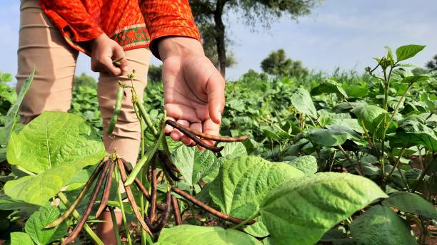
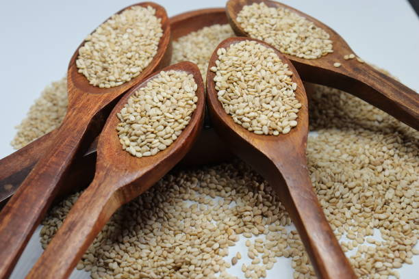

<html lang="en"></html>

<head>
    <meta charset="UTF-8">
    <meta name="Generator" content="EditPlus®">
    <meta name="Author" content="">
    <meta name="Keywords" content="">
    <meta name="Description" content="">
    <meta name="viewport" content="width=device-width, initial-scale=1.0">
    <title>AD-GROWN</title>
    <style>
        @media (min-width: 1000px) {
            #a {
                display: flex;
            }

            .b {
                width: 280%;
            }

            .c {
                width: 180%;
            }
        }


        /* Style the container for the Google Translate Element */
        #google_translate_element_container {
            position: fixed;
            bottom: 10px;
            right: 10px;
            z-index: 9999;
            transition: box-shadow 0.3s ease;
            /* Add transition for a smoother effect */
        }

        /* Style the Google Translate Element */
        #google_translate_element {
            border: 1px solid rgba(255, 174, 0);
            /* Cyan border color */
            padding: 10px;
            background-color: #f0f8ff;
            /* AliceBlue background color */
            border-radius: 5px;
            box-shadow: 0 0 10px rgba(255, 174, 0);
            /* Initial box-shadow */
        }

        /* Add box-shadow when hovering over the container */
        #google_translate_element_container:hover {
            box-shadow: 0 0 5px rgb(255, 174, 0),
                0 0 25px rgb(255, 174, 0),
                0 0 50px rgb(255, 174, 0);
        }

        @media (max-width: 460px) {
            #imgX {
                height: 200px;
                width: 300px;
            }

        }
    </style>
    <script type="text/javascript"
        src="https://translate.google.com/translate_a/element.js?cb=googleTranslateElementInit"></script>
    <script type="text/javascript">
        function googleTranslateElementInit() {
            new google.translate.TranslateElement({ pageLanguage: 'tel', layout: google.translate.TranslateElement.InlineLayout }, 'google_translate_element');
        }
    </script>
</head>

<body>
    <div id="google_translate_element_container">
        <div id="google_translate_element"></div>
    </div>
    <!--మొక్కజొన్న అని కూడా పిలువబడే మొక్కజొన్న, ప్రపంచంలోని అనేక ప్రాంతాలలో ప్రధానమైన పంట.  మొక్కజొన్న యొక్క పెరుగుతున్న విధానం నాటడం నుండి కోత వరకు అనేక దశలను కలిగి ఉంటుంది.  మొక్కజొన్న సాగు విధానం యొక్క సంక్షిప్త అవలోకనం ఇక్కడ ఉంది:

 నేల తయారీ: 6.0-7.5 pHతో బాగా ఎండిపోయిన నేలలో మొక్కజొన్న బాగా పెరుగుతుంది.  మట్టిని 6-8 అంగుళాల లోతు వరకు దున్నాలి మరియు ఏవైనా కలుపు మొక్కలు లేదా రాళ్లను తొలగించాలి.

 నాటడం: మొక్కజొన్న సాధారణంగా వసంతకాలంలో పండిస్తారు, మంచు ప్రమాదం దాటిన తర్వాత.  విత్తనాలను 1-2 అంగుళాల లోతులో, 30-36 అంగుళాల దూరంలో ఉన్న వరుసలలో నాటాలి.

 అంకురోత్పత్తి: మొక్కజొన్న విత్తనాలు 7-10 రోజులలో మొలకెత్తుతాయి, నేల తేమగా మరియు ఉష్ణోగ్రత తగినంతగా ఉంటే.  విత్తనం ఒక చిన్న రూట్ మరియు రెమ్మను పంపుతుంది, ఇది చివరికి మొక్కజొన్న మొక్కగా పెరుగుతుంది.

 పెరుగుదల: మొక్కజొన్న మొక్క పెరుగుతూనే ఉంటుంది, ఆకులు మరియు కాండాలను అభివృద్ధి చేస్తుంది.  ఇది కూడా tassels మరియు చెవులు ఉత్పత్తి ప్రారంభమవుతుంది.

 పరాగసంపర్కం: మొక్క పైభాగంలో ఉన్న టాసెల్స్‌లో మగ పువ్వులు ఉంటాయి, చెవుల్లో ఆడ పువ్వులు ఉంటాయి.  టసెల్స్ నుండి పుప్పొడి చెవుల పట్టుపై పడినప్పుడు పరాగసంపర్కం జరుగుతుంది.

 చెవి అభివృద్ధి: చెవులు పరాగసంపర్కం జరిగిన తర్వాత, అవి కెర్నలు అభివృద్ధి చెందడం ప్రారంభిస్తాయి.  ప్రతి కెర్నల్ ఒక పట్టుకు జోడించబడి ఉంటుంది, ఇది చివరికి ఎండిపోయి పడిపోతుంది.

 హార్వెస్టింగ్: మొక్కజొన్న సాధారణంగా శరదృతువులో పండిస్తారు, చెవులు పూర్తిగా పరిపక్వం చెందినప్పుడు మరియు కాండాలు మరియు ఆకులు గోధుమ రంగులోకి మారుతాయి.  చెవులను చేతితో లేదా యాంత్రిక హార్వెస్టర్ ఉపయోగించి పండిస్తారు.

 మొత్తంమీద, మొక్కజొన్న సాగు విధానంలో జాగ్రత్తగా నేల తయారీ, సరైన సమయంలో నాటడం మరియు అంకురోత్పత్తి, పెరుగుదల, పరాగసంపర్కం మరియు చెవి అభివృద్ధికి సరైన పరిస్థితులను నిర్ధారించడం వంటివి ఉంటాయి.
jowar
జొన్న అని కూడా పిలువబడే జొన్న, దాని ధాన్యాల కోసం విస్తృతంగా పండించే తృణధాన్యాల పంట. జోవర్ పెరుగుదల ప్రక్రియను అనేక దశలుగా విభజించవచ్చు:

విత్తన ఎంపిక మరియు నాటడం: చేతితో లేదా మెకానికల్ ప్లాంటర్‌ని ఉపయోగించి నాటడానికి అధిక-నాణ్యత గల విత్తనాలను ఎంపిక చేస్తారు. విత్తనాలు బాగా తయారుచేసిన నేలలో, సాధారణంగా వరుసలలో పండిస్తారు.

అంకురోత్పత్తి మరియు మొలక దశ: నాటిన తరువాత, జొన్న గింజలు మొలకెత్తుతాయి మరియు మొలకలుగా పెరుగుతాయి. ఈ దశలో, బలమైన రూట్ వ్యవస్థను ఏర్పాటు చేయడానికి మరియు ఆరోగ్యకరమైన ఆకులను అభివృద్ధి చేయడానికి మొలకలకు తగినంత తేమ, వెచ్చదనం మరియు పోషకాలు అవసరం.

ఏపుగా పెరగడం: జొన్న మొక్కలు మంచి రూట్ వ్యవస్థను ఏర్పాటు చేసుకున్న తర్వాత, అవి ఏపుగా పెరగడంపై దృష్టి పెడతాయి. మొక్కలు పెద్దవిగా పెరుగుతాయి మరియు కిరణజన్య సంయోగక్రియ మరియు ధాన్యం ఉత్పత్తికి ముఖ్యమైన ఆకులు మరియు కొమ్మలను అభివృద్ధి చేస్తాయి. మొక్కలు ఆరోగ్యకరమైన పెరుగుదలను ప్రోత్సహించడానికి క్రమం తప్పకుండా నీటిపారుదల మరియు ఫలదీకరణం చేయబడతాయి.

పుష్పించే మరియు ధాన్యం ఏర్పడటం: దాదాపు 45-60 రోజుల పెరుగుదల తర్వాత, జొన్న మొక్కలు పుష్పాలను ఉత్పత్తి చేయడం ప్రారంభిస్తాయి. పువ్వులు గాలి లేదా స్వీయ-పరాగసంపర్కం ద్వారా పరాగసంపర్కం చేయబడతాయి. పరాగసంపర్కం తరువాత, పువ్వులు ధాన్యాలుగా అభివృద్ధి చెందుతాయి, ఇవి స్పైక్ లాంటి పానికిల్‌లో ఉంటాయి.

ధాన్యం పరిపక్వత మరియు హార్వెస్టింగ్: ధాన్యాలు పరిపక్వం చెందడానికి దాదాపు 90-120 రోజులు పడుతుంది, ఈ సమయంలో పానికిల్ లోపల ధాన్యాలు పెరుగుతాయి మరియు అభివృద్ధి చెందుతాయి. పానికిల్స్ ఆకుపచ్చ నుండి గోధుమ రంగులోకి మారుతాయి, అవి పూర్తిగా పరిపక్వం చెందాయని సూచిస్తున్నాయి. జొన్నను సాధారణంగా మొక్క నుండి కాయలను కత్తిరించి వాటిని నూర్పిడి చేయడం ద్వారా ధాన్యాలను మొక్కల పదార్థం నుండి వేరు చేయడం ద్వారా పండిస్తారు.

పంటకోత తర్వాత ప్రాసెసింగ్: పంట కోసిన తర్వాత, ధాన్యాలను శుభ్రం చేసి, ఏదైనా చెత్త లేదా దెబ్బతిన్న గింజలను తొలగించడానికి క్రమబద్ధీకరించబడతాయి. ధాన్యాలను ఆహారం, పశుగ్రాసం లేదా జీవ ఇంధన ఉత్పత్తికి ఉపయోగించవచ్చు.

మొత్తంమీద, జోవర్ యొక్క పెరుగుదల ఉష్ణోగ్రత, తేమ మరియు సూర్యకాంతి వంటి పర్యావరణ కారకాల సంక్లిష్ట పరస్పర చర్యను కలిగి ఉంటుంది, అలాగే మొక్క యొక్క పెరుగుదల మరియు అభివృద్ధిని నిర్ణయించే జన్యుపరమైన కారకాలు. ఆరోగ్యకరమైన మరియు ఉత్పాదక పంటను నిర్ధారించడానికి తగినంత నీటి నిర్వహణ, పోషకాల నిర్వహణ మరియు తెగులు నియంత్రణ చాలా ముఖ్యమైనవి.
సొర్గుమ్ 
పెడి 
చిల్లి 
మేజ్ -->
    <CENTER>
        <H1><strong>1.PIGEON PEA / 1.ಪಾರಿವಾಳ ಪೀ</strong></H1>
    </CENTER>
    <center>
        
    </center>
    <DIV id="a" style="color:blue;justify-content:space-evenly;">
        <CENTER>
            <h2 class="notranslate" style="border:3px solid orange; color:BLACK;">
                <CENTER>
                    <h3>ENGLISH</h3>
                </CENTER>
                Pigeon pea, also known as "tur" or "arhar," is a significant pulse crop in India, valued for its
                nutritious seeds and adaptability to various soil types. Below is the step-by-step growing mechanism for
                pigeon pea from seed selection to harvesting:<br><br>

                1] <U>Seed Selection:</U> <br>Choose high-quality, disease-resistant seeds of
                pigeon pea. Popular varieties include "Bahar," "Asha," and "UPAS 120." Seeds should be inspected for
                size, color, and absence of damage.<br><br>

                2] <U>Soil Preparation:</U> <br>
                Pigeon pea thrives in well-drained, sandy loam to clayey soil with a pH of 6.0-7.5.
                The land should be cleared of weeds and debris. Incorporate organic matter such as compost or
                well-rotted manure into the soil to enhance fertility.<br><br>

                3] <U>Sowing:</U> <br>
                Pigeon pea is usually sown at the beginning of the monsoon season (June-July) in India. Seeds
                are planted 2-4 inches deep in rows spaced 30-45 cm apart. A spacing of 10-15 cm between seeds within
                the row is ideal for optimal growth.<br><br>

                4] <U>Germination:</U><br>
                After sowing, seeds require adequate moisture for germination, which usually occurs within
                7-10 days. Proper soil moisture is essential during this period to ensure good seedling
                emergence.<br><br>

                5] <U>Vegetative Growth:</U> <br>
                Once germination occurs, the plant enters a vegetative growth phase. Pigeon pea
                plants grow upright and can reach heights of 1-3 meters. Leaves are compound and alternate, providing a
                good canopy for photosynthesis.<br><br>

                6] <U>Flowering:</U><br>
                Pigeon pea typically begins flowering around 60-90 days after sowing. Flowers are usually
                yellow or white and attract various pollinators. Adequate pollination is crucial for fruit set.<br><br>

                7] <U>Pod Development:</U><br>
                After flowering, pods begin to form, usually containing 3-5 seeds each. This stage
                lasts about 30-40 days. Proper moisture and nutrient management during pod development are critical for
                maximizing yield.<br><br>

                8] <U>Pest and Disease Management:</U><br>
                Pigeon pea can be affected by pests such as pod borers and diseases like
                wilt and root rot. Regular monitoring is essential. Integrated pest management strategies, including
                crop rotation, use of resistant varieties, and organic pesticides, help control these issues.<br><br>

                9] <U>Seed Development:</U><br>
                As pods mature, the seeds inside grow and harden. The plant generally takes about
                100-180 days from sowing to reach maturity, depending on the variety and growing conditions.<br><br>

                10] <U>Harvesting:</U><br>
                Pigeon peas are harvested when the pods turn brown and dry, and the seeds rattle inside.
                This usually occurs 4-6 months after sowing. Harvesting is done manually or with sickles, cutting the
                plants at the base.<br><br>

                11] <U>Post-Harvest Processing:</U><br>
                After harvesting, the plants should be dried in the sun for a few days to
                reduce moisture content. Once dried, threshing is done to separate the seeds from the pods.<br><br>

                12] <U>Storage:</U><br>
                Seeds should be cleaned and stored in a cool, dry place in airtight containers to prevent
                moisture absorption and pest infestations. Proper storage ensures the seeds remain viable for future
                planting.<br><br>

                Throughout the growth cycle, pigeon pea plants require well-drained soil, moderate watering, and careful
                management to ensure a healthy and productive yield.
            </h2>
        </CENTER>
        <div class="a" id="translateThisSection" style="color:blACK; text-align:center;">
            <center>
                <h3 style="border:3px solid orange; color:BLACK;">
                    <CENTER>
                        <h1>ಕನ್ನಡ</h1>
                    </CENTER>
                    ಪಾರಿವಾಳ ಬಟಾಣಿ, "ತುರ್" ಅಥವಾ "ಅರ್ಹಾರ್" ಎಂದೂ ಸಹ ಕರೆಯಲ್ಪಡುತ್ತದೆ, ಇದು ಭಾರತದಲ್ಲಿ ಗಮನಾರ್ಹವಾದ ದ್ವಿದಳ ಧಾನ್ಯವಾಗಿದೆ, ಅದರ ಪೌಷ್ಟಿಕ ಬೀಜಗಳು ಮತ್ತು ವಿವಿಧ ಮಣ್ಣಿನ ಪ್ರಕಾರಗಳಿಗೆ ಹೊಂದಿಕೊಳ್ಳುವಿಕೆಗೆ ಮೌಲ್ಯಯುತವಾಗಿದೆ. ಬೀಜದ ಆಯ್ಕೆಯಿಂದ ಕೊಯ್ಲು ಮಾಡುವವರೆಗೆ ಪಾರಿವಾಳ ಬಟಾಣಿಗಾಗಿ ಹಂತ-ಹಂತದ ಬೆಳವಣಿಗೆಯ ಕಾರ್ಯವಿಧಾನವನ್ನು ಕೆಳಗೆ ನೀಡಲಾಗಿದೆ:<br><br>

                    1] <U>ಬೀಜ ಆಯ್ಕೆ:</U> <br>ಪಾರಿವಾಳ ಬಟಾಣಿಯ ಉತ್ತಮ ಗುಣಮಟ್ಟದ, ರೋಗ-ನಿರೋಧಕ ಬೀಜಗಳನ್ನು ಆಯ್ಕೆಮಾಡಿ. ಜನಪ್ರಿಯ ಪ್ರಭೇದಗಳಲ್ಲಿ "ಬಹರ್," "ಆಶಾ," ಮತ್ತು "ಯುಪಿಎಎಸ್ 120" ಸೇರಿವೆ. ಬೀಜಗಳ ಗಾತ್ರ, ಬಣ್ಣ ಮತ್ತು ಹಾನಿಯ ಅನುಪಸ್ಥಿತಿಗಾಗಿ ಪರೀಕ್ಷಿಸಬೇಕು.<br><br>

                    2] <U>ಮಣ್ಣಿನ ತಯಾರಿಕೆ:</U> <br> ಪಾರಿವಾಳದ ಬಟಾಣಿಯು 6.0-7.5 pH ನೊಂದಿಗೆ ಜೇಡಿಮಣ್ಣಿನ ಮಣ್ಣಿನಿಂದ ಚೆನ್ನಾಗಿ ಬರಿದುಹೋದ ಮರಳು ಮಿಶ್ರಿತ ಮಣ್ಣಿನಲ್ಲಿ ಬೆಳೆಯುತ್ತದೆ. ಭೂಮಿಯನ್ನು ಕಳೆ ಮತ್ತು ಕಸದಿಂದ ತೆರವುಗೊಳಿಸಬೇಕು. ಫಲವತ್ತತೆಯನ್ನು ಹೆಚ್ಚಿಸಲು ಸಾವಯವ ಪದಾರ್ಥಗಳಾದ ಕಾಂಪೋಸ್ಟ್ ಅಥವಾ ಚೆನ್ನಾಗಿ ಕೊಳೆತ ಗೊಬ್ಬರವನ್ನು ಮಣ್ಣಿನಲ್ಲಿ ಸೇರಿಸಿ.<br><br>

                    3] <U>ಬಿತ್ತನೆ:</U> <br> ಭಾರತದಲ್ಲಿ ಪಾರಿವಾಳವನ್ನು ಸಾಮಾನ್ಯವಾಗಿ ಮುಂಗಾರು ಋತುವಿನ ಆರಂಭದಲ್ಲಿ (ಜೂನ್-ಜುಲೈ) ಬಿತ್ತಲಾಗುತ್ತದೆ. ಬೀಜಗಳನ್ನು 30-45 ಸೆಂ.ಮೀ ಅಂತರದಲ್ಲಿ ಸಾಲುಗಳಲ್ಲಿ 2-4 ಇಂಚು ಆಳದಲ್ಲಿ ನೆಡಲಾಗುತ್ತದೆ. ಸಾಲಿನೊಳಗೆ ಬೀಜಗಳ ನಡುವೆ 10-15 ಸೆಂ.ಮೀ ಅಂತರವು ಅತ್ಯುತ್ತಮ ಬೆಳವಣಿಗೆಗೆ ಸೂಕ್ತವಾಗಿದೆ.<br><br>

                    4] <U> ಮೊಳಕೆಯೊಡೆಯುವಿಕೆ:</U><br> ಬಿತ್ತನೆಯ ನಂತರ, ಬೀಜಗಳು ಮೊಳಕೆಯೊಡೆಯಲು ಸಾಕಷ್ಟು ತೇವಾಂಶದ ಅಗತ್ಯವಿರುತ್ತದೆ, ಇದು ಸಾಮಾನ್ಯವಾಗಿ 7-10 ದಿನಗಳಲ್ಲಿ ಸಂಭವಿಸುತ್ತದೆ. ಉತ್ತಮ ಮೊಳಕೆ ಹೊರಹೊಮ್ಮುವಿಕೆಯನ್ನು ಖಚಿತಪಡಿಸಿಕೊಳ್ಳಲು ಸರಿಯಾದ ಮಣ್ಣಿನ ತೇವಾಂಶವು ಈ ಅವಧಿಯಲ್ಲಿ ಅತ್ಯಗತ್ಯ.<br><br>
        
                    5] <U>ಸಸ್ಯಕ ಬೆಳವಣಿಗೆ:</U> <br> ಒಮ್ಮೆ ಮೊಳಕೆಯೊಡೆದ ನಂತರ, ಸಸ್ಯವು ಸಸ್ಯಕ ಬೆಳವಣಿಗೆಯ ಹಂತವನ್ನು ಪ್ರವೇಶಿಸುತ್ತದೆ. ಪಾರಿವಾಳದ ಬಟಾಣಿ ಸಸ್ಯಗಳು ನೇರವಾಗಿ ಬೆಳೆಯುತ್ತವೆ ಮತ್ತು 1-3 ಮೀಟರ್ ಎತ್ತರವನ್ನು ತಲುಪಬಹುದು. ಎಲೆಗಳು ಸಂಯುಕ್ತ ಮತ್ತು ಪರ್ಯಾಯವಾಗಿರುತ್ತವೆ, ದ್ಯುತಿಸಂಶ್ಲೇಷಣೆಗೆ ಉತ್ತಮ ಮೇಲಾವರಣವನ್ನು ಒದಗಿಸುತ್ತವೆ.<br><br>

                    6] <U>ಹೂಬಿಡುವಿಕೆ:</U><br> ಪಾರಿವಾಳದ ಬಟಾಣಿ ಸಾಮಾನ್ಯವಾಗಿ ಬಿತ್ತನೆ ಮಾಡಿದ 60-90 ದಿನಗಳ ನಂತರ ಹೂಬಿಡಲು ಪ್ರಾರಂಭಿಸುತ್ತದೆ. ಹೂವುಗಳು ಸಾಮಾನ್ಯವಾಗಿ ಹಳದಿ ಅಥವಾ ಬಿಳಿ ಮತ್ತು ವಿವಿಧ ಪರಾಗಸ್ಪರ್ಶಕಗಳನ್ನು ಆಕರ್ಷಿಸುತ್ತವೆ. ಹಣ್ಣಿನ ಸೆಟ್‌ಗೆ ಸಾಕಷ್ಟು ಪರಾಗಸ್ಪರ್ಶವು ನಿರ್ಣಾಯಕವಾಗಿದೆ.<br><br>
    
                    7] <U>ಪಾಡ್ ಡೆವಲಪ್‌ಮೆಂಟ್:</U><br> ಹೂಬಿಡುವ ನಂತರ, ಬೀಜಗಳು ರೂಪುಗೊಳ್ಳಲು ಪ್ರಾರಂಭಿಸುತ್ತವೆ, ಸಾಮಾನ್ಯವಾಗಿ ಪ್ರತಿಯೊಂದೂ 3-5 ಬೀಜಗಳನ್ನು ಹೊಂದಿರುತ್ತದೆ. ಈ ಹಂತವು ಸುಮಾರು 30-40 ದಿನಗಳವರೆಗೆ ಇರುತ್ತದೆ. ಕಾಯಿ ಅಭಿವೃದ್ಧಿಯ ಸಮಯದಲ್ಲಿ ಸರಿಯಾದ ತೇವಾಂಶ ಮತ್ತು ಪೋಷಕಾಂಶಗಳ ನಿರ್ವಹಣೆಯು ಇಳುವರಿಯನ್ನು ಹೆಚ್ಚಿಸಲು ನಿರ್ಣಾಯಕವಾಗಿದೆ.<br><br>
    
                    8] <U>ಕೀಟ ಮತ್ತು ರೋಗ ನಿರ್ವಹಣೆ:</U><br> ಪಾರಿವಾಳದ ಬಟಾಣಿಯು ಕಾಯಿ ಕೊರೆಯುವ ಕೀಟಗಳು ಮತ್ತು ವಿಲ್ಟ್ ಮತ್ತು ಬೇರು ಕೊಳೆಯಂತಹ ರೋಗಗಳಿಂದ ಪ್ರಭಾವಿತವಾಗಿರುತ್ತದೆ. ನಿಯಮಿತ ಮೇಲ್ವಿಚಾರಣೆ ಅತ್ಯಗತ್ಯ. ಬೆಳೆ ತಿರುಗುವಿಕೆ, ನಿರೋಧಕ ಪ್ರಭೇದಗಳ ಬಳಕೆ ಮತ್ತು ಸಾವಯವ ಕೀಟನಾಶಕಗಳು ಸೇರಿದಂತೆ ಸಮಗ್ರ ಕೀಟ ನಿರ್ವಹಣೆ ತಂತ್ರಗಳು ಈ ಸಮಸ್ಯೆಗಳನ್ನು ನಿಯಂತ್ರಿಸಲು ಸಹಾಯ ಮಾಡುತ್ತವೆ.<br><br> 
              
                    9] <U>ಬೀಜ ಅಭಿವೃದ್ಧಿ:</U><br> ಬೀಜಕೋಶಗಳು ಬಲಿತಂತೆ, ಒಳಗಿನ ಬೀಜಗಳು ಬೆಳೆದು ಗಟ್ಟಿಯಾಗುತ್ತವೆ. ಸಸ್ಯವು ಸಾಮಾನ್ಯವಾಗಿ ವೈವಿಧ್ಯತೆ ಮತ್ತು ಬೆಳವಣಿಗೆಯ ಪರಿಸ್ಥಿತಿಗಳ ಆಧಾರದ ಮೇಲೆ ಪಕ್ವತೆಯನ್ನು ತಲುಪಲು ಬಿತ್ತನೆಯಿಂದ ಸುಮಾರು 100-180 ದಿನಗಳನ್ನು ತೆಗೆದುಕೊಳ್ಳುತ್ತದೆ.<br><br>

                    10] <U>ಕೊಯ್ಲು:</U><br> ಕಾಯಿಗಳು ಕಂದು ಮತ್ತು ಒಣಗಿದಾಗ ಪಾರಿವಾಳದ ಬಟಾಣಿಗಳನ್ನು ಕೊಯ್ಲು ಮಾಡಲಾಗುತ್ತದೆ ಮತ್ತು ಬೀಜಗಳು ಒಳಗೆ ಗಲಾಟೆ ಮಾಡುತ್ತವೆ. ಇದು ಸಾಮಾನ್ಯವಾಗಿ ಬಿತ್ತನೆ ಮಾಡಿದ 4-6 ತಿಂಗಳ ನಂತರ ಸಂಭವಿಸುತ್ತದೆ. ಕೊಯ್ಲು ಕೈಯಾರೆ ಅಥವಾ ಕುಡಗೋಲುಗಳಿಂದ ಮಾಡಲಾಗುತ್ತದೆ, ಬುಡದಲ್ಲಿ ಸಸ್ಯಗಳನ್ನು ಕತ್ತರಿಸುವುದು.<br><br>
    
                    11] <U>ಕೊಯ್ಲಿನ ನಂತರದ ಸಂಸ್ಕರಣೆ:</U><br> ಕೊಯ್ಲು ಮಾಡಿದ ನಂತರ, ತೇವಾಂಶವನ್ನು ಕಡಿಮೆ ಮಾಡಲು ಸಸ್ಯಗಳನ್ನು ಕೆಲವು ದಿನಗಳವರೆಗೆ ಬಿಸಿಲಿನಲ್ಲಿ ಒಣಗಿಸಬೇಕು. ಒಣಗಿದ ನಂತರ, ಬೀಜಗಳನ್ನು ಬೀಜಗಳಿಂದ ಬೇರ್ಪಡಿಸಲು ಒಕ್ಕಣೆ ಮಾಡಲಾಗುತ್ತದೆ.<br><br>
    
                    12] <U>ಸಂಗ್ರಹಣೆ:</U><br> ತೇವಾಂಶ ಹೀರುವಿಕೆ ಮತ್ತು ಕೀಟಗಳ ಬಾಧೆಗಳನ್ನು ತಡೆಗಟ್ಟಲು ಬೀಜಗಳನ್ನು ಗಾಳಿಯಾಡದ ಪಾತ್ರೆಗಳಲ್ಲಿ ತಂಪಾದ, ಶುಷ್ಕ ಸ್ಥಳದಲ್ಲಿ ಸ್ವಚ್ಛಗೊಳಿಸಬೇಕು ಮತ್ತು ಸಂಗ್ರಹಿಸಬೇಕು. ಸರಿಯಾದ ಶೇಖರಣೆಯು ಬೀಜಗಳು ಭವಿಷ್ಯದ ನೆಡುವಿಕೆಗೆ ಸಮರ್ಥವಾಗಿರುತ್ತವೆ.<br><br>
    
                    ಬೆಳವಣಿಗೆಯ ಚಕ್ರದ ಉದ್ದಕ್ಕೂ, ಪಾರಿವಾಳ ಬಟಾಣಿ ಸಸ್ಯಗಳಿಗೆ ಆರೋಗ್ಯಕರ ಮತ್ತು ಉತ್ಪಾದಕ ಇಳುವರಿಯನ್ನು ಖಚಿತಪಡಿಸಿಕೊಳ್ಳಲು ಚೆನ್ನಾಗಿ ಬರಿದುಹೋದ ಮಣ್ಣು, ಮಧ್ಯಮ ನೀರುಹಾಕುವುದು ಮತ್ತು ಎಚ್ಚರಿಕೆಯಿಂದ ನಿರ್ವಹಣೆ ಅಗತ್ಯವಿರುತ್ತದೆ.
                </h3>
            </center>
            <audio controls src="TELANGANA/TP AUDIO\jowar.m4a"></audio>
            <h2>ಕೇಳು</h2>
        </div>
    </DIV>

    <CENTER>
        <H1><strong>2.GREEN GRAM / 2.ಹಸಿರು ಗ್ರಾಂ</strong></H1>
    </CENTER>
    <center>
        
    </center>
    <DIV id="a" style="color:blue;  justify-content:space-evenly;">
        <CENTER>
            <h2 class="notranslate" style="border:3px solid orange; color:BLACK;">
                <CENTER>
                    <h3>ENGLISH</h3>
                </CENTER>
                Green gram, also known as moong dal, is a highly nutritious legume widely cultivated in India. It is
                valued for its protein content and quick growth cycle. Below is a detailed step-by-step mechanism for
                growing green gram from seed selection to harvesting:<br><br>

                1] <U>Seed Selection and Sowing:</U> <br>
                Select high-quality, disease-free green gram seeds. It’s important to treat seeds with fungicides to
                minimize the risk of soil-borne diseases. Green gram is typically sown in the kharif season (June to
                July) or rabi season (October to November). Seeds are sown about 2-3 cm deep in well-drained soil, with
                rows spaced 30-45 cm apart.<br><br>

                2] <U>Germination:</U> <br>
                After sowing, the seeds absorb moisture and begin germinating. This process usually takes about 5-7
                days, provided the soil temperature is between 25°C and 30°C. The radicle (embryonic root) emerges
                first, followed by the shoot.<br><br>

                3] <U>Vegetative Growth:</U> <br>
                Once germinated, the plant enters the vegetative growth phase. Green gram develops a robust root system
                and erect stems with trifoliate leaves. The plant typically grows to a height of 30-60 cm. Adequate
                sunlight and moisture are crucial for healthy growth during this phase.<br><br>

                4] <U>Flowering:</U> <br>
                About 30-40 days after sowing, the plant begins to flower. The flowers are small, yellow, and often
                appear in clusters. Green gram is primarily self-pollinating, which means it does not require external
                pollinators. Flowering lasts for about 2-3 weeks, and favorable weather conditions are essential for
                optimal pollination.<br><br>

                5] <U>Pod Formation:</U> <br>
                Following successful pollination, flowers develop into pods. Each pod usually contains 4-6 seeds. This
                phase occurs approximately 60-70 days after sowing. Adequate moisture is important during pod formation
                to ensure good seed development.<br><br>

                6] <U>Pest and Disease Management:</U> <br>
                Green gram can be affected by pests such as aphids, pod borers, and diseases like bacterial blight and
                downy mildew. Regular monitoring is vital. Integrated Pest Management (IPM) practices, including neem
                oil applications and crop rotation, can effectively manage these issues.<br><br>

                7] <U>Seed Development:</U> <br>
                As pods mature, the seeds inside grow and harden over a period of about 20-30 days. The plants gradually
                begin to yellow and dry out, indicating the seeds are nearing maturity. Watering should be minimized to
                promote proper drying of the plants.<br><br>

                8] <U>Harvesting:</U> <br>
                Harvesting is done when the pods are fully mature and dry, typically 90-100 days after sowing. The
                plants are cut at the base, and the pods are left to dry in the field for a few days. Threshing can be
                done manually or mechanically to separate the seeds from the pods.<br><br>

                9] <U>Post-Harvest Processing:</U> <br>
                After threshing, the seeds are cleaned and dried to reduce moisture content. Proper storage is crucial
                to prevent spoilage and pest infestations. Seeds should be kept in cool, dry conditions, ideally in
                airtight containers.<br><br>

                10] <U>Pest Control in Storage:</U> <br>
                To protect stored green gram, consider using natural pest repellents or storage techniques like
                diatomaceous earth. Regular inspections of stored seeds are essential to maintain quality and prevent
                damage from insects.<br><br>

                Throughout its growth, green gram benefits from well-drained soil, adequate sunlight, and proper care
                during each phase to ensure a successful harvest.
            </h2>
        </CENTER>
        <div class="b" id="translateThisSection" style="color:blACK;   text-align:center;float:right;">
            <center>
                <h3 style="border:3px solid orange; color:BLACK;">
                    <CENTER>
                        <h1>ಕನ್ನಡ</h1>
                    </CENTER>
                    ಹಸಿರು ಬೇಳೆ, ಮೂಂಗ್ ದಾಲ್ ಎಂದೂ ಕರೆಯುತ್ತಾರೆ, ಇದು ಭಾರತದಲ್ಲಿ ವ್ಯಾಪಕವಾಗಿ ಬೆಳೆಸಲಾಗುವ ಹೆಚ್ಚು ಪೌಷ್ಟಿಕಾಂಶದ ದ್ವಿದಳ ಧಾನ್ಯವಾಗಿದೆ. ಅದರ ಪ್ರೋಟೀನ್ ಅಂಶ ಮತ್ತು ತ್ವರಿತ ಬೆಳವಣಿಗೆಯ ಚಕ್ರಕ್ಕೆ ಇದು ಮೌಲ್ಯಯುತವಾಗಿದೆ. ಬೀಜದ ಆಯ್ಕೆಯಿಂದ ಕೊಯ್ಲು ಮಾಡುವವರೆಗೆ ಹಸಿರು ಧಾನ್ಯಗಳನ್ನು ಬೆಳೆಯಲು ವಿವರವಾದ ಹಂತ-ಹಂತದ ಕಾರ್ಯವಿಧಾನವನ್ನು ಕೆಳಗೆ ನೀಡಲಾಗಿದೆ:<br><br>

                    1] <U>ಬೀಜ ಆಯ್ಕೆ ಮತ್ತು ಬಿತ್ತನೆ:</U> <br> ಉತ್ತಮ ಗುಣಮಟ್ಟದ, ರೋಗ-ಮುಕ್ತ ಹಸಿರು ಕಾಳುಗಳನ್ನು ಆಯ್ಕೆಮಾಡಿ. ಮಣ್ಣಿನಿಂದ ಹರಡುವ ರೋಗಗಳ ಅಪಾಯವನ್ನು ಕಡಿಮೆ ಮಾಡಲು ಬೀಜಗಳನ್ನು ಶಿಲೀಂಧ್ರನಾಶಕಗಳೊಂದಿಗೆ ಸಂಸ್ಕರಿಸುವುದು ಮುಖ್ಯವಾಗಿದೆ. ಹಸಿರು ಕಾಳುಗಳನ್ನು ಸಾಮಾನ್ಯವಾಗಿ ಖಾರಿಫ್ ಋತುವಿನಲ್ಲಿ (ಜೂನ್ ನಿಂದ ಜುಲೈ) ಅಥವಾ ರಬಿ ಋತುವಿನಲ್ಲಿ (ಅಕ್ಟೋಬರ್ ನಿಂದ ನವೆಂಬರ್) ಬಿತ್ತಲಾಗುತ್ತದೆ. ಬೀಜಗಳನ್ನು ಚೆನ್ನಾಗಿ ಬರಿದಾದ ಮಣ್ಣಿನಲ್ಲಿ 2-3 ಸೆಂ.ಮೀ ಆಳದಲ್ಲಿ ಬಿತ್ತಲಾಗುತ್ತದೆ, ಸಾಲುಗಳು 30-45 ಸೆಂ.ಮೀ ಅಂತರದಲ್ಲಿರುತ್ತವೆ.<br><br>
    
                    2] <U> ಮೊಳಕೆಯೊಡೆಯುವಿಕೆ:</U> <br> ಬಿತ್ತನೆಯ ನಂತರ, ಬೀಜಗಳು ತೇವಾಂಶವನ್ನು ಹೀರಿಕೊಳ್ಳುತ್ತವೆ ಮತ್ತು ಮೊಳಕೆಯೊಡೆಯಲು ಪ್ರಾರಂಭಿಸುತ್ತವೆ. ಈ ಪ್ರಕ್ರಿಯೆಯು ಸಾಮಾನ್ಯವಾಗಿ ಸುಮಾರು 5-7 ದಿನಗಳನ್ನು ತೆಗೆದುಕೊಳ್ಳುತ್ತದೆ, ಮಣ್ಣಿನ ಉಷ್ಣತೆಯು 25 ° C ಮತ್ತು 30 ° C ನಡುವೆ ಇರುತ್ತದೆ. ಮೂಲಾಧಾರವು (ಭ್ರೂಣದ ಮೂಲ) ಮೊದಲು ಹೊರಹೊಮ್ಮುತ್ತದೆ, ನಂತರ ಚಿಗುರು.<br><br>
    
                    3] <U>ಸಸ್ಯಕ ಬೆಳವಣಿಗೆ:</U> <br> ಒಮ್ಮೆ ಮೊಳಕೆಯೊಡೆದ ನಂತರ, ಸಸ್ಯವು ಸಸ್ಯಕ ಬೆಳವಣಿಗೆಯ ಹಂತವನ್ನು ಪ್ರವೇಶಿಸುತ್ತದೆ. ಹಸಿರು ಕಣವು ದೃಢವಾದ ಬೇರಿನ ವ್ಯವಸ್ಥೆಯನ್ನು ಅಭಿವೃದ್ಧಿಪಡಿಸುತ್ತದೆ ಮತ್ತು ಟ್ರಿಫೋಲಿಯೇಟ್ ಎಲೆಗಳೊಂದಿಗೆ ನೆಟ್ಟಗೆ ಕಾಂಡಗಳನ್ನು ಹೊಂದಿರುತ್ತದೆ. ಸಸ್ಯವು ಸಾಮಾನ್ಯವಾಗಿ 30-60 ಸೆಂ.ಮೀ ಎತ್ತರಕ್ಕೆ ಬೆಳೆಯುತ್ತದೆ. ಈ ಹಂತದಲ್ಲಿ ಆರೋಗ್ಯಕರ ಬೆಳವಣಿಗೆಗೆ ಸಾಕಷ್ಟು ಸೂರ್ಯನ ಬೆಳಕು ಮತ್ತು ತೇವಾಂಶವು ನಿರ್ಣಾಯಕವಾಗಿದೆ.<br><br>
    
                    4] <U>ಹೂಬಿಡುವುದು:</U> <br> ಬಿತ್ತನೆ ಮಾಡಿದ ಸುಮಾರು 30-40 ದಿನಗಳ ನಂತರ, ಸಸ್ಯವು ಹೂಬಿಡಲು ಪ್ರಾರಂಭಿಸುತ್ತದೆ. ಹೂವುಗಳು ಚಿಕ್ಕದಾಗಿರುತ್ತವೆ, ಹಳದಿ ಬಣ್ಣದಲ್ಲಿರುತ್ತವೆ ಮತ್ತು ಹೆಚ್ಚಾಗಿ ಗೊಂಚಲುಗಳಲ್ಲಿ ಕಾಣಿಸಿಕೊಳ್ಳುತ್ತವೆ. ಹಸಿರು ಗ್ರಾಂ ಪ್ರಾಥಮಿಕವಾಗಿ ಸ್ವಯಂ ಪರಾಗಸ್ಪರ್ಶವನ್ನು ಹೊಂದಿದೆ, ಅಂದರೆ ಇದಕ್ಕೆ ಬಾಹ್ಯ ಪರಾಗಸ್ಪರ್ಶಕಗಳ ಅಗತ್ಯವಿಲ್ಲ. ಹೂಬಿಡುವಿಕೆಯು ಸುಮಾರು 2-3 ವಾರಗಳವರೆಗೆ ಇರುತ್ತದೆ ಮತ್ತು ಅನುಕೂಲಕರ ಹವಾಮಾನ ಪರಿಸ್ಥಿತಿಗಳು ಅವಶ್ಯಕ ಅತ್ಯುತ್ತಮ ಪರಾಗಸ್ಪರ್ಶ.<br><br>  
                
                    5] <U>ಪಾಡ್ ರಚನೆ:</U> <br> ಯಶಸ್ವಿ ಪರಾಗಸ್ಪರ್ಶದ ನಂತರ, ಹೂವುಗಳು ಬೀಜಕೋಶಗಳಾಗಿ ಬೆಳೆಯುತ್ತವೆ. ಪ್ರತಿ ಪಾಡ್ ಸಾಮಾನ್ಯವಾಗಿ 4-6 ಬೀಜಗಳನ್ನು ಹೊಂದಿರುತ್ತದೆ. ಈ ಹಂತವು ಬಿತ್ತನೆ ಮಾಡಿದ ಸುಮಾರು 60-70 ದಿನಗಳ ನಂತರ ಸಂಭವಿಸುತ್ತದೆ. ಉತ್ತಮ ಬೀಜ ಅಭಿವೃದ್ಧಿಯನ್ನು ಖಚಿತಪಡಿಸಿಕೊಳ್ಳಲು ಪಾಡ್ ರಚನೆಯ ಸಮಯದಲ್ಲಿ ಸಾಕಷ್ಟು ತೇವಾಂಶವು ಮುಖ್ಯವಾಗಿದೆ.<br><br>

                    6] <U>ಕೀಟ ಮತ್ತು ರೋಗ ನಿರ್ವಹಣೆ:</U> <br> ಗಿಡಹೇನುಗಳು, ಕಾಯಿ ಕೊರೆಯುವ ಕೀಟಗಳಂತಹ ಕೀಟಗಳು ಮತ್ತು ಬ್ಯಾಕ್ಟೀರಿಯಾದ ಕೊಳೆತ ಮತ್ತು ಸೂಕ್ಷ್ಮ ಶಿಲೀಂಧ್ರದಂತಹ ರೋಗಗಳಿಂದ ಹಸಿರು ಧಾನ್ಯವು ಪರಿಣಾಮ ಬೀರಬಹುದು. ನಿಯಮಿತ ಮೇಲ್ವಿಚಾರಣೆ ಅತ್ಯಗತ್ಯ. ಇಂಟಿಗ್ರೇಟೆಡ್ ಪೆಸ್ಟ್ ಮ್ಯಾನೇಜ್‌ಮೆಂಟ್ (IPM) ಪದ್ಧತಿಗಳು, ಬೇವಿನ ಎಣ್ಣೆ ಅನ್ವಯಗಳು ಮತ್ತು ಬೆಳೆ ಸರದಿ ಸೇರಿದಂತೆ, ಈ ಸಮಸ್ಯೆಗಳನ್ನು ಪರಿಣಾಮಕಾರಿಯಾಗಿ ನಿರ್ವಹಿಸಬಹುದು.<br><br>
    
                    7] <U>ಬೀಜ ಅಭಿವೃದ್ಧಿ:</U> <br> ಬೀಜಕೋಶಗಳು ಬೆಳೆದಂತೆ, ಒಳಗಿನ ಬೀಜಗಳು ಸುಮಾರು 20-30 ದಿನಗಳ ಅವಧಿಯಲ್ಲಿ ಬೆಳೆಯುತ್ತವೆ ಮತ್ತು ಗಟ್ಟಿಯಾಗುತ್ತವೆ. ಸಸ್ಯಗಳು ಕ್ರಮೇಣ ಹಳದಿ ಮತ್ತು ಒಣಗಲು ಪ್ರಾರಂಭಿಸುತ್ತವೆ, ಇದು ಬೀಜಗಳು ಪ್ರಬುದ್ಧತೆಯನ್ನು ಸಮೀಪಿಸುತ್ತಿದೆ ಎಂದು ಸೂಚಿಸುತ್ತದೆ. ಸಸ್ಯಗಳ ಸರಿಯಾದ ಒಣಗಿಸುವಿಕೆಯನ್ನು ಉತ್ತೇಜಿಸಲು ನೀರುಹಾಕುವುದನ್ನು ಕಡಿಮೆ ಮಾಡಬೇಕು.<br><br>
    
                    8] <U>ಕೊಯ್ಲು:</U> <br> ಬೀಜಗಳು ಸಂಪೂರ್ಣವಾಗಿ ಬಲಿತ ಮತ್ತು ಒಣಗಿದಾಗ ಕೊಯ್ಲು ಮಾಡಲಾಗುತ್ತದೆ, ಸಾಮಾನ್ಯವಾಗಿ ಬಿತ್ತನೆ ಮಾಡಿದ 90-100 ದಿನಗಳ ನಂತರ. ಗಿಡಗಳನ್ನು ಬುಡದಲ್ಲಿ ಕತ್ತರಿಸಿ, ಕಾಯಿಗಳನ್ನು ಕೆಲವು ದಿನಗಳವರೆಗೆ ಹೊಲದಲ್ಲಿ ಒಣಗಲು ಬಿಡಲಾಗುತ್ತದೆ. ಬೀಜಗಳನ್ನು ಬೀಜಗಳಿಂದ ಬೇರ್ಪಡಿಸಲು ಹಸ್ತಚಾಲಿತವಾಗಿ ಅಥವಾ ಯಾಂತ್ರಿಕವಾಗಿ ಒಕ್ಕಣೆ ಮಾಡಬಹುದು.<br><br>
    
                    9] <U>ಕೊಯ್ಲಿನ ನಂತರದ ಸಂಸ್ಕರಣೆ:</U> <br> ಒಡೆದ ನಂತರ, ತೇವಾಂಶವನ್ನು ಕಡಿಮೆ ಮಾಡಲು ಬೀಜಗಳನ್ನು ಸ್ವಚ್ಛಗೊಳಿಸಲಾಗುತ್ತದೆ ಮತ್ತು ಒಣಗಿಸಲಾಗುತ್ತದೆ. ಹಾಳಾಗುವಿಕೆ ಮತ್ತು ಕೀಟಗಳ ಆಕ್ರಮಣವನ್ನು ತಡೆಗಟ್ಟಲು ಸರಿಯಾದ ಶೇಖರಣೆ ಮುಖ್ಯವಾಗಿದೆ. ಬೀಜಗಳನ್ನು ತಂಪಾದ, ಶುಷ್ಕ ಸ್ಥಿತಿಯಲ್ಲಿ ಇರಿಸಬೇಕು, ಆದರ್ಶಪ್ರಾಯವಾಗಿ ಗಾಳಿಯಾಡದ ಪಾತ್ರೆಗಳಲ್ಲಿ.<br><br>
                
                    10] <U>ಸಂಗ್ರಹಣೆಯಲ್ಲಿ ಕೀಟ ನಿಯಂತ್ರಣ:</U> <br> ಸಂಗ್ರಹಿಸಿದ ಹಸಿರು ಕಾಳುಗಳನ್ನು ರಕ್ಷಿಸಲು, ನೈಸರ್ಗಿಕ ಕೀಟ ನಿವಾರಕಗಳು ಅಥವಾ ಡಯಾಟೊಮ್ಯಾಸಿಯಸ್ ಭೂಮಿಯಂತಹ ಶೇಖರಣಾ ತಂತ್ರಗಳನ್ನು ಬಳಸುವುದನ್ನು ಪರಿಗಣಿಸಿ. ಗುಣಮಟ್ಟವನ್ನು ಕಾಪಾಡಿಕೊಳ್ಳಲು ಮತ್ತು ಕೀಟಗಳಿಂದ ಹಾನಿಯಾಗದಂತೆ ತಡೆಯಲು ಸಂಗ್ರಹಿಸಿದ ಬೀಜಗಳ ನಿಯಮಿತ ತಪಾಸಣೆ ಅತ್ಯಗತ್ಯ.<br><br>

                    ಅದರ ಬೆಳವಣಿಗೆಯ ಉದ್ದಕ್ಕೂ, ಹಸಿರು ಬೇಳೆಯು ಚೆನ್ನಾಗಿ ಬರಿದುಹೋದ ಮಣ್ಣು, ಸಾಕಷ್ಟು ಸೂರ್ಯನ ಬೆಳಕು ಮತ್ತು ಪ್ರತಿ ಹಂತದಲ್ಲಿ ಸರಿಯಾದ ಕಾಳಜಿಯಿಂದ ಪ್ರಯೋಜನಕಾರಿ ಸುಗ್ಗಿಯನ್ನು ಖಚಿತಪಡಿಸುತ್ತದೆ.
                </h3>
            </center>
            <audio controls src="TELANGANA/TP AUDIO\paddy.m4a"></audio>
            <h2>ಕೇಳು</h2>
        </div>
    </DIV>

    <CENTER>
        <H1><strong>3.BLACK GRAM / 3.ಕಪ್ಪು ಗ್ರಾಂ</strong></H1>
    </CENTER>
    <center>
        
    </center>
    <DIV id="a" style="color:blue; justify-content:space-evenly;">
        <CENTER>
            <h2 class="notranslate" style="border:3px solid orange; color:BLACK;">
                <CENTER>
                    <h3>ENGLISH</h3>
                </CENTER>
                Black gram, also known as urad dal, is a valuable legume in Indian agriculture, known for its high
                protein content and various culinary uses. Here’s a detailed step-by-step mechanism for growing black
                gram from seed selection to harvesting:<br><br>

                1] <U> Seed Selection and Sowing:</U> <br>
                Start with selecting high-quality, disease-free black gram seeds. Seeds
                should be treated with fungicides to prevent soil-borne diseases. The optimal time for sowing is during
                the kharif season (June to July) when the soil temperature is warm. Seeds are sown 2-3 cm deep in
                well-prepared, well-drained soil, ideally in rows spaced 30-45 cm apart.<br><br>

                2] <U> Germination:</U> <br>
                Upon sowing, black gram seeds absorb moisture and begin to germinate. This process takes
                about 5-7 days under suitable conditions, with the radicle emerging first, followed by the shoot. Soil
                temperature around 25°C to 30°C promotes good germination.<br><br>

                3] <U> Vegetative Growth: </U> <br>
                After germination, the plant enters the vegetative growth phase. Black gram develops
                a strong root system and erect stems with broad leaves. The plant typically grows to about 60-90 cm in
                height. Adequate sunlight and moisture are crucial during this stage to ensure healthy leaf
                development.<br><br>

                4] <U> Flowering:</U> <br>
                Approximately 30-40 days after sowing, the plant begins to flower. The flowers are small and
                white, appearing in clusters. Black gram plants are primarily self-pollinating, which means they do not
                rely on external pollinators. This phase lasts for about 2-3 weeks.<br><br>

                5] <U> Pod Formation: </U> <br>
                After successful pollination, the flowers develop into pods. Each pod usually contains
                2-6 seeds. This stage is critical for the development of seeds, and it typically occurs 60-70 days after
                sowing. The plants should be monitored for moisture needs, as water stress can adversely affect pod
                formation.<br><br>

                6] <U> Pest and Disease Management: </U> <br>
                Black gram is susceptible to pests like aphids and diseases such as blight
                and wilt. Regular monitoring is essential. Integrated Pest Management (IPM) strategies, including the
                use of neem oil and insecticidal soaps, can effectively control pests. Crop rotation and resistant
                varieties help manage diseases.<br><br>

                7] <U> Seed Development: </U> <br>
                As the pods mature, seeds inside grow and harden. This maturation process lasts for
                about 20-30 days. The plant begins to yellow and dry out, indicating that the seeds are nearing
                maturity. Watering should be reduced to promote drying.<br><br>

                8] <U> Harvesting: </U> <br>
                Harvesting occurs when the pods are fully mature and dry, typically 90-110 days after
                sowing. The plants are cut at the base, and the pods are allowed to dry further in the field for a few
                days. Manual or mechanical threshing is used to separate the seeds from the pods.<br><br>

                9] <U> Post-Harvest Processing: </U> <br>
                After threshing, the seeds are cleaned and dried to remove any residual
                moisture. Proper storage in cool, dry conditions helps prevent spoilage and pest infestations.
                Containers should be airtight to protect against humidity.<br><br>

                10] <U> Pest Control in Storage: </U> <br>
                To ensure the longevity of stored black gram, use insect repellents or storage
                methods such as diatomaceous earth to prevent pest damage. Regular inspections are essential to maintain
                seed quality.<br><br>

                Throughout its growth, black gram thrives in warm climates with well-drained soils. Adequate care during
                each phase of its development can lead to a successful and bountiful harvest.
            </h2>
        </CENTER>
        <div class="b" id="translateThisSection" style="color:blACK;   text-align:center;float:right;">
            <center>
                <h3 style="border:3px solid orange; color:BLACK;">
                    <CENTER>
                        <h1>ಕನ್ನಡ</h1>
                    </CENTER>
                    ಕಾಳು, ಉದ್ದಿನ ಬೇಳೆ ಎಂದೂ ಕರೆಯುತ್ತಾರೆ, ಇದು ಭಾರತೀಯ ಕೃಷಿಯಲ್ಲಿ ಅಮೂಲ್ಯವಾದ ದ್ವಿದಳ ಧಾನ್ಯವಾಗಿದೆ, ಇದು ಹೆಚ್ಚಿನ ಪ್ರೋಟೀನ್ ಅಂಶ ಮತ್ತು ವಿವಿಧ ಪಾಕಶಾಲೆಯ ಬಳಕೆಗಳಿಗೆ ಹೆಸರುವಾಸಿಯಾಗಿದೆ. ಬೀಜದ ಆಯ್ಕೆಯಿಂದ ಕೊಯ್ಲು ಮಾಡುವವರೆಗೆ ಕರಿಬೇವನ್ನು ಬೆಳೆಯಲು ವಿವರವಾದ ಹಂತ-ಹಂತದ ಕಾರ್ಯವಿಧಾನ ಇಲ್ಲಿದೆ:<br><br>

                    1] <U> ಬೀಜ ಆಯ್ಕೆ ಮತ್ತು ಬಿತ್ತನೆ:</U> <br> ಉತ್ತಮ ಗುಣಮಟ್ಟದ, ರೋಗ-ಮುಕ್ತ ಕಪ್ಪು ಕಾಳು ಬೀಜಗಳನ್ನು ಆಯ್ಕೆ ಮಾಡುವುದರೊಂದಿಗೆ ಪ್ರಾರಂಭಿಸಿ. ಮಣ್ಣಿನಿಂದ ಹರಡುವ ರೋಗಗಳನ್ನು ತಡೆಗಟ್ಟಲು ಬೀಜಗಳನ್ನು ಶಿಲೀಂಧ್ರನಾಶಕಗಳೊಂದಿಗೆ ಸಂಸ್ಕರಿಸಬೇಕು. ಬಿತ್ತನೆಗೆ ಸೂಕ್ತ ಸಮಯವೆಂದರೆ ಖಾರಿಫ್ ಋತುವಿನಲ್ಲಿ (ಜೂನ್ ನಿಂದ ಜುಲೈ) ಮಣ್ಣಿನ ಉಷ್ಣತೆಯು ಬೆಚ್ಚಗಿರುತ್ತದೆ. ಬೀಜಗಳನ್ನು 2-3 ಸೆಂ.ಮೀ ಆಳದಲ್ಲಿ ಚೆನ್ನಾಗಿ ಸಿದ್ಧಪಡಿಸಿದ, ಚೆನ್ನಾಗಿ ಬರಿದಾದ ಮಣ್ಣಿನಲ್ಲಿ ಬಿತ್ತಲಾಗುತ್ತದೆ, ಆದರ್ಶಪ್ರಾಯವಾಗಿ 30-45 ಸೆಂ.ಮೀ ಅಂತರದ ಸಾಲುಗಳಲ್ಲಿ.<br><br>
    
                    2] <U> ಮೊಳಕೆಯೊಡೆಯುವಿಕೆ:</U> <br> ಬಿತ್ತನೆಯ ನಂತರ, ಕಪ್ಪು ಕಾಳುಗಳು ತೇವಾಂಶವನ್ನು ಹೀರಿಕೊಳ್ಳುತ್ತವೆ ಮತ್ತು ಮೊಳಕೆಯೊಡೆಯಲು ಪ್ರಾರಂಭಿಸುತ್ತವೆ. ಈ ಪ್ರಕ್ರಿಯೆಯು ಸೂಕ್ತವಾದ ಪರಿಸ್ಥಿತಿಗಳಲ್ಲಿ ಸುಮಾರು 5-7 ದಿನಗಳನ್ನು ತೆಗೆದುಕೊಳ್ಳುತ್ತದೆ, ಮೊದಲು ರಾಡಿಕಲ್ ಹೊರಹೊಮ್ಮುತ್ತದೆ, ನಂತರ ಚಿಗುರು. ಮಣ್ಣಿನ ತಾಪಮಾನ ಸುಮಾರು 25°C ರಿಂದ 30°C ಉತ್ತಮ ಮೊಳಕೆಯೊಡೆಯುವುದನ್ನು ಉತ್ತೇಜಿಸುತ್ತದೆ.<br><br>
    
                    3] <U> ಸಸ್ಯಕ ಬೆಳವಣಿಗೆ: </U> <br> ಮೊಳಕೆಯೊಡೆದ ನಂತರ, ಸಸ್ಯವು ಸಸ್ಯಕ ಬೆಳವಣಿಗೆಯ ಹಂತವನ್ನು ಪ್ರವೇಶಿಸುತ್ತದೆ. ಕರಿಬೇವು ಬಲವಾದ ಬೇರಿನ ವ್ಯವಸ್ಥೆಯನ್ನು ಅಭಿವೃದ್ಧಿಪಡಿಸುತ್ತದೆ ಮತ್ತು ಅಗಲವಾದ ಎಲೆಗಳೊಂದಿಗೆ ನೆಟ್ಟಗೆ ಕಾಂಡಗಳನ್ನು ಹೊಂದಿರುತ್ತದೆ. ಸಸ್ಯವು ಸಾಮಾನ್ಯವಾಗಿ 60-90 ಸೆಂ.ಮೀ ಎತ್ತರಕ್ಕೆ ಬೆಳೆಯುತ್ತದೆ. ಆರೋಗ್ಯಕರ ಎಲೆಗಳ ಬೆಳವಣಿಗೆಯನ್ನು ಖಚಿತಪಡಿಸಿಕೊಳ್ಳಲು ಈ ಹಂತದಲ್ಲಿ ಸಾಕಷ್ಟು ಸೂರ್ಯನ ಬೆಳಕು ಮತ್ತು ತೇವಾಂಶವು ನಿರ್ಣಾಯಕವಾಗಿದೆ.<br><br>
    
                    4] <U> ಹೂಬಿಡುವಿಕೆ:</U> <br> ಬಿತ್ತನೆ ಮಾಡಿದ ಸುಮಾರು 30-40 ದಿನಗಳ ನಂತರ, ಸಸ್ಯವು ಹೂಬಿಡಲು ಪ್ರಾರಂಭಿಸುತ್ತದೆ. ಹೂವುಗಳು ಚಿಕ್ಕದಾಗಿರುತ್ತವೆ ಮತ್ತು ಬಿಳಿಯಾಗಿರುತ್ತವೆ, ಗೊಂಚಲುಗಳಲ್ಲಿ ಕಾಣಿಸಿಕೊಳ್ಳುತ್ತವೆ. ಕಪ್ಪು ಗ್ರಾಂ ಸಸ್ಯಗಳು ಪ್ರಾಥಮಿಕವಾಗಿ ಸ್ವಯಂ ಪರಾಗಸ್ಪರ್ಶ ಮಾಡುತ್ತವೆ, ಅಂದರೆ ಅವು ಬಾಹ್ಯ ಪರಾಗಸ್ಪರ್ಶಕಗಳ ಮೇಲೆ ಅವಲಂಬಿತವಾಗಿಲ್ಲ. ಈ ಹಂತವು ಸುಮಾರು 2-3 ವಾರಗಳವರೆಗೆ ಇರುತ್ತದೆ.<br><br>
                    
                    5] <U> ಪಾಡ್ ರಚನೆ: </U> <br> ಯಶಸ್ವಿ ಪರಾಗಸ್ಪರ್ಶದ ನಂತರ, ಹೂವುಗಳು ಬೀಜಕೋಶಗಳಾಗಿ ಬೆಳೆಯುತ್ತವೆ. ಪ್ರತಿ ಪಾಡ್ ಸಾಮಾನ್ಯವಾಗಿ 2-6 ಬೀಜಗಳನ್ನು ಹೊಂದಿರುತ್ತದೆ. ಈ ಹಂತವು ಬೀಜಗಳ ಬೆಳವಣಿಗೆಗೆ ನಿರ್ಣಾಯಕವಾಗಿದೆ ಮತ್ತು ಇದು ಸಾಮಾನ್ಯವಾಗಿ ಬಿತ್ತನೆಯ 60-70 ದಿನಗಳ ನಂತರ ಸಂಭವಿಸುತ್ತದೆ. ತೇವಾಂಶದ ಅಗತ್ಯಗಳಿಗಾಗಿ ಸಸ್ಯಗಳನ್ನು ಮೇಲ್ವಿಚಾರಣೆ ಮಾಡಬೇಕು, ಏಕೆಂದರೆ ನೀರಿನ ಒತ್ತಡವು ಪಾಡ್ ರಚನೆಯ ಮೇಲೆ ಪ್ರತಿಕೂಲ ಪರಿಣಾಮ ಬೀರುತ್ತದೆ.<br><br>

                    6] <U> ಕೀಟ ಮತ್ತು ರೋಗ ನಿರ್ವಹಣೆ: </U> <br> ಕರಿಬೇವು ಗಿಡಹೇನುಗಳಂತಹ ಕೀಟಗಳಿಗೆ ಮತ್ತು ಕೊಳೆತ ಮತ್ತು ವಿಲ್ಟ್‌ನಂತಹ ರೋಗಗಳಿಗೆ ಗುರಿಯಾಗುತ್ತದೆ. ನಿಯಮಿತ ಮೇಲ್ವಿಚಾರಣೆ ಅತ್ಯಗತ್ಯ. ಬೇವಿನ ಎಣ್ಣೆ ಮತ್ತು ಕೀಟನಾಶಕ ಸಾಬೂನುಗಳ ಬಳಕೆ ಸೇರಿದಂತೆ ಸಮಗ್ರ ಕೀಟ ನಿರ್ವಹಣೆ (IPM) ತಂತ್ರಗಳು ಕೀಟಗಳನ್ನು ಪರಿಣಾಮಕಾರಿಯಾಗಿ ನಿಯಂತ್ರಿಸಬಹುದು. ಬೆಳೆ ಸರದಿ ಮತ್ತು ನಿರೋಧಕ ಪ್ರಭೇದಗಳು ರೋಗಗಳನ್ನು ನಿರ್ವಹಿಸಲು ಸಹಾಯ ಮಾಡುತ್ತದೆ.<br><br>
    
                    7] <U> ಬೀಜ ಅಭಿವೃದ್ಧಿ: </U> <br> ಬೀಜಕೋಶಗಳು ಬಲಿತಂತೆ, ಒಳಗೆ ಬೀಜಗಳು ಬೆಳೆದು ಗಟ್ಟಿಯಾಗುತ್ತವೆ. ಈ ಪಕ್ವತೆಯ ಪ್ರಕ್ರಿಯೆಯು ಸುಮಾರು 20-30 ದಿನಗಳವರೆಗೆ ಇರುತ್ತದೆ. ಸಸ್ಯವು ಹಳದಿ ಮತ್ತು ಒಣಗಲು ಪ್ರಾರಂಭಿಸುತ್ತದೆ, ಇದು ಬೀಜಗಳು ಪ್ರಬುದ್ಧತೆಯನ್ನು ಸಮೀಪಿಸುತ್ತಿದೆ ಎಂದು ಸೂಚಿಸುತ್ತದೆ. ಒಣಗಿಸುವಿಕೆಯನ್ನು ಉತ್ತೇಜಿಸಲು ನೀರುಹಾಕುವುದನ್ನು ಕಡಿಮೆ ಮಾಡಬೇಕು.<br><br>
    
                    8] <U> ಕೊಯ್ಲು: </U> <br> ಬೀಜಗಳು ಸಂಪೂರ್ಣವಾಗಿ ಬಲಿತ ಮತ್ತು ಒಣಗಿದಾಗ ಕೊಯ್ಲು ಸಂಭವಿಸುತ್ತದೆ, ಸಾಮಾನ್ಯವಾಗಿ ಬಿತ್ತನೆ ಮಾಡಿದ 90-110 ದಿನಗಳ ನಂತರ. ಸಸ್ಯಗಳನ್ನು ಬುಡದಲ್ಲಿ ಕತ್ತರಿಸಲಾಗುತ್ತದೆ ಮತ್ತು ಬೀಜಗಳನ್ನು ಕೆಲವು ದಿನಗಳವರೆಗೆ ಹೊಲದಲ್ಲಿ ಒಣಗಲು ಬಿಡಲಾಗುತ್ತದೆ. ಬೀಜಗಳನ್ನು ಬೀಜಗಳಿಂದ ಬೇರ್ಪಡಿಸಲು ಹಸ್ತಚಾಲಿತ ಅಥವಾ ಯಾಂತ್ರಿಕ ಒತ್ತುವಿಕೆಯನ್ನು ಬಳಸಲಾಗುತ್ತದೆ.<br><br>
    
                    9] <U> ಕೊಯ್ಲಿನ ನಂತರದ ಸಂಸ್ಕರಣೆ: </U> <br> ಒಡೆದ ನಂತರ, ಬೀಜಗಳನ್ನು ಸ್ವಚ್ಛಗೊಳಿಸಿ ಮತ್ತು ಉಳಿದಿರುವ ತೇವಾಂಶವನ್ನು ತೆಗೆದುಹಾಕಲು ಒಣಗಿಸಲಾಗುತ್ತದೆ. ತಂಪಾದ, ಶುಷ್ಕ ಪರಿಸ್ಥಿತಿಗಳಲ್ಲಿ ಸರಿಯಾದ ಶೇಖರಣೆಯು ಹಾಳಾಗುವಿಕೆ ಮತ್ತು ಕೀಟಗಳ ಆಕ್ರಮಣವನ್ನು ತಡೆಯಲು ಸಹಾಯ ಮಾಡುತ್ತದೆ. ತೇವಾಂಶದಿಂದ ರಕ್ಷಿಸಲು ಕಂಟೇನರ್‌ಗಳು ಗಾಳಿಯಾಡದಂತಿರಬೇಕು.<br><br>
                    
                    10] <U> ಶೇಖರಣೆಯಲ್ಲಿ ಕೀಟ ನಿಯಂತ್ರಣ: </U> <br> ಶೇಖರಿಸಿಟ್ಟ ಕಾಳುಗಳ ದೀರ್ಘಾಯುಷ್ಯವನ್ನು ಖಚಿತಪಡಿಸಿಕೊಳ್ಳಲು, ಕೀಟಗಳ ಹಾನಿಯನ್ನು ತಡೆಗಟ್ಟಲು ಕೀಟ ನಿವಾರಕಗಳು ಅಥವಾ ಡಯಾಟೊಮ್ಯಾಸಿಯಸ್ ಭೂಮಿಯಂತಹ ಶೇಖರಣಾ ವಿಧಾನಗಳನ್ನು ಬಳಸಿ. ಬೀಜದ ಗುಣಮಟ್ಟವನ್ನು ಕಾಪಾಡಿಕೊಳ್ಳಲು ನಿಯಮಿತ ತಪಾಸಣೆ ಅತ್ಯಗತ್ಯ.<br><br>

                    ಅದರ ಬೆಳವಣಿಗೆಯ ಉದ್ದಕ್ಕೂ, ಚೆನ್ನಾಗಿ ಬರಿದುಹೋದ ಮಣ್ಣಿನೊಂದಿಗೆ ಬೆಚ್ಚನೆಯ ವಾತಾವರಣದಲ್ಲಿ ಕಪ್ಪು ಗ್ರಾಂ ಬೆಳೆಯುತ್ತದೆ. ಅದರ ಬೆಳವಣಿಗೆಯ ಪ್ರತಿ ಹಂತದಲ್ಲಿ ಸಾಕಷ್ಟು ಕಾಳಜಿಯು ಯಶಸ್ವಿ ಮತ್ತು ಉದಾರವಾದ ಸುಗ್ಗಿಯ ಕಾರಣವಾಗಬಹುದು. 
                </h3>
            </center>
            <audio controls src="TELANGANA/TP AUDIO\maize.m4a"></audio>
            <h2>ಕೇಳು</h2>
        </div>
    </div>

    <CENTER>
        <H1><strong>4.HORSE GRAM / 4.ಹಾರ್ಸ್ ಗ್ರಾಂ</strong></H1>
    </CENTER>
    <center>
        
    </center>
    <DIV id="a" style="color:blue; justify-content:space-evenly;">
        <CENTER>
            <h2 class="notranslate" style="border:3px solid orange; color:BLACK;">
                <CENTER>
                    <h3>ENGLISH</h3>
                </CENTER>
                Horse gram is a nutritious pulse crop native to India, known for its high protein and iron content. It
                is a hardy plant that thrives in dry regions and poor soils. Here’s a detailed step-by-step mechanism
                for growing horse gram from seed selection to harvesting:<br><br>

                1] <U>Seed Selection and Sowing:</U> <br>
                Begin by selecting high-quality, disease-resistant seeds. Horse gram seeds should be treated with
                fungicides to minimize disease risks. The best time to sow is during the Kharif season (June to
                September). Seeds are sown about 2-3 cm deep in well-drained soil, typically in rows spaced 30-40 cm
                apart.<br><br>

                2] <U>Germination:</U> <br>
                After sowing, seeds absorb moisture and begin to germinate within 5-10 days, depending on soil
                temperature and moisture. The radicle emerges first, followed by the shoot breaking through the soil
                surface. Horse gram germinates best in warm soil.<br><br>

                3] <U>Vegetative Growth:</U> <br>
                During this stage, the horse gram plant develops a robust taproot system that helps it access moisture
                and nutrients from deeper soil layers. The plant grows erect, with trifoliate leaves emerging
                alternately along the stem. This phase lasts for about 30-45 days.<br><br>

                4] <U>Flowering:</U> <br>
                Flowering typically begins 60-70 days after sowing. Horse gram produces small, yellowish flowers in
                clusters. The plant is self-pollinating, which means it can produce seeds without requiring external
                pollinators. Adequate sunlight and moderate moisture are essential for healthy flowering.<br><br>

                5] <U>Pod Formation:</U> <br>
                After pollination, pods begin to develop, usually 70-90 days post-sowing. Each pod typically contains
                4-6 seeds. Proper water supply and soil nutrients are crucial during this phase for healthy pod and seed
                development.<br><br>

                6] <U>Pest and Disease Management:</U> <br>
                Horse gram is relatively resistant to pests and diseases but can still be affected by pests like aphids
                and caterpillars, as well as diseases such as leaf spots and blights. Regular monitoring is important.
                Use integrated pest management practices, such as crop rotation and organic pesticides, to control pests
                effectively.<br><br>

                7] <U>Seed Development:</U> <br>
                As the pods mature, seeds grow and harden. This stage occurs about 90-120 days after sowing. The plant
                starts to dry, indicating that the seeds are nearing maturity. Lower moisture content in the pods is
                vital for successful harvesting.<br><br>

                8] <U>Harvesting:</U> <br>
                Horse gram is harvested when the pods turn brown and the seeds are hard. This typically happens around
                120-150 days after sowing. Harvesting is usually done manually by cutting the plants or pulling them
                out. Timing is crucial to prevent seed shattering.<br><br>

                9] <U>Post-Harvest Processing:</U> <br>
                After harvesting, allow the plants to dry in the sun for a few days. Seeds are then separated from the
                pods through threshing. It’s important to clean the seeds thoroughly to remove any debris and maintain
                quality.<br><br>

                10] <U>Storage and Pest Control:</U> <br>
                Store dried seeds in a cool, dry place to prevent moisture absorption and pest infestations. Good
                ventilation in storage facilities is essential. Use neem leaves or appropriate pesticides to deter pests
                such as weevils.<br><br>

                Throughout the growth process, horse gram requires minimal irrigation and thrives in poor soils, making
                it an excellent choice for sustainable agriculture in dry regions. Its nutritional benefits further
                enhance its value as a staple pulse crop in India.
            </h2>
        </CENTER>
        <div class="b" id="translateThisSection" style="color:blACK;   text-align:center;float:right;">
            <center>
                <h3 style="border:3px solid orange; color:BLACK;">
                    <CENTER>
                        <h1>ಕನ್ನಡ</h1>
                    </CENTER>
                    ಹಾರ್ಸ್ ಗ್ರಾಂ ಭಾರತಕ್ಕೆ ಸ್ಥಳೀಯವಾದ ಪೌಷ್ಟಿಕಾಂಶದ ದ್ವಿದಳ ಧಾನ್ಯವಾಗಿದೆ, ಇದು ಹೆಚ್ಚಿನ ಪ್ರೋಟೀನ್ ಮತ್ತು ಕಬ್ಬಿಣದ ಅಂಶಕ್ಕೆ ಹೆಸರುವಾಸಿಯಾಗಿದೆ. ಇದು ಶುಷ್ಕ ಪ್ರದೇಶಗಳಲ್ಲಿ ಮತ್ತು ಕಳಪೆ ಮಣ್ಣಿನಲ್ಲಿ ಬೆಳೆಯುವ ಗಟ್ಟಿಯಾದ ಸಸ್ಯವಾಗಿದೆ. ಬೀಜದ ಆಯ್ಕೆಯಿಂದ ಕೊಯ್ಲು ಮಾಡುವವರೆಗೆ ಕುದುರೆ ಗ್ರಾಂ ಬೆಳೆಯಲು ವಿವರವಾದ ಹಂತ-ಹಂತದ ಕಾರ್ಯವಿಧಾನ ಇಲ್ಲಿದೆ:<br><br>

                    1] <U>ಬೀಜ ಆಯ್ಕೆ ಮತ್ತು ಬಿತ್ತನೆ:</U> <br> ಉತ್ತಮ ಗುಣಮಟ್ಟದ, ರೋಗ-ನಿರೋಧಕ ಬೀಜಗಳನ್ನು ಆಯ್ಕೆ ಮಾಡುವ ಮೂಲಕ ಪ್ರಾರಂಭಿಸಿ. ರೋಗದ ಅಪಾಯವನ್ನು ಕಡಿಮೆ ಮಾಡಲು ಕುದುರೆ ಬೀಜಗಳನ್ನು ಶಿಲೀಂಧ್ರನಾಶಕಗಳೊಂದಿಗೆ ಸಂಸ್ಕರಿಸಬೇಕು. ಖಾರಿಫ್ ಋತುವಿನಲ್ಲಿ (ಜೂನ್ ನಿಂದ ಸೆಪ್ಟೆಂಬರ್) ಬಿತ್ತನೆ ಮಾಡಲು ಉತ್ತಮ ಸಮಯ. ಬೀಜಗಳನ್ನು ಚೆನ್ನಾಗಿ ಬರಿದಾದ ಮಣ್ಣಿನಲ್ಲಿ 2-3 ಸೆಂ.ಮೀ ಆಳದಲ್ಲಿ ಬಿತ್ತಲಾಗುತ್ತದೆ, ಸಾಮಾನ್ಯವಾಗಿ 30-40 ಸೆಂ.ಮೀ ಅಂತರದಲ್ಲಿ ಸಾಲುಗಳಲ್ಲಿ.<br><br>
    
                    2] <U>ಮೊಳಕೆ:</U> <br> ಬಿತ್ತನೆಯ ನಂತರ, ಬೀಜಗಳು ತೇವಾಂಶವನ್ನು ಹೀರಿಕೊಳ್ಳುತ್ತವೆ ಮತ್ತು ಮಣ್ಣಿನ ತಾಪಮಾನ ಮತ್ತು ತೇವಾಂಶವನ್ನು ಅವಲಂಬಿಸಿ 5-10 ದಿನಗಳಲ್ಲಿ ಮೊಳಕೆಯೊಡೆಯಲು ಪ್ರಾರಂಭಿಸುತ್ತವೆ. ಮೂಲಾಧಾರವು ಮೊದಲು ಹೊರಹೊಮ್ಮುತ್ತದೆ, ನಂತರ ಚಿಗುರು ಮಣ್ಣಿನ ಮೇಲ್ಮೈಯನ್ನು ಭೇದಿಸುತ್ತದೆ. ಹಾರ್ಸ್ ಗ್ರಾಂ ಬೆಚ್ಚಗಿನ ಮಣ್ಣಿನಲ್ಲಿ ಉತ್ತಮವಾಗಿ ಮೊಳಕೆಯೊಡೆಯುತ್ತದೆ.<br><br>
    
                    3] <U>ಸಸ್ಯಕ ಬೆಳವಣಿಗೆ:</U> <br> ಈ ಹಂತದಲ್ಲಿ, ಹಾರ್ಸ್ ಗ್ರಾಂ ಸಸ್ಯವು ದೃಢವಾದ ಟ್ಯಾಪ್‌ರೂಟ್ ವ್ಯವಸ್ಥೆಯನ್ನು ಅಭಿವೃದ್ಧಿಪಡಿಸುತ್ತದೆ, ಇದು ಆಳವಾದ ಮಣ್ಣಿನ ಪದರಗಳಿಂದ ತೇವಾಂಶ ಮತ್ತು ಪೋಷಕಾಂಶಗಳನ್ನು ಪ್ರವೇಶಿಸಲು ಸಹಾಯ ಮಾಡುತ್ತದೆ. ಸಸ್ಯವು ನೆಟ್ಟಗೆ ಬೆಳೆಯುತ್ತದೆ, ಟ್ರೈಫೋಲಿಯೇಟ್ ಎಲೆಗಳು ಕಾಂಡದ ಉದ್ದಕ್ಕೂ ಪರ್ಯಾಯವಾಗಿ ಹೊರಹೊಮ್ಮುತ್ತವೆ. ಈ ಹಂತವು ಸುಮಾರು 30-45 ದಿನಗಳವರೆಗೆ ಇರುತ್ತದೆ.<br><br>
    
                    4] <U>ಹೂಬಿಡುವಿಕೆ:</U> <br> ಹೂಬಿಡುವಿಕೆಯು ಸಾಮಾನ್ಯವಾಗಿ ಬಿತ್ತನೆಯ 60-70 ದಿನಗಳ ನಂತರ ಪ್ರಾರಂಭವಾಗುತ್ತದೆ. ಹಾರ್ಸ್ ಗ್ರಾಂ ಸಣ್ಣ, ಹಳದಿ ಬಣ್ಣದ ಹೂವುಗಳನ್ನು ಗೊಂಚಲುಗಳಲ್ಲಿ ಉತ್ಪಾದಿಸುತ್ತದೆ. ಸಸ್ಯವು ಸ್ವಯಂ ಪರಾಗಸ್ಪರ್ಶವನ್ನು ಹೊಂದಿದೆ, ಅಂದರೆ ಇದು ಬಾಹ್ಯ ಪರಾಗಸ್ಪರ್ಶಕಗಳ ಅಗತ್ಯವಿಲ್ಲದೆ ಬೀಜಗಳನ್ನು ಉತ್ಪಾದಿಸುತ್ತದೆ. ಆರೋಗ್ಯಕರ ಹೂಬಿಡುವಿಕೆಗೆ ಸಾಕಷ್ಟು ಸೂರ್ಯನ ಬೆಳಕು ಮತ್ತು ಮಧ್ಯಮ ತೇವಾಂಶ ಅತ್ಯಗತ್ಯ.<br><br>
                    
                    5] <U>ಪಾಡ್ ರಚನೆ:</U> <br> ಪರಾಗಸ್ಪರ್ಶದ ನಂತರ, ಬೀಜಗಳು ಬೆಳೆಯಲು ಪ್ರಾರಂಭಿಸುತ್ತವೆ, ಸಾಮಾನ್ಯವಾಗಿ ಬಿತ್ತನೆಯ ನಂತರ 70-90 ದಿನಗಳು. ಪ್ರತಿ ಪಾಡ್ ಸಾಮಾನ್ಯವಾಗಿ 4-6 ಬೀಜಗಳನ್ನು ಹೊಂದಿರುತ್ತದೆ. ಆರೋಗ್ಯಕರ ಬೀಜ ಮತ್ತು ಬೀಜ ಅಭಿವೃದ್ಧಿಗೆ ಈ ಹಂತದಲ್ಲಿ ಸರಿಯಾದ ನೀರು ಸರಬರಾಜು ಮತ್ತು ಮಣ್ಣಿನ ಪೋಷಕಾಂಶಗಳು ನಿರ್ಣಾಯಕವಾಗಿವೆ.<br><br>

                    6] <U>ಕೀಟ ಮತ್ತು ರೋಗ ನಿರ್ವಹಣೆ:</U> <br> ಕುದುರೆ ಕಾಳು ಕೀಟಗಳು ಮತ್ತು ರೋಗಗಳಿಗೆ ತುಲನಾತ್ಮಕವಾಗಿ ನಿರೋಧಕವಾಗಿದೆ ಆದರೆ ಗಿಡಹೇನುಗಳು ಮತ್ತು ಮರಿಹುಳುಗಳಂತಹ ಕೀಟಗಳಿಂದ ಪ್ರಭಾವಿತವಾಗಿರುತ್ತದೆ, ಜೊತೆಗೆ ಎಲೆ ಚುಕ್ಕೆಗಳು ಮತ್ತು ಕೊಳೆತಗಳಂತಹ ರೋಗಗಳು. ನಿಯಮಿತ ಮೇಲ್ವಿಚಾರಣೆ ಮುಖ್ಯವಾಗಿದೆ. ಕೀಟಗಳನ್ನು ಪರಿಣಾಮಕಾರಿಯಾಗಿ ನಿಯಂತ್ರಿಸಲು ಬೆಳೆ ಸರದಿ ಮತ್ತು ಸಾವಯವ ಕೀಟನಾಶಕಗಳಂತಹ ಸಮಗ್ರ ಕೀಟ ನಿರ್ವಹಣೆ ಅಭ್ಯಾಸಗಳನ್ನು ಬಳಸಿ.<br><br>
    
                    7] <U>ಬೀಜ ಅಭಿವೃದ್ಧಿ:</U> <br> ಬೀಜಕೋಶಗಳು ಬಲಿತಂತೆ, ಬೀಜಗಳು ಬೆಳೆದು ಗಟ್ಟಿಯಾಗುತ್ತವೆ. ಬಿತ್ತನೆ ಮಾಡಿದ 90-120 ದಿನಗಳ ನಂತರ ಈ ಹಂತವು ಸಂಭವಿಸುತ್ತದೆ. ಸಸ್ಯವು ಒಣಗಲು ಪ್ರಾರಂಭಿಸುತ್ತದೆ, ಇದು ಬೀಜಗಳು ಪ್ರಬುದ್ಧತೆಯನ್ನು ಸಮೀಪಿಸುತ್ತಿದೆ ಎಂದು ಸೂಚಿಸುತ್ತದೆ. ಬೀಜಗಳಲ್ಲಿ ಕಡಿಮೆ ತೇವಾಂಶವು ಯಶಸ್ವಿ ಕೊಯ್ಲಿಗೆ ಪ್ರಮುಖವಾಗಿದೆ.<br><br>
    
                    8] <U>ಕೊಯ್ಲು:</U> <br> ಕಾಯಿಗಳು ಕಂದು ಬಣ್ಣಕ್ಕೆ ತಿರುಗಿದಾಗ ಮತ್ತು ಬೀಜಗಳು ಗಟ್ಟಿಯಾದಾಗ ಕಟಾವು ಮಾಡಲಾಗುತ್ತದೆ. ಇದು ಸಾಮಾನ್ಯವಾಗಿ ಬಿತ್ತನೆ ಮಾಡಿದ 120-150 ದಿನಗಳ ನಂತರ ಸಂಭವಿಸುತ್ತದೆ. ಕೊಯ್ಲು ಸಾಮಾನ್ಯವಾಗಿ ಸಸ್ಯಗಳನ್ನು ಕತ್ತರಿಸುವ ಮೂಲಕ ಅಥವಾ ಅವುಗಳನ್ನು ಎಳೆಯುವ ಮೂಲಕ ಕೈಯಾರೆ ಮಾಡಲಾಗುತ್ತದೆ. ಬೀಜ ಛಿದ್ರವಾಗುವುದನ್ನು ತಡೆಯಲು ಸಮಯವು ಮುಖ್ಯವಾಗಿದೆ.<br><br>
    
                    9] <U>ಕೊಯ್ಲಿನ ನಂತರದ ಸಂಸ್ಕರಣೆ:</U> <br> ಕೊಯ್ಲು ಮಾಡಿದ ನಂತರ, ಕೆಲವು ದಿನಗಳವರೆಗೆ ಸಸ್ಯಗಳನ್ನು ಬಿಸಿಲಿನಲ್ಲಿ ಒಣಗಲು ಬಿಡಿ. ನಂತರ ಬೀಜಗಳನ್ನು ಬೀಜಗಳಿಂದ ಒತ್ತುವುದರ ಮೂಲಕ ಬೇರ್ಪಡಿಸಲಾಗುತ್ತದೆ. ಯಾವುದೇ ಅವಶೇಷಗಳನ್ನು ತೆಗೆದುಹಾಕಲು ಮತ್ತು ಗುಣಮಟ್ಟವನ್ನು ಕಾಪಾಡಿಕೊಳ್ಳಲು ಬೀಜಗಳನ್ನು ಸಂಪೂರ್ಣವಾಗಿ ಸ್ವಚ್ಛಗೊಳಿಸಲು ಮುಖ್ಯವಾಗಿದೆ.<br><br>
                    
                    10] <U>ಸಂಗ್ರಹಣೆ ಮತ್ತು ಕೀಟ ನಿಯಂತ್ರಣ:</U> <br> ತೇವಾಂಶ ಹೀರುವಿಕೆ ಮತ್ತು ಕೀಟಗಳ ಮುತ್ತಿಕೊಳ್ಳುವಿಕೆಯನ್ನು ತಡೆಗಟ್ಟಲು ಒಣಗಿದ ಬೀಜಗಳನ್ನು ತಂಪಾದ, ಶುಷ್ಕ ಸ್ಥಳದಲ್ಲಿ ಸಂಗ್ರಹಿಸಿ. ಶೇಖರಣಾ ಸೌಲಭ್ಯಗಳಲ್ಲಿ ಉತ್ತಮ ಗಾಳಿ ಅಗತ್ಯ. ಜೀರುಂಡೆಗಳಂತಹ ಕೀಟಗಳನ್ನು ತಡೆಯಲು ಬೇವಿನ ಎಲೆಗಳು ಅಥವಾ ಸೂಕ್ತ ಕೀಟನಾಶಕಗಳನ್ನು ಬಳಸಿ.<br><br>

                    ಬೆಳವಣಿಗೆಯ ಪ್ರಕ್ರಿಯೆಯ ಉದ್ದಕ್ಕೂ, ಕುದುರೆ ಗ್ರಾಂಗೆ ಕನಿಷ್ಠ ನೀರಾವರಿ ಅಗತ್ಯವಿರುತ್ತದೆ ಮತ್ತು ಕಳಪೆ ಮಣ್ಣಿನಲ್ಲಿ ಬೆಳೆಯುತ್ತದೆ, ಒಣ ಪ್ರದೇಶಗಳಲ್ಲಿ ಸುಸ್ಥಿರ ಕೃಷಿಗೆ ಇದು ಅತ್ಯುತ್ತಮ ಆಯ್ಕೆಯಾಗಿದೆ. ಇದರ ಪೌಷ್ಟಿಕಾಂಶದ ಪ್ರಯೋಜನಗಳು ಭಾರತದಲ್ಲಿ ಪ್ರಧಾನ ಬೇಳೆಕಾಳು ಬೆಳೆಯಾಗಿ ಅದರ ಮೌಲ್ಯವನ್ನು ಮತ್ತಷ್ಟು ಹೆಚ್ಚಿಸುತ್ತವೆ. 
                </h3>
            </center>
            <audio controls src="TELANGANA/TP AUDIO\cotton.m4a"></audio>
            <h2>ಕೇಳು</h2>
        </div>
    </DIV>

    <CENTER>
        <H1><strong>5.GROUNDNUT / 5.ನೆಲಗಡಲೆ</strong></H1>
    </CENTER>
    <center>
        
    </center>
    <DIV id="a" style="color:blue;  justify-content:space-evenly;">
        <CENTER>
            <h2 class="notranslate" style="border:3px solid orange; color:BLACK;">
                <CENTER>
                    <h3>ENGLISH</h3>
                </CENTER>
                Groundnuts, commonly known as peanuts, are a leguminous crop that is widely cultivated in India. They
                are valued for their edible seeds, oil, and protein content. Below is the step-by-step growing mechanism
                for groundnuts from seed selection to harvesting:<br><br>

                1] <U> Seed Selection:</U> <br>
                Groundnut cultivation begins with the selection of high-quality seeds that are disease-free and have
                high germination rates. Varieties should be chosen based on local conditions and desired yield.
                Certified seeds from reputable sources are recommended.<br><br>

                2] <U> Soil Preparation:</U> <br>
                Groundnuts prefer well-drained, sandy loam to loamy soil. Before planting, the soil should be plowed and
                leveled. Incorporating organic matter, such as compost, improves soil fertility and structure. Soil pH
                should be maintained between 6.0 and 6.5 for optimal growth.<br><br>

                3] <U> Sowing: </U> <br>
                Groundnut seeds are typically sown at the beginning of the monsoon season, around June to July in India.
                Seeds should be planted 1-2 inches deep, with a spacing of 20-30 cm between plants and rows. This
                ensures adequate air circulation and sunlight.<br><br>

                4] <U> Germination:</U> <br>
                Germination occurs within 7-10 days after sowing, depending on soil moisture and
                temperature. The seed absorbs water, swelling and eventually leading to the emergence of the shoot and
                root. Adequate soil moisture is critical during this phase.<br><br>

                5] <U> Vegetative Growth: </U> <br>
                After germination, groundnut plants enter a rapid vegetative growth phase. They
                develop a sprawling habit, producing numerous leaves that capture sunlight for photosynthesis. Root
                development is crucial, as groundnuts are unique in that they form pegs that grow into the soil.<br><br>

                6] <U> Flowering: </U> <br>
                Groundnut plants typically flower about 30-40 days after sowing. The flowers are small,
                yellow, and grow close to the ground. After pollination, the fertilized flowers develop into pegs, which
                elongate and penetrate the soil to form pods.<br><br>

                7] <U> Pod Formation: </U> <br>
                The pegs that grow into the soil develop into pods, each containing 1-4 seeds. This
                process occurs about 60-90 days after planting. The plant requires adequate moisture and nutrients
                during this critical phase to support pod development.<br><br>

                8] <U> Water and Nutrient Management: </U> <br>
                Groundnuts require moderate irrigation, particularly during flowering and
                pod development. Fertilization with balanced NPK (nitrogen, phosphorus, potassium) fertilizers is
                essential to ensure healthy growth. Organic amendments can further enhance soil fertility.<br><br>

                9] <U> Pest and Disease Management: </U> <br>
                Common pests include leaf minor and thrips, while diseases like wilt and
                rust can affect the crop. Regular monitoring is essential. Integrated Pest Management (IPM) strategies,
                including crop rotation and biological control, can help manage pests effectively.<br><br>

                10] <U> Maturation: </U> <br>
                Groundnuts typically mature about 90-150 days after planting, depending on the variety. The
                leaves begin to yellow, indicating that the pods are ready for harvest. Proper timing is crucial to
                prevent over-maturation, which can lead to pod splitting.<br><br>

                11] <U> Harvesting: </U> <br>
                Harvesting is done manually or mechanically, depending on the scale of cultivation. The
                plants are carefully uprooted to avoid damaging the pods. Harvesting should occur on a dry day to
                minimize soil clinging to the pods.<br><br>

                12] <U> Post-Harvest Processing: </U> <br>
                After harvesting, groundnuts should be sun-dried to reduce moisture content.
                This step is crucial for preventing spoilage and enhancing storage life. Once dried, the pods can be
                stored in cool, dry conditions to protect against pests and moisture.<br><br>

                Throughout the growing process, groundnuts require careful management of soil moisture, nutrients, and
                pest control to ensure a healthy and productive crop. Their unique growth habit, with pegs forming
                underground pods, makes them an interesting and valuable crop.
            </h2>
        </CENTER>
        <div class="a" id="translateThisSection" style="color:blACK;   text-align:center;float:right;">
            <center>
                <h3 style="border:3px solid orange; color:BLACK;">
                    <CENTER>
                        <h1>ಕನ್ನಡ</h1>
                    </CENTER>
                    ನೆಲಗಡಲೆ, ಸಾಮಾನ್ಯವಾಗಿ ಕಡಲೆಕಾಯಿ ಎಂದು ಕರೆಯಲ್ಪಡುತ್ತದೆ, ಇದು ಭಾರತದಲ್ಲಿ ವ್ಯಾಪಕವಾಗಿ ಬೆಳೆಯುವ ದ್ವಿದಳ ಧಾನ್ಯದ ಬೆಳೆಯಾಗಿದೆ. ಅವುಗಳ ಖಾದ್ಯ ಬೀಜಗಳು, ಎಣ್ಣೆ ಮತ್ತು ಪ್ರೋಟೀನ್ ಅಂಶಕ್ಕಾಗಿ ಅವು ಮೌಲ್ಯಯುತವಾಗಿವೆ. ಬೀಜದ ಆಯ್ಕೆಯಿಂದ ಕೊಯ್ಲು ಮಾಡುವವರೆಗೆ ನೆಲಗಡಲೆಗಾಗಿ ಹಂತ-ಹಂತದ ಬೆಳವಣಿಗೆಯ ಕಾರ್ಯವಿಧಾನವನ್ನು ಕೆಳಗೆ ನೀಡಲಾಗಿದೆ:<br><br>

                    1] <U> ಬೀಜ ಆಯ್ಕೆ:</U> <br> ನೆಲಗಡಲೆ ಬೇಸಾಯವು ರೋಗ-ಮುಕ್ತ ಮತ್ತು ಹೆಚ್ಚಿನ ಮೊಳಕೆಯೊಡೆಯುವಿಕೆಯ ಪ್ರಮಾಣವನ್ನು ಹೊಂದಿರುವ ಉತ್ತಮ ಗುಣಮಟ್ಟದ ಬೀಜಗಳ ಆಯ್ಕೆಯೊಂದಿಗೆ ಪ್ರಾರಂಭವಾಗುತ್ತದೆ. ಸ್ಥಳೀಯ ಪರಿಸ್ಥಿತಿಗಳು ಮತ್ತು ಅಪೇಕ್ಷಿತ ಇಳುವರಿಯನ್ನು ಆಧರಿಸಿ ಪ್ರಭೇದಗಳನ್ನು ಆಯ್ಕೆ ಮಾಡಬೇಕು. ಪ್ರತಿಷ್ಠಿತ ಮೂಲಗಳಿಂದ ಪ್ರಮಾಣೀಕೃತ ಬೀಜಗಳನ್ನು ಶಿಫಾರಸು ಮಾಡಲಾಗಿದೆ.<br><br>
    
                    2] <U> ಮಣ್ಣಿನ ತಯಾರಿಕೆ:</U> <br> ನೆಲಗಡಲೆಯು ಲೋಮಮಿ ಮಣ್ಣಿಗಿಂತ ಚೆನ್ನಾಗಿ ಬರಿದಾದ, ಮರಳು ಮಿಶ್ರಿತ ಲೋಮಕ್ಕೆ ಆದ್ಯತೆ ನೀಡುತ್ತದೆ. ನಾಟಿ ಮಾಡುವ ಮೊದಲು, ಮಣ್ಣನ್ನು ಉಳುಮೆ ಮಾಡಿ ನೆಲಸಮ ಮಾಡಬೇಕು. ಕಾಂಪೋಸ್ಟ್‌ನಂತಹ ಸಾವಯವ ಪದಾರ್ಥಗಳನ್ನು ಸೇರಿಸುವುದರಿಂದ ಮಣ್ಣಿನ ಫಲವತ್ತತೆ ಮತ್ತು ರಚನೆಯನ್ನು ಸುಧಾರಿಸುತ್ತದೆ. ಸೂಕ್ತವಾದ ಬೆಳವಣಿಗೆಗಾಗಿ ಮಣ್ಣಿನ pH ಅನ್ನು 6.0 ಮತ್ತು 6.5 ರ ನಡುವೆ ನಿರ್ವಹಿಸಬೇಕು.<br><br>
    
                    3] <U> ಬಿತ್ತನೆ: </U> <br> ನೆಲಗಡಲೆ ಬೀಜಗಳನ್ನು ಸಾಮಾನ್ಯವಾಗಿ ಮುಂಗಾರು ಋತುವಿನ ಆರಂಭದಲ್ಲಿ, ಜೂನ್‌ನಿಂದ ಜುಲೈವರೆಗೆ ಭಾರತದಲ್ಲಿ ಬಿತ್ತಲಾಗುತ್ತದೆ. ಬೀಜಗಳನ್ನು 1-2 ಇಂಚು ಆಳದಲ್ಲಿ ನೆಡಬೇಕು, ಸಸ್ಯಗಳು ಮತ್ತು ಸಾಲುಗಳ ನಡುವೆ 20-30 ಸೆಂ.ಮೀ ಅಂತರವಿರಬೇಕು. ಇದು ಸಾಕಷ್ಟು ಗಾಳಿಯ ಪ್ರಸರಣ ಮತ್ತು ಸೂರ್ಯನ ಬೆಳಕನ್ನು ಖಾತ್ರಿಗೊಳಿಸುತ್ತದೆ.<br><br>
    
                    4] <U> ಮೊಳಕೆಯೊಡೆಯುವಿಕೆ:</U> <br> ಮಣ್ಣಿನ ತೇವಾಂಶ ಮತ್ತು ತಾಪಮಾನವನ್ನು ಅವಲಂಬಿಸಿ ಬಿತ್ತನೆಯ ನಂತರ 7-10 ದಿನಗಳಲ್ಲಿ ಮೊಳಕೆಯೊಡೆಯುತ್ತದೆ. ಬೀಜವು ನೀರನ್ನು ಹೀರಿಕೊಳ್ಳುತ್ತದೆ, ಊತ ಮತ್ತು ಅಂತಿಮವಾಗಿ ಚಿಗುರು ಮತ್ತು ಬೇರಿನ ಹೊರಹೊಮ್ಮುವಿಕೆಗೆ ಕಾರಣವಾಗುತ್ತದೆ. ಈ ಹಂತದಲ್ಲಿ ಸಾಕಷ್ಟು ಮಣ್ಣಿನ ತೇವಾಂಶವು ನಿರ್ಣಾಯಕವಾಗಿದೆ.<br><br>
                    
                    5] <U> ಸಸ್ಯಕ ಬೆಳವಣಿಗೆ: </U> <br> ಮೊಳಕೆಯೊಡೆದ ನಂತರ, ನೆಲಗಡಲೆ ಸಸ್ಯಗಳು ತ್ವರಿತ ಸಸ್ಯಕ ಬೆಳವಣಿಗೆಯ ಹಂತವನ್ನು ಪ್ರವೇಶಿಸುತ್ತವೆ. ಅವರು ವಿಸ್ತಾರವಾದ ಅಭ್ಯಾಸವನ್ನು ಅಭಿವೃದ್ಧಿಪಡಿಸುತ್ತಾರೆ, ದ್ಯುತಿಸಂಶ್ಲೇಷಣೆಗಾಗಿ ಸೂರ್ಯನ ಬೆಳಕನ್ನು ಸೆರೆಹಿಡಿಯುವ ಹಲವಾರು ಎಲೆಗಳನ್ನು ಉತ್ಪಾದಿಸುತ್ತಾರೆ. ಬೇರುಗಳ ಅಭಿವೃದ್ಧಿಯು ನಿರ್ಣಾಯಕವಾಗಿದೆ, ಏಕೆಂದರೆ ನೆಲಗಡಲೆಯು ಮಣ್ಣಿನಲ್ಲಿ ಬೆಳೆಯುವ ಗೂಟಗಳನ್ನು ರೂಪಿಸುವಲ್ಲಿ ವಿಶಿಷ್ಟವಾಗಿದೆ.<br><br>

                    6] <U> ಹೂಬಿಡುವಿಕೆ: </U> <br> ನೆಲಗಡಲೆ ಗಿಡಗಳು ಸಾಮಾನ್ಯವಾಗಿ ಬಿತ್ತನೆ ಮಾಡಿದ 30-40 ದಿನಗಳ ನಂತರ ಹೂ ಬಿಡುತ್ತವೆ. ಹೂವುಗಳು ಚಿಕ್ಕದಾಗಿರುತ್ತವೆ, ಹಳದಿ ಬಣ್ಣದಲ್ಲಿರುತ್ತವೆ ಮತ್ತು ನೆಲಕ್ಕೆ ಹತ್ತಿರದಲ್ಲಿ ಬೆಳೆಯುತ್ತವೆ. ಪರಾಗಸ್ಪರ್ಶದ ನಂತರ, ಫಲವತ್ತಾದ ಹೂವುಗಳು ಗೂಟಗಳಾಗಿ ಬೆಳೆಯುತ್ತವೆ, ಅದು ಉದ್ದವಾಗಿ ಮತ್ತು ಮಣ್ಣನ್ನು ಭೇದಿಸಿ ಬೀಜಕೋಶಗಳನ್ನು ರೂಪಿಸುತ್ತದೆ.<br><br>
    
                    7] <U> ಪಾಡ್ ರಚನೆ: </U> <br> ಮಣ್ಣಿನಲ್ಲಿ ಬೆಳೆಯುವ ಪೆಗ್‌ಗಳು ಬೀಜಗಳಾಗಿ ಬೆಳೆಯುತ್ತವೆ, ಪ್ರತಿಯೊಂದೂ 1-4 ಬೀಜಗಳನ್ನು ಹೊಂದಿರುತ್ತದೆ. ನೆಟ್ಟ ನಂತರ 60-90 ದಿನಗಳ ನಂತರ ಈ ಪ್ರಕ್ರಿಯೆಯು ಸಂಭವಿಸುತ್ತದೆ. ಪಾಡ್ ಬೆಳವಣಿಗೆಯನ್ನು ಬೆಂಬಲಿಸಲು ಈ ನಿರ್ಣಾಯಕ ಹಂತದಲ್ಲಿ ಸಸ್ಯಕ್ಕೆ ಸಾಕಷ್ಟು ತೇವಾಂಶ ಮತ್ತು ಪೋಷಕಾಂಶಗಳ ಅಗತ್ಯವಿರುತ್ತದೆ.<br><br>
    
                    8] <U> ನೀರು ಮತ್ತು ಪೋಷಕಾಂಶಗಳ ನಿರ್ವಹಣೆ: </U> <br> ನೆಲಗಡಲೆಗೆ ಮಧ್ಯಮ ನೀರಾವರಿ ಅಗತ್ಯವಿರುತ್ತದೆ, ವಿಶೇಷವಾಗಿ ಹೂಬಿಡುವ ಮತ್ತು ಕಾಯಿ ಬೆಳವಣಿಗೆಯ ಸಮಯದಲ್ಲಿ. ಸಮತೋಲಿತ NPK (ಸಾರಜನಕ, ರಂಜಕ, ಪೊಟ್ಯಾಸಿಯಮ್) ರಸಗೊಬ್ಬರಗಳೊಂದಿಗೆ ಫಲೀಕರಣವು ಆರೋಗ್ಯಕರ ಬೆಳವಣಿಗೆಯನ್ನು ಖಚಿತಪಡಿಸಿಕೊಳ್ಳಲು ಅವಶ್ಯಕವಾಗಿದೆ. ಸಾವಯವ ತಿದ್ದುಪಡಿಗಳು ಮಣ್ಣಿನ ಫಲವತ್ತತೆಯನ್ನು ಇನ್ನಷ್ಟು ಹೆಚ್ಚಿಸಬಹುದು.<br><br>
    
                    9] <U> ಕೀಟ ಮತ್ತು ರೋಗ ನಿರ್ವಹಣೆ: </U> <br> ಸಾಮಾನ್ಯ ಕೀಟಗಳಲ್ಲಿ ಎಲೆ ಮೈನರ್ ಮತ್ತು ಥ್ರೈಪ್ಸ್ ಸೇರಿವೆ, ಆದರೆ ವಿಲ್ಟ್ ಮತ್ತು ತುಕ್ಕು ಮುಂತಾದ ರೋಗಗಳು ಬೆಳೆಯನ್ನು ಬಾಧಿಸಬಹುದು. ನಿಯಮಿತ ಮೇಲ್ವಿಚಾರಣೆ ಅತ್ಯಗತ್ಯ. ಬೆಳೆ ಸರದಿ ಮತ್ತು ಜೈವಿಕ ನಿಯಂತ್ರಣ ಸೇರಿದಂತೆ ಸಮಗ್ರ ಕೀಟ ನಿರ್ವಹಣೆ (IPM) ತಂತ್ರಗಳು ಕೀಟಗಳನ್ನು ಪರಿಣಾಮಕಾರಿಯಾಗಿ ನಿರ್ವಹಿಸಲು ಸಹಾಯ ಮಾಡುತ್ತದೆ.<br><br>
                    
                    10] <U> ಪಕ್ವತೆ: </U> <br> ನೆಲಗಡಲೆಗಳು ಸಾಮಾನ್ಯವಾಗಿ ವೈವಿಧ್ಯವನ್ನು ಅವಲಂಬಿಸಿ ನೆಟ್ಟ ನಂತರ ಸುಮಾರು 90-150 ದಿನಗಳ ನಂತರ ಪಕ್ವವಾಗುತ್ತವೆ. ಎಲೆಗಳು ಹಳದಿಯಾಗಲು ಪ್ರಾರಂಭಿಸುತ್ತವೆ, ಇದು ಬೀಜಕೋಶಗಳು ಕೊಯ್ಲಿಗೆ ಸಿದ್ಧವಾಗಿದೆ ಎಂದು ಸೂಚಿಸುತ್ತದೆ. ಹೆಚ್ಚಿನ ಪಕ್ವತೆಯನ್ನು ತಡೆಗಟ್ಟಲು ಸರಿಯಾದ ಸಮಯವು ನಿರ್ಣಾಯಕವಾಗಿದೆ, ಇದು ಪಾಡ್ ವಿಭಜನೆಗೆ ಕಾರಣವಾಗಬಹುದು.<br><br>

                    11] <U> ಕೊಯ್ಲು: </U> <br> ಕೃಷಿಯ ಪ್ರಮಾಣವನ್ನು ಅವಲಂಬಿಸಿ ಕೊಯ್ಲು ಕೈಯಾರೆ ಅಥವಾ ಯಾಂತ್ರಿಕವಾಗಿ ಮಾಡಲಾಗುತ್ತದೆ. ಕಾಯಿಗಳಿಗೆ ಹಾನಿಯಾಗದಂತೆ ಸಸ್ಯಗಳನ್ನು ಎಚ್ಚರಿಕೆಯಿಂದ ಕಿತ್ತುಹಾಕಲಾಗುತ್ತದೆ. ಕಾಳುಗಳಿಗೆ ಅಂಟಿಕೊಂಡಿರುವ ಮಣ್ಣು ಕಡಿಮೆ ಮಾಡಲು ಒಣ ದಿನದಲ್ಲಿ ಕೊಯ್ಲು ಮಾಡಬೇಕು.<br><br>
    
                    12] <U> ಕೊಯ್ಲಿನ ನಂತರದ ಸಂಸ್ಕರಣೆ: </U> <br> ಕೊಯ್ಲು ಮಾಡಿದ ನಂತರ, ತೇವಾಂಶವನ್ನು ಕಡಿಮೆ ಮಾಡಲು ಕಡಲೆಕಾಯಿಯನ್ನು ಬಿಸಿಲಿನಲ್ಲಿ ಒಣಗಿಸಬೇಕು. ಹಾಳಾಗುವುದನ್ನು ತಡೆಗಟ್ಟಲು ಮತ್ತು ಶೇಖರಣಾ ಅವಧಿಯನ್ನು ಹೆಚ್ಚಿಸಲು ಈ ಹಂತವು ನಿರ್ಣಾಯಕವಾಗಿದೆ. ಒಣಗಿದ ನಂತರ, ಬೀಜಗಳನ್ನು ಕೀಟಗಳು ಮತ್ತು ತೇವಾಂಶದಿಂದ ರಕ್ಷಿಸಲು ತಂಪಾದ, ಶುಷ್ಕ ಪರಿಸ್ಥಿತಿಗಳಲ್ಲಿ ಸಂಗ್ರಹಿಸಬಹುದು.<br><br>
    
                    ಬೆಳೆಯುವ ಪ್ರಕ್ರಿಯೆಯ ಉದ್ದಕ್ಕೂ, ನೆಲಗಡಲೆಯು ಆರೋಗ್ಯಕರ ಮತ್ತು ಉತ್ಪಾದಕ ಬೆಳೆಯನ್ನು ಖಚಿತಪಡಿಸಿಕೊಳ್ಳಲು ಮಣ್ಣಿನ ತೇವಾಂಶ, ಪೋಷಕಾಂಶಗಳು ಮತ್ತು ಕೀಟ ನಿಯಂತ್ರಣವನ್ನು ಎಚ್ಚರಿಕೆಯಿಂದ ನಿರ್ವಹಿಸುವ ಅಗತ್ಯವಿರುತ್ತದೆ. ಅವರ ವಿಶಿಷ್ಟ ಬೆಳವಣಿಗೆಯ ಅಭ್ಯಾಸ, ಪೆಗ್‌ಗಳು ಭೂಗತ ಬೀಜಕೋಶಗಳನ್ನು ರೂಪಿಸುತ್ತವೆ, ಅವುಗಳನ್ನು ಆಸಕ್ತಿದಾಯಕ ಮತ್ತು ಮೌಲ್ಯಯುತವಾದ ಬೆಳೆಯನ್ನಾಗಿ ಮಾಡುತ್ತದೆ.  
                </h3>
            </center>
            <audio controls src="TELANGANA/TP AUDIO\wheat.m4a"></audio>
            <h2>ಕೇಳು</h2>
        </div>
    </DIV>

    <CENTER>
        <H1><strong>6.SUNFLOWER / 6.ಸೂರ್ಯಕಾಂತಿ</strong></H1>
    </CENTER>
    <center>
        
    </center>
    <DIV id="a" style="color:blue;  justify-content:space-evenly; ">
        <CENTER>
            <h2 class="notranslate" style="border:3px solid orange; color:BLACK;">
                <CENTER>
                    <h3>ENGLISH</h3>
                </CENTER>
                Sunflowers are striking plants known for their vibrant yellow flowers and ability to follow the sun. Below is the step-by-step growing mechanism for sunflowers from seed selection to harvesting:<br><br>

                1] <U> Seed Selection:</U> <br>
                Choose high-quality sunflower seeds that are suited for the local climate and soil conditions. Look for seeds that are disease-resistant and certified for germination. Common varieties include oilseed sunflowers and confectionery sunflowers.<br><br>

                2] <U> Sowing:</U> <br>
                Sunflower seeds are typically sown in the spring after the last frost. Prepare the soil by tilling and ensuring it is well-drained and free of weeds. Plant the seeds about 1-2 inches deep and 6 inches apart, with rows spaced 24-36 inches apart.<br><br>

                3] <U> Germination: </U> <br>
                Once sown, the seeds absorb moisture and begin the germination process. Within 7-10 days, the embryonic shoot (radicle) emerges from the seed, followed by the cotyledons (seed leaves). Optimal soil temperature for germination is around 70°F (21°C).<br><br>

                4] <U> Growth: </U> <br>
                As the plant germinates, it enters a vigorous growth phase. The roots extend deep into the soil, while the stem grows taller and thicker to support the weight of the flower head. Leaves begin to emerge, providing surface area for photosynthesis.<br><br>

                5] <U> Phototropism: </U> <br>
                Sunflowers exhibit a phenomenon called phototropism, where the plant's stem bends toward the light source. This enables the sunflower to maximize sunlight exposure throughout the day. Young plants follow the sun’s movement, but mature sunflowers usually face east.<br><br>

                6] <U> Flower Development: </U> <br>
                As the sunflower matures, flower buds begin to form. The flower head (inflorescence) consists of hundreds of individual flowers arranged in a spiral pattern. The outer flowers bloom first, followed by the inner flowers. This stage occurs about 60-70 days after planting.<br><br>

                7] <U> Pollination: </U> <br>
                Sunflowers are primarily pollinated by bees and other insects attracted to their bright yellow flowers. During pollination, pollen from the anthers of one flower is transferred to the stigma of another, leading to fertilization and seed formation.<br><br>

                8] <U> Seed Production: </U> <br>
                Post-pollination, the sunflower plant begins to produce seeds. Each flower produces one seed, which is encased in a hard shell. As the seeds mature, the flower head droops, signaling readiness for harvest. This process usually takes about 30 days.<br><br>

                9] <U> Pest and Disease Management: </U> <br>
                Common pests include aphids, sunflower beetles, and birds. Integrated pest management strategies, such as using insecticidal soaps and neem oil, can help control infestations. Regular monitoring and crop rotation can minimize disease risks.<br><br>

                10] <U> Harvesting: </U> <br>
                Sunflower seeds are harvested when the backs of the flower heads turn yellow and the seeds are firm. This typically occurs 90-120 days after sowing. Harvesting can be done manually or with mechanical harvesters, depending on the scale of the operation.<br><br>

                11] <U> Post-Harvest Processing: </U> <br>
                After harvesting, sunflowers are allowed to dry in the sun for a few days. The seeds are then separated from the flower heads through threshing. Clean and store the seeds in cool, dry conditions to maintain their quality.<br><br>

                Throughout the growth process, sunflowers rely on sunlight for energy and growth. Their ability to track the sun enhances photosynthesis, leading to strong, healthy plants and a bountiful harvest.
            </h2>
        </CENTER>
        <div class="a" style="color:blACK;   text-align:center;float:right;">
            <center>
                <h3 style="border:3px solid orange; color:BLACK;">
                    <CENTER>
                        <h1>ಕನ್ನಡ</h1>
                    </CENTER>
                    ಸೂರ್ಯಕಾಂತಿಗಳು ತಮ್ಮ ರೋಮಾಂಚಕ ಹಳದಿ ಹೂವುಗಳು ಮತ್ತು ಸೂರ್ಯನನ್ನು ಅನುಸರಿಸುವ ಸಾಮರ್ಥ್ಯಕ್ಕೆ ಹೆಸರುವಾಸಿಯಾದ ಸಸ್ಯಗಳಾಗಿವೆ. ಬೀಜದ ಆಯ್ಕೆಯಿಂದ ಕೊಯ್ಲು ಮಾಡುವವರೆಗೆ ಸೂರ್ಯಕಾಂತಿಗಳ ಹಂತ-ಹಂತದ ಬೆಳವಣಿಗೆಯ ಕಾರ್ಯವಿಧಾನವನ್ನು ಕೆಳಗೆ ನೀಡಲಾಗಿದೆ:<br><br>

                    1] <U> ಬೀಜ ಆಯ್ಕೆ:</U> <br>
                    ಸ್ಥಳೀಯ ಹವಾಮಾನ ಮತ್ತು ಮಣ್ಣಿನ ಪರಿಸ್ಥಿತಿಗಳಿಗೆ ಸೂಕ್ತವಾದ ಉತ್ತಮ ಗುಣಮಟ್ಟದ ಸೂರ್ಯಕಾಂತಿ ಬೀಜಗಳನ್ನು ಆರಿಸಿ. ರೋಗ-ನಿರೋಧಕ ಮತ್ತು ಮೊಳಕೆಯೊಡೆಯಲು ಪ್ರಮಾಣೀಕರಿಸಿದ ಬೀಜಗಳನ್ನು ನೋಡಿ. ಸಾಮಾನ್ಯ ಪ್ರಭೇದಗಳಲ್ಲಿ ಎಣ್ಣೆಬೀಜದ ಸೂರ್ಯಕಾಂತಿಗಳು ಮತ್ತು ಮಿಠಾಯಿ ಸೂರ್ಯಕಾಂತಿಗಳು ಸೇರಿವೆ.<br><br>
    
                    2] <U> ಬಿತ್ತನೆ:</U> <br>
                    ಸೂರ್ಯಕಾಂತಿ ಬೀಜಗಳನ್ನು ಸಾಮಾನ್ಯವಾಗಿ ಕೊನೆಯ ಹಿಮದ ನಂತರ ವಸಂತಕಾಲದಲ್ಲಿ ಬಿತ್ತಲಾಗುತ್ತದೆ. ಉಳುಮೆ ಮಾಡುವ ಮೂಲಕ ಮಣ್ಣನ್ನು ತಯಾರಿಸಿ ಮತ್ತು ಅದು ಚೆನ್ನಾಗಿ ಬರಿದು ಮತ್ತು ಕಳೆಗಳಿಂದ ಮುಕ್ತವಾಗಿದೆ ಎಂದು ಖಚಿತಪಡಿಸಿಕೊಳ್ಳಿ. ಬೀಜಗಳನ್ನು ಸುಮಾರು 1-2 ಇಂಚು ಆಳ ಮತ್ತು 6 ಇಂಚು ಅಂತರದಲ್ಲಿ ನೆಡಬೇಕು, ಸಾಲುಗಳು 24-36 ಇಂಚುಗಳಷ್ಟು ಅಂತರದಲ್ಲಿರುತ್ತವೆ.<br><br>
    
                    3] <U> ಮೊಳಕೆಯೊಡೆಯುವಿಕೆ: </U> <br>
                    ಬಿತ್ತಿದ ನಂತರ, ಬೀಜಗಳು ತೇವಾಂಶವನ್ನು ಹೀರಿಕೊಳ್ಳುತ್ತವೆ ಮತ್ತು ಮೊಳಕೆಯೊಡೆಯುವ ಪ್ರಕ್ರಿಯೆಯನ್ನು ಪ್ರಾರಂಭಿಸುತ್ತವೆ. 7-10 ದಿನಗಳಲ್ಲಿ, ಬೀಜದಿಂದ ಭ್ರೂಣದ ಚಿಗುರು (ರಾಡಿಕಲ್) ಹೊರಹೊಮ್ಮುತ್ತದೆ, ನಂತರ ಕೋಟಿಲ್ಡನ್ಗಳು (ಬೀಜದ ಎಲೆಗಳು). ಮೊಳಕೆಯೊಡೆಯಲು ಸೂಕ್ತವಾದ ಮಣ್ಣಿನ ಉಷ್ಣತೆಯು ಸುಮಾರು 70 ° F (21 ° C) ಆಗಿದೆ.<br><br>
    
                    4] <U> ಬೆಳವಣಿಗೆ: </U> <br>
                    ಸಸ್ಯವು ಮೊಳಕೆಯೊಡೆಯುತ್ತಿದ್ದಂತೆ, ಅದು ಹುರುಪಿನ ಬೆಳವಣಿಗೆಯ ಹಂತವನ್ನು ಪ್ರವೇಶಿಸುತ್ತದೆ. ಬೇರುಗಳು ಮಣ್ಣಿನೊಳಗೆ ಆಳವಾಗಿ ವಿಸ್ತರಿಸುತ್ತವೆ, ಆದರೆ ಕಾಂಡವು ಹೂವಿನ ತಲೆಯ ತೂಕವನ್ನು ಬೆಂಬಲಿಸಲು ಎತ್ತರ ಮತ್ತು ದಪ್ಪವಾಗಿ ಬೆಳೆಯುತ್ತದೆ. ಎಲೆಗಳು ಹೊರಹೊಮ್ಮಲು ಪ್ರಾರಂಭಿಸುತ್ತವೆ, ದ್ಯುತಿಸಂಶ್ಲೇಷಣೆಗೆ ಮೇಲ್ಮೈ ಪ್ರದೇಶವನ್ನು ಒದಗಿಸುತ್ತವೆ.<br><br>
                    
                    5] <U> ಫೋಟೋಟ್ರೋಪಿಸಂ: </U> <br>
                    ಸೂರ್ಯಕಾಂತಿಗಳು ಫೋಟೊಟ್ರೋಪಿಸಂ ಎಂಬ ವಿದ್ಯಮಾನವನ್ನು ಪ್ರದರ್ಶಿಸುತ್ತವೆ, ಅಲ್ಲಿ ಸಸ್ಯದ ಕಾಂಡವು ಬೆಳಕಿನ ಮೂಲದ ಕಡೆಗೆ ಬಾಗುತ್ತದೆ. ಇದು ದಿನವಿಡೀ ಸೂರ್ಯನ ಬೆಳಕನ್ನು ಗರಿಷ್ಠಗೊಳಿಸಲು ಸೂರ್ಯಕಾಂತಿಯನ್ನು ಶಕ್ತಗೊಳಿಸುತ್ತದೆ. ಎಳೆಯ ಸಸ್ಯಗಳು ಸೂರ್ಯನ ಚಲನೆಯನ್ನು ಅನುಸರಿಸುತ್ತವೆ, ಆದರೆ ಪ್ರೌಢ ಸೂರ್ಯಕಾಂತಿಗಳು ಸಾಮಾನ್ಯವಾಗಿ ಪೂರ್ವಕ್ಕೆ ಮುಖ ಮಾಡುತ್ತವೆ.<br><br>
    
                    6] <U> ಹೂವಿನ ಅಭಿವೃದ್ಧಿ: </U> <br>
                    ಸೂರ್ಯಕಾಂತಿ ಬೆಳೆದಂತೆ, ಹೂವಿನ ಮೊಗ್ಗುಗಳು ರೂಪುಗೊಳ್ಳಲು ಪ್ರಾರಂಭಿಸುತ್ತವೆ. ಹೂವಿನ ತಲೆ (ಹೂಗೊಂಚಲು) ನೂರಾರು ಪ್ರತ್ಯೇಕ ಹೂವುಗಳನ್ನು ಸುರುಳಿಯಾಕಾರದ ಮಾದರಿಯಲ್ಲಿ ಜೋಡಿಸಲಾಗಿದೆ. ಹೊರಗಿನ ಹೂವುಗಳು ಮೊದಲು ಅರಳುತ್ತವೆ, ನಂತರ ಒಳಗಿನ ಹೂವುಗಳು. ಈ ಹಂತವು ನೆಟ್ಟ ನಂತರ ಸುಮಾರು 60-70 ದಿನಗಳ ನಂತರ ಸಂಭವಿಸುತ್ತದೆ.<br><br>
    
                    7] <U> ಪರಾಗಸ್ಪರ್ಶ: </U> <br>
                    ಸೂರ್ಯಕಾಂತಿಗಳನ್ನು ಪ್ರಾಥಮಿಕವಾಗಿ ಜೇನುನೊಣಗಳು ಮತ್ತು ಇತರ ಕೀಟಗಳು ತಮ್ಮ ಪ್ರಕಾಶಮಾನವಾದ ಹಳದಿ ಹೂವುಗಳಿಂದ ಆಕರ್ಷಿತವಾಗುತ್ತವೆ. ಪರಾಗಸ್ಪರ್ಶದ ಸಮಯದಲ್ಲಿ, ಒಂದು ಹೂವಿನ ಪರಾಗದಿಂದ ಪರಾಗವನ್ನು ಮತ್ತೊಂದು ಹೂವಿನ ಕಳಂಕಕ್ಕೆ ವರ್ಗಾಯಿಸಲಾಗುತ್ತದೆ, ಇದು ಫಲೀಕರಣ ಮತ್ತು ಬೀಜ ರಚನೆಗೆ ಕಾರಣವಾಗುತ್ತದೆ.<br><br>
    
                    8] <U> ಬೀಜ ಉತ್ಪಾದನೆ: </U> <br>
                    ಪರಾಗಸ್ಪರ್ಶದ ನಂತರ, ಸೂರ್ಯಕಾಂತಿ ಸಸ್ಯವು ಬೀಜಗಳನ್ನು ಉತ್ಪಾದಿಸಲು ಪ್ರಾರಂಭಿಸುತ್ತದೆ. ಪ್ರತಿ ಹೂವು ಒಂದು ಬೀಜವನ್ನು ಉತ್ಪಾದಿಸುತ್ತದೆ, ಇದು ಗಟ್ಟಿಯಾದ ಶೆಲ್ನಲ್ಲಿ ಸುತ್ತುವರಿಯಲ್ಪಟ್ಟಿದೆ. ಬೀಜಗಳು ಬೆಳೆದಂತೆ, ಹೂವಿನ ತಲೆಯು ಕುಸಿಯುತ್ತದೆ, ಕೊಯ್ಲಿಗೆ ಸಿದ್ಧತೆಯನ್ನು ಸೂಚಿಸುತ್ತದೆ. ಈ ಪ್ರಕ್ರಿಯೆಯು ಸಾಮಾನ್ಯವಾಗಿ ಸುಮಾರು 30 ದಿನಗಳನ್ನು ತೆಗೆದುಕೊಳ್ಳುತ್ತದೆ.<br><br>
    
                    9] <U> ಕೀಟ ಮತ್ತು ರೋಗ ನಿರ್ವಹಣೆ: </U> <br>
                    ಸಾಮಾನ್ಯ ಕೀಟಗಳಲ್ಲಿ ಗಿಡಹೇನುಗಳು, ಸೂರ್ಯಕಾಂತಿ ಜೀರುಂಡೆಗಳು ಮತ್ತು ಪಕ್ಷಿಗಳು ಸೇರಿವೆ. ಕೀಟನಾಶಕ ಸಾಬೂನುಗಳು ಮತ್ತು ಬೇವಿನ ಎಣ್ಣೆಯಂತಹ ಸಮಗ್ರ ಕೀಟ ನಿರ್ವಹಣಾ ತಂತ್ರಗಳು ಆಕ್ರಮಣವನ್ನು ನಿಯಂತ್ರಿಸಲು ಸಹಾಯ ಮಾಡುತ್ತದೆ. ನಿಯಮಿತ ಮೇಲ್ವಿಚಾರಣೆ ಮತ್ತು ಬೆಳೆ ಸರದಿ ರೋಗದ ಅಪಾಯಗಳನ್ನು ಕಡಿಮೆ ಮಾಡಬಹುದು.<br><br>
                    
                    10] <U> ಕೊಯ್ಲು: </U> <br>
                    ಹೂವಿನ ತಲೆಯ ಹಿಂಭಾಗವು ಹಳದಿ ಬಣ್ಣಕ್ಕೆ ತಿರುಗಿದಾಗ ಮತ್ತು ಬೀಜಗಳು ಗಟ್ಟಿಯಾದಾಗ ಸೂರ್ಯಕಾಂತಿ ಬೀಜಗಳನ್ನು ಕೊಯ್ಲು ಮಾಡಲಾಗುತ್ತದೆ. ಇದು ಸಾಮಾನ್ಯವಾಗಿ ಬಿತ್ತನೆ ಮಾಡಿದ 90-120 ದಿನಗಳ ನಂತರ ಸಂಭವಿಸುತ್ತದೆ. ಕಾರ್ಯಾಚರಣೆಯ ಪ್ರಮಾಣವನ್ನು ಅವಲಂಬಿಸಿ ಕೊಯ್ಲು ಕೈಯಾರೆ ಅಥವಾ ಯಾಂತ್ರಿಕ ಕೊಯ್ಲು ಯಂತ್ರಗಳೊಂದಿಗೆ ಮಾಡಬಹುದು.<br><br>
    
                    11] <U> ಕೊಯ್ಲಿನ ನಂತರದ ಪ್ರಕ್ರಿಯೆ: </U> <br>
                    ಕೊಯ್ಲು ಮಾಡಿದ ನಂತರ, ಸೂರ್ಯಕಾಂತಿಗಳನ್ನು ಕೆಲವು ದಿನಗಳವರೆಗೆ ಸೂರ್ಯನಲ್ಲಿ ಒಣಗಲು ಅನುಮತಿಸಲಾಗುತ್ತದೆ. ನಂತರ ಬೀಜಗಳನ್ನು ಒಕ್ಕಣೆ ಮೂಲಕ ಹೂವಿನ ತಲೆಗಳಿಂದ ಬೇರ್ಪಡಿಸಲಾಗುತ್ತದೆ. ಬೀಜಗಳನ್ನು ಅವುಗಳ ಗುಣಮಟ್ಟವನ್ನು ಕಾಪಾಡಿಕೊಳ್ಳಲು ತಂಪಾದ, ಶುಷ್ಕ ಸ್ಥಿತಿಯಲ್ಲಿ ಸ್ವಚ್ಛಗೊಳಿಸಿ ಮತ್ತು ಸಂಗ್ರಹಿಸಿ.<br><br>
    
                    ಬೆಳವಣಿಗೆಯ ಪ್ರಕ್ರಿಯೆಯ ಉದ್ದಕ್ಕೂ, ಸೂರ್ಯಕಾಂತಿಗಳು ಶಕ್ತಿ ಮತ್ತು ಬೆಳವಣಿಗೆಗಾಗಿ ಸೂರ್ಯನ ಬೆಳಕನ್ನು ಅವಲಂಬಿಸಿವೆ. ಸೂರ್ಯನನ್ನು ಪತ್ತೆಹಚ್ಚುವ ಅವರ ಸಾಮರ್ಥ್ಯವು ದ್ಯುತಿಸಂಶ್ಲೇಷಣೆಯನ್ನು ಹೆಚ್ಚಿಸುತ್ತದೆ, ಇದು ಬಲವಾದ, ಆರೋಗ್ಯಕರ ಸಸ್ಯಗಳಿಗೆ ಮತ್ತು ಸಮೃದ್ಧವಾದ ಸುಗ್ಗಿಯಕ್ಕೆ ಕಾರಣವಾಗುತ್ತದೆ.  
                </h3>
            </center>
            <audio controls src="TELANGANA/TP AUDIO\maize.m4a"></audio>
            <h2>ಕೇಳು</h2>
        </div>
    </DIV>

    <center>
        <H1><strong>7.SOYBEAN / 7.ಸೋಯಾಬೀನ್</strong></H1>
    </center>
    <center>
        
    </center>
    <DIV id="a" style="color:blue; justify-content:space-evenly;">
        <CENTER>
            <h2 class="notranslate" style="border:3px solid orange; color:BLACK;">
                <CENTER>
                    <h3>ENGLISH</h3>
                </CENTER>
                Soybean is a vital legume crop in India, known for its high protein content and versatility in various
                food products. Here’s a detailed step-by-step mechanism for growing soybean from seed selection to
                harvesting:<br><br>

                1] <U>Seed Selection and Sowing:</U> <br>
                Select high-quality, certified soybean seeds that are disease-resistant and suitable for your region.
                Soybeans are typically sown during the kharif season (June to July) after the last frost. Seeds should
                be sown 1-2 inches deep in well-drained, fertile soil, with rows spaced 30-45 cm apart.<br><br>

                2] <U>Germination:</U> <br>
                After sowing, seeds absorb moisture and swell, leading to germination. The radicle (embryonic root)
                emerges first, followed by the shoot. Germination generally occurs within 5-10 days, with optimal soil
                temperatures between 20°C to 30°C.<br><br>

                3] <U>Vegetative Growth:</U> <br>
                Once germinated, the soybean plant enters a vegetative growth phase. The plant develops a sturdy stem
                and compound leaves. During this stage, it is crucial to provide adequate sunlight and moisture to
                support robust growth. Soybeans typically grow to a height of about 60-90 cm.<br><br>

                4] <U>Flowering:</U> <br>
                Around 40-60 days after sowing, soybean plants begin to flower. The flowers are small, typically white
                or purple, and grow in clusters. This stage is essential for pod formation, and soybeans are
                predominantly self-pollinating, though some cross-pollination can occur.<br><br>

                5] <U>Pod Formation:</U> <br>
                Following flowering, the pods develop, usually containing 2-4 seeds each. Pod formation occurs about
                70-80 days after sowing. Proper moisture and nutrient levels during this period are crucial for seed
                development and pod health.<br><br>

                6] <U>Pest and Disease Management:</U> <br>
                Soybeans can be affected by pests such as aphids, spider mites, and diseases like soybean rust and root
                rot. Implement integrated pest management (IPM) strategies, including crop rotation, the use of
                resistant varieties, and organic pesticides like neem oil to manage pest populations
                effectively.<br><br>

                7] <U>Seed Development:</U> <br>
                As the pods mature, the seeds grow and harden. This maturation process lasts about 20-30 days, during
                which the plants will begin to dry out. It's important to monitor moisture levels to avoid disease and
                ensure uniform seed maturity.<br><br>

                8] <U>Harvesting:</U> <br>
                Soybeans are typically ready for harvest 100-150 days after sowing, indicated by brown, dry pods and
                yellowing leaves. Harvesting can be done manually or with a combine harvester. Timely harvesting is
                critical to prevent seed shattering and loss.<br><br>

                9] <U>Post-Harvest Processing:</U> <br>
                After harvesting, the plants should be laid out to dry in the sun for a few days. Threshing is performed
                to separate the seeds from the pods. The seeds are cleaned and sorted to remove any debris or damaged
                seeds.<br><br>

                10] <U>Pest Control in Storage:</U> <br>
                To protect stored soybean seeds from pests like weevils and grain borers, ensure they are stored in
                airtight containers or bags in a cool, dry place. Using natural repellents such as dried neem leaves can
                help deter pests in storage.<br><br>

                Throughout its growth cycle, soybean requires well-drained soil, adequate moisture, and effective pest
                management to ensure a healthy and productive harvest.
            </h2>
        </CENTER>
        <div class="b" style="color:bLACK; text-align:center;float:right;"> <!--<h1 STYLE="COLOR:BLACK">తెలుగులో</h1>-->
            <h3 style="border:3px solid orange; color:BLACK;">
                <CENTER>
                    <h1>ಕನ್ನಡ</h1>
                </CENTER>
                ಸೋಯಾಬೀನ್ ಭಾರತದಲ್ಲಿ ಒಂದು ಪ್ರಮುಖ ದ್ವಿದಳ ಧಾನ್ಯದ ಬೆಳೆಯಾಗಿದೆ, ಇದು ಹೆಚ್ಚಿನ ಪ್ರೋಟೀನ್ ಅಂಶ ಮತ್ತು ವಿವಿಧ ಆಹಾರ ಉತ್ಪನ್ನಗಳಲ್ಲಿ ಬಹುಮುಖತೆಗೆ ಹೆಸರುವಾಸಿಯಾಗಿದೆ. ಬೀಜದ ಆಯ್ಕೆಯಿಂದ ಕೊಯ್ಲು ಮಾಡುವವರೆಗೆ ಸೋಯಾಬೀನ್ ಬೆಳೆಯಲು ವಿವರವಾದ ಹಂತ-ಹಂತದ ಕಾರ್ಯವಿಧಾನ ಇಲ್ಲಿದೆ:<br><br>

                1] <U>ಬೀಜ ಆಯ್ಕೆ ಮತ್ತು ಬಿತ್ತನೆ:</U> <br> ರೋಗ-ನಿರೋಧಕ ಮತ್ತು ನಿಮ್ಮ ಪ್ರದೇಶಕ್ಕೆ ಸೂಕ್ತವಾದ ಉತ್ತಮ ಗುಣಮಟ್ಟದ, ಪ್ರಮಾಣೀಕೃತ ಸೋಯಾಬೀನ್ ಬೀಜಗಳನ್ನು ಆಯ್ಕೆಮಾಡಿ. ಸೋಯಾಬೀನ್ ಅನ್ನು ಸಾಮಾನ್ಯವಾಗಿ ಕೊನೆಯ ಹಿಮದ ನಂತರ ಖಾರಿಫ್ ಋತುವಿನಲ್ಲಿ (ಜೂನ್ ನಿಂದ ಜುಲೈ) ಬಿತ್ತಲಾಗುತ್ತದೆ. ಬೀಜಗಳನ್ನು ಚೆನ್ನಾಗಿ ಬರಿದಾದ, ಫಲವತ್ತಾದ ಮಣ್ಣಿನಲ್ಲಿ 1-2 ಇಂಚು ಆಳದಲ್ಲಿ ಬಿತ್ತಬೇಕು, ಸಾಲುಗಳು 30-45 ಸೆಂ.ಮೀ ಅಂತರದಲ್ಲಿರುತ್ತವೆ.<br><br>

                2] <U> ಮೊಳಕೆಯೊಡೆಯುವಿಕೆ:</U> <br> ಬಿತ್ತನೆಯ ನಂತರ, ಬೀಜಗಳು ತೇವಾಂಶವನ್ನು ಹೀರಿಕೊಳ್ಳುತ್ತವೆ ಮತ್ತು ಊದಿಕೊಳ್ಳುತ್ತವೆ, ಇದು ಮೊಳಕೆಯೊಡೆಯಲು ಕಾರಣವಾಗುತ್ತದೆ. ರಾಡಿಕಲ್ (ಭ್ರೂಣ ಮೂಲ) ಮೊದಲು ಹೊರಹೊಮ್ಮುತ್ತದೆ, ನಂತರ ಚಿಗುರು. ಮೊಳಕೆಯೊಡೆಯುವಿಕೆಯು ಸಾಮಾನ್ಯವಾಗಿ 5-10 ದಿನಗಳಲ್ಲಿ ಸಂಭವಿಸುತ್ತದೆ, ಸೂಕ್ತವಾದ ಮಣ್ಣಿನ ತಾಪಮಾನವು 20 ° C ನಿಂದ 30 ° C ವರೆಗೆ ಇರುತ್ತದೆ.<br><br>

                3] <U>ಸಸ್ಯಕ ಬೆಳವಣಿಗೆ:</U> <br> ಒಮ್ಮೆ ಮೊಳಕೆಯೊಡೆದ ನಂತರ, ಸೋಯಾಬೀನ್ ಸಸ್ಯವು ಸಸ್ಯಕ ಬೆಳವಣಿಗೆಯ ಹಂತವನ್ನು ಪ್ರವೇಶಿಸುತ್ತದೆ. ಸಸ್ಯವು ಗಟ್ಟಿಮುಟ್ಟಾದ ಕಾಂಡ ಮತ್ತು ಸಂಯುಕ್ತ ಎಲೆಗಳನ್ನು ಅಭಿವೃದ್ಧಿಪಡಿಸುತ್ತದೆ. ಈ ಹಂತದಲ್ಲಿ, ದೃಢವಾದ ಬೆಳವಣಿಗೆಯನ್ನು ಬೆಂಬಲಿಸಲು ಸಾಕಷ್ಟು ಸೂರ್ಯನ ಬೆಳಕು ಮತ್ತು ತೇವಾಂಶವನ್ನು ಒದಗಿಸುವುದು ಬಹಳ ಮುಖ್ಯ. ಸೋಯಾಬೀನ್ ಸಾಮಾನ್ಯವಾಗಿ ಸುಮಾರು 60-90 ಸೆಂ.ಮೀ ಎತ್ತರಕ್ಕೆ ಬೆಳೆಯುತ್ತದೆ.<br><br>

                4] <U>ಹೂಬಿಡುವಿಕೆ:</U> <br> ಬಿತ್ತನೆ ಮಾಡಿದ ಸುಮಾರು 40-60 ದಿನಗಳ ನಂತರ, ಸೋಯಾಬೀನ್ ಸಸ್ಯಗಳು ಹೂಬಿಡಲು ಪ್ರಾರಂಭಿಸುತ್ತವೆ. ಹೂವುಗಳು ಚಿಕ್ಕದಾಗಿರುತ್ತವೆ, ಸಾಮಾನ್ಯವಾಗಿ ಬಿಳಿ ಅಥವಾ ನೇರಳೆ, ಮತ್ತು ಗೊಂಚಲುಗಳಲ್ಲಿ ಬೆಳೆಯುತ್ತವೆ. ಪಾಡ್ ರಚನೆಗೆ ಈ ಹಂತವು ಅತ್ಯಗತ್ಯ, ಮತ್ತು ಸೋಯಾಬೀನ್‌ಗಳು ಪ್ರಧಾನವಾಗಿ ಸ್ವಯಂ ಪರಾಗಸ್ಪರ್ಶ ಮಾಡುತ್ತವೆ, ಆದರೂ ಕೆಲವು ಅಡ್ಡ-ಪರಾಗಸ್ಪರ್ಶ ಸಂಭವಿಸಬಹುದು.<br><br>
                
                5] <U>ಪಾಡ್ ರಚನೆ:</U> <br> ಹೂಬಿಡುವ ನಂತರ, ಬೀಜಕೋಶಗಳು ಅಭಿವೃದ್ಧಿ ಹೊಂದುತ್ತವೆ, ಸಾಮಾನ್ಯವಾಗಿ ಪ್ರತಿಯೊಂದೂ 2-4 ಬೀಜಗಳನ್ನು ಹೊಂದಿರುತ್ತದೆ. ಬಿತ್ತನೆ ಮಾಡಿದ 70-80 ದಿನಗಳ ನಂತರ ಪಾಡ್ ರಚನೆಯು ಸಂಭವಿಸುತ್ತದೆ. ಈ ಅವಧಿಯಲ್ಲಿ ಸರಿಯಾದ ತೇವಾಂಶ ಮತ್ತು ಪೋಷಕಾಂಶದ ಮಟ್ಟಗಳು ಬೀಜ ಅಭಿವೃದ್ಧಿ ಮತ್ತು ಬೀಜಗಳ ಆರೋಗ್ಯಕ್ಕೆ ಪ್ರಮುಖವಾಗಿವೆ.<br><br>

                6] <U>ಕೀಟ ಮತ್ತು ರೋಗ ನಿರ್ವಹಣೆ:</U> <br> ಸೋಯಾಬೀನ್‌ಗಳು ಗಿಡಹೇನುಗಳು, ಜೇಡ ಹುಳಗಳು ಮತ್ತು ಸೋಯಾಬೀನ್ ತುಕ್ಕು ಮತ್ತು ಬೇರು ಕೊಳೆತದಂತಹ ರೋಗಗಳಂತಹ ಕೀಟಗಳಿಂದ ಪ್ರಭಾವಿತವಾಗಬಹುದು. ಕೀಟ ಜನಸಂಖ್ಯೆಯನ್ನು ಪರಿಣಾಮಕಾರಿಯಾಗಿ ನಿರ್ವಹಿಸಲು ಬೆಳೆ ಸರದಿ, ನಿರೋಧಕ ಪ್ರಭೇದಗಳ ಬಳಕೆ ಮತ್ತು ಬೇವಿನ ಎಣ್ಣೆಯಂತಹ ಸಾವಯವ ಕೀಟನಾಶಕಗಳನ್ನು ಒಳಗೊಂಡಂತೆ ಸಮಗ್ರ ಕೀಟ ನಿರ್ವಹಣೆ (IPM) ತಂತ್ರಗಳನ್ನು ಅಳವಡಿಸಿ.<br><br>

                7] <U>ಬೀಜ ಅಭಿವೃದ್ಧಿ:</U> <br> ಕಾಯಿಗಳು ಬೆಳೆದಂತೆ, ಬೀಜಗಳು ಬೆಳೆದು ಗಟ್ಟಿಯಾಗುತ್ತವೆ. ಈ ಪಕ್ವತೆಯ ಪ್ರಕ್ರಿಯೆಯು ಸುಮಾರು 20-30 ದಿನಗಳವರೆಗೆ ಇರುತ್ತದೆ, ಈ ಸಮಯದಲ್ಲಿ ಸಸ್ಯಗಳು ಒಣಗಲು ಪ್ರಾರಂಭವಾಗುತ್ತದೆ. ರೋಗವನ್ನು ತಪ್ಪಿಸಲು ಮತ್ತು ಏಕರೂಪದ ಬೀಜ ಪಕ್ವತೆಯನ್ನು ಖಚಿತಪಡಿಸಿಕೊಳ್ಳಲು ತೇವಾಂಶದ ಮಟ್ಟವನ್ನು ಮೇಲ್ವಿಚಾರಣೆ ಮಾಡುವುದು ಮುಖ್ಯವಾಗಿದೆ.<br><br>

                8] <U>ಕೊಯ್ಲು:</U> <br> ಸೋಯಾಬೀನ್ ಸಾಮಾನ್ಯವಾಗಿ ಬಿತ್ತನೆ ಮಾಡಿದ 100-150 ದಿನಗಳ ನಂತರ ಕೊಯ್ಲಿಗೆ ಸಿದ್ಧವಾಗಿದೆ, ಇದನ್ನು ಕಂದು, ಒಣ ಬೀಜಕೋಶಗಳು ಮತ್ತು ಹಳದಿ ಎಲೆಗಳಿಂದ ಸೂಚಿಸಲಾಗುತ್ತದೆ. ಕೊಯ್ಲು ಹಸ್ತಚಾಲಿತವಾಗಿ ಅಥವಾ ಸಂಯೋಜಿತ ಹಾರ್ವೆಸ್ಟರ್ನೊಂದಿಗೆ ಮಾಡಬಹುದು. ಬೀಜ ಒಡೆದು ನಾಶವಾಗುವುದನ್ನು ತಡೆಯಲು ಸಕಾಲಿಕ ಕೊಯ್ಲು ಬಹಳ ಮುಖ್ಯ.<br><br>

                9] <U>ಕೊಯ್ಲಿನ ನಂತರದ ಸಂಸ್ಕರಣೆ:</U> <br> ಕೊಯ್ಲು ಮಾಡಿದ ನಂತರ, ಸಸ್ಯಗಳನ್ನು ಕೆಲವು ದಿನಗಳವರೆಗೆ ಬಿಸಿಲಿನಲ್ಲಿ ಒಣಗಲು ಇಡಬೇಕು. ಬೀಜಗಳನ್ನು ಬೀಜಗಳಿಂದ ಬೇರ್ಪಡಿಸಲು ಥ್ರೆಸಿಂಗ್ ಅನ್ನು ನಡೆಸಲಾಗುತ್ತದೆ. ಯಾವುದೇ ಅವಶೇಷಗಳು ಅಥವಾ ಹಾನಿಗೊಳಗಾದ ಬೀಜಗಳನ್ನು ತೆಗೆದುಹಾಕಲು ಬೀಜಗಳನ್ನು ಸ್ವಚ್ಛಗೊಳಿಸಲಾಗುತ್ತದೆ ಮತ್ತು ವಿಂಗಡಿಸಲಾಗುತ್ತದೆ.<br><br>
                
                10] <U>ಸಂಗ್ರಹಣೆಯಲ್ಲಿ ಕೀಟ ನಿಯಂತ್ರಣ:</U> <br> ಜೀರುಂಡೆಗಳು ಮತ್ತು ಧಾನ್ಯ ಕೊರಕಗಳಂತಹ ಕೀಟಗಳಿಂದ ಸಂಗ್ರಹಿಸಿದ ಸೋಯಾಬೀನ್ ಬೀಜಗಳನ್ನು ರಕ್ಷಿಸಲು, ಅವುಗಳನ್ನು ತಂಪಾದ, ಶುಷ್ಕ ಸ್ಥಳದಲ್ಲಿ ಗಾಳಿಯಾಡದ ಪಾತ್ರೆಗಳಲ್ಲಿ ಅಥವಾ ಚೀಲಗಳಲ್ಲಿ ಸಂಗ್ರಹಿಸಲಾಗಿದೆ ಎಂದು ಖಚಿತಪಡಿಸಿಕೊಳ್ಳಿ. ಒಣಗಿದ ಬೇವಿನ ಎಲೆಗಳಂತಹ ನೈಸರ್ಗಿಕ ನಿವಾರಕಗಳನ್ನು ಬಳಸುವುದು ಶೇಖರಣೆಯಲ್ಲಿ ಕೀಟಗಳನ್ನು ತಡೆಯಲು ಸಹಾಯ ಮಾಡುತ್ತದೆ.<br><br>

                ಅದರ ಬೆಳವಣಿಗೆಯ ಚಕ್ರದ ಉದ್ದಕ್ಕೂ, ಸೋಯಾಬೀನ್ ಆರೋಗ್ಯಕರ ಮತ್ತು ಉತ್ಪಾದಕ ಸುಗ್ಗಿಯನ್ನು ಖಚಿತಪಡಿಸಿಕೊಳ್ಳಲು ಚೆನ್ನಾಗಿ ಬರಿದುಹೋದ ಮಣ್ಣು, ಸಾಕಷ್ಟು ತೇವಾಂಶ ಮತ್ತು ಪರಿಣಾಮಕಾರಿ ಕೀಟ ನಿರ್ವಹಣೆಯ ಅಗತ್ಯವಿರುತ್ತದೆ. 
            </h3>
            <audio controls src="TELANGANA/TP AUDIO\soyabean.m4a"></audio>
            <h2>ಕೇಳು</h2>
        </div>
    </div>

    <CENTER>
        <H1><strong>8.SESAME / 8.ಎಳ್ಳು</strong></H1>
    </CENTER>
    <center>
        
    </center>
    <DIV id="a" style="color:blue;  justify-content:space-evenly;">
        <CENTER>
            <h2 class="notranslate" style="border:3px solid orange; color:BLACK;">
                <CENTER>
                    <h3>ENGLISH</h3>
                </CENTER>
                Sesame, also known as til, is an ancient oilseed crop celebrated for its seeds, which are rich in oil
                and nutrients. Here’s a detailed step-by-step mechanism for growing sesame from seed selection to
                harvesting:<br><br> 

                1] <U>Seed Selection and Sowing:</U> <br>
                Start with high-quality, disease-free sesame seeds suited for your local climate. The seeds should be
                treated with fungicides to prevent fungal diseases. Sesame is typically sown in the kharif season (June
                to August) when soil temperatures are warm. Seeds are planted about 1-2 cm deep in well-drained soil,
                with rows spaced 30-45 cm apart.<br><br>

                2] <U>Germination:</U> <br>
                Once sown, sesame seeds absorb moisture and begin to germinate, which usually occurs within 7-10 days
                under optimal conditions. Soil temperatures around 25°C to 30°C favor good germination. The radicle
                emerges first, followed by the shoot.<br><br>

                3] <U>Vegetative Growth:</U> <br>
                After germination, sesame plants enter the vegetative phase. The plants develop a deep taproot and erect
                stems, with broad leaves emerging along the stem. During this phase, the plants require adequate
                sunlight and moisture for healthy growth, typically reaching a height of 50-150 cm.<br><br>

                4] <U>Flowering:</U> <br>
                Around 40-60 days after sowing, sesame plants begin to flower. The flowers are white, pink, or purple,
                and they are borne in clusters along the stem. Sesame is mostly self-pollinating, but bees and other
                insects can also assist in pollination. Flowering lasts for about 2-3 weeks.<br><br>

                5] <U>Pod Formation:</U> <br>
                After successful pollination, the flowers develop into elongated pods that contain the seeds. This stage
                usually occurs 70-90 days after sowing. Each pod can contain 50-80 seeds. Adequate moisture during this
                phase is crucial for good seed development, but excessive rainfall can lead to disease.<br><br>

                6] <U>Pest and Disease Management:</U> <br>
                Sesame can be affected by pests such as leaf beetles, aphids, and diseases like wilt and downy mildew.
                Regular monitoring of the crop is essential. Integrated Pest Management (IPM) strategies, including neem
                oil and biological control methods, can effectively manage these issues.<br><br>

                7] <U>Seed Development:</U> <br>
                As the pods mature, the seeds develop and harden. This process takes about 20-30 days, during which the
                plants begin to yellow. Watering should be reduced to promote drying of the plants, preparing them for
                harvest.<br><br>

                8] <U>Harvesting:</U> <br>
                Sesame is harvested when the pods are fully mature and dry, usually 90-120 days after sowing. The plants
                are cut at the base and left to dry in the field for a few days. Threshing is then done to separate the
                seeds from the pods, which can be done manually or mechanically.<br><br>

                9] <U>Post-Harvest Processing:</U> <br>
                After threshing, sesame seeds are cleaned and dried to reduce moisture content. Proper storage in cool,
                dry conditions is essential to prevent spoilage and pest infestations. Airtight containers are
                recommended to maintain seed quality.<br><br>

                10] <U>Pest Control in Storage:</U> <br>
                To protect stored sesame seeds, use natural repellents or storage techniques such as diatomaceous earth
                to deter pests. Regular inspections are necessary to ensure the seeds remain in good condition.<br><br>

                Throughout its growth, sesame thrives in warm climates with well-drained soil and benefits from careful
                management at each stage to ensure a successful and high-yielding harvest.
            </h2>
        </CENTER>
        <div class="b" id="translateThisSection" style="color:blACK;  text-align:center;float:right;">
            <center>
                <h3 style="border:3px solid orange; color:BLACK;">
                    <CENTER>
                        <h1>ಕನ್ನಡ</h1>
                    </CENTER>
                    ಎಳ್ಳು, ಟಿಲ್ ಎಂದೂ ಕರೆಯಲ್ಪಡುತ್ತದೆ, ಇದು ತೈಲ ಮತ್ತು ಪೋಷಕಾಂಶಗಳಲ್ಲಿ ಸಮೃದ್ಧವಾಗಿರುವ ಬೀಜಗಳಿಗಾಗಿ ಆಚರಿಸಲಾಗುವ ಪುರಾತನ ಎಣ್ಣೆಬೀಜದ ಬೆಳೆಯಾಗಿದೆ. ಬೀಜದ ಆಯ್ಕೆಯಿಂದ ಕೊಯ್ಲು ಮಾಡುವವರೆಗೆ ಎಳ್ಳನ್ನು ಬೆಳೆಯಲು ವಿವರವಾದ ಹಂತ-ಹಂತದ ಕಾರ್ಯವಿಧಾನ ಇಲ್ಲಿದೆ:<br><br> 

                    1] <U>ಬೀಜ ಆಯ್ಕೆ ಮತ್ತು ಬಿತ್ತನೆ:</U> <br> ನಿಮ್ಮ ಸ್ಥಳೀಯ ಹವಾಮಾನಕ್ಕೆ ಸೂಕ್ತವಾದ ಉತ್ತಮ ಗುಣಮಟ್ಟದ, ರೋಗ-ಮುಕ್ತ ಎಳ್ಳು ಬೀಜಗಳೊಂದಿಗೆ ಪ್ರಾರಂಭಿಸಿ. ಶಿಲೀಂಧ್ರ ರೋಗಗಳನ್ನು ತಡೆಗಟ್ಟಲು ಬೀಜಗಳನ್ನು ಶಿಲೀಂಧ್ರನಾಶಕಗಳೊಂದಿಗೆ ಸಂಸ್ಕರಿಸಬೇಕು. ಮಣ್ಣಿನ ಉಷ್ಣತೆಯು ಬೆಚ್ಚಗಿರುವಾಗ ಎಳ್ಳನ್ನು ಸಾಮಾನ್ಯವಾಗಿ ಖಾರಿಫ್ ಋತುವಿನಲ್ಲಿ (ಜೂನ್ ನಿಂದ ಆಗಸ್ಟ್) ಬಿತ್ತಲಾಗುತ್ತದೆ. ಬೀಜಗಳನ್ನು ಚೆನ್ನಾಗಿ ಬರಿದಾದ ಮಣ್ಣಿನಲ್ಲಿ 1-2 ಸೆಂ.ಮೀ ಆಳದಲ್ಲಿ ನೆಡಲಾಗುತ್ತದೆ, ಸಾಲುಗಳು 30-45 ಸೆಂ.ಮೀ ಅಂತರದಲ್ಲಿರುತ್ತವೆ.<br><br>
    
                    2] <U> ಮೊಳಕೆಯೊಡೆಯುವಿಕೆ:</U> <br> ಒಮ್ಮೆ ಬಿತ್ತಿದರೆ, ಎಳ್ಳು ತೇವಾಂಶವನ್ನು ಹೀರಿಕೊಳ್ಳುತ್ತದೆ ಮತ್ತು ಮೊಳಕೆಯೊಡೆಯಲು ಪ್ರಾರಂಭಿಸುತ್ತದೆ, ಇದು ಸಾಮಾನ್ಯವಾಗಿ ಸೂಕ್ತ ಪರಿಸ್ಥಿತಿಗಳಲ್ಲಿ 7-10 ದಿನಗಳಲ್ಲಿ ಸಂಭವಿಸುತ್ತದೆ. ಮಣ್ಣಿನ ತಾಪಮಾನವು 25 ° C ನಿಂದ 30 ° C ವರೆಗೆ ಉತ್ತಮ ಮೊಳಕೆಯೊಡೆಯಲು ಅನುಕೂಲಕರವಾಗಿದೆ. ಮೂಲಾಧಾರವು ಮೊದಲು ಹೊರಹೊಮ್ಮುತ್ತದೆ, ನಂತರ ಚಿಗುರು.<br><br>
    
                    3] <U>ಸಸ್ಯಕ ಬೆಳವಣಿಗೆ:</U> <br> ಮೊಳಕೆಯೊಡೆದ ನಂತರ, ಎಳ್ಳಿನ ಸಸ್ಯಗಳು ಸಸ್ಯಕ ಹಂತವನ್ನು ಪ್ರವೇಶಿಸುತ್ತವೆ. ಸಸ್ಯಗಳು ಆಳವಾದ ಟ್ಯಾಪ್ರೂಟ್ ಮತ್ತು ನೆಟ್ಟಗೆ ಕಾಂಡವನ್ನು ಅಭಿವೃದ್ಧಿಪಡಿಸುತ್ತವೆ, ಕಾಂಡದ ಉದ್ದಕ್ಕೂ ವಿಶಾಲವಾದ ಎಲೆಗಳು ಹೊರಹೊಮ್ಮುತ್ತವೆ. ಈ ಹಂತದಲ್ಲಿ, ಆರೋಗ್ಯಕರ ಬೆಳವಣಿಗೆಗೆ ಸಸ್ಯಗಳಿಗೆ ಸಾಕಷ್ಟು ಸೂರ್ಯನ ಬೆಳಕು ಮತ್ತು ತೇವಾಂಶದ ಅಗತ್ಯವಿರುತ್ತದೆ, ಸಾಮಾನ್ಯವಾಗಿ 50-150 ಸೆಂ.ಮೀ ಎತ್ತರವನ್ನು ತಲುಪುತ್ತದೆ.<br><br>
    
                    4] <U>ಹೂಬಿಡುವುದು:</U> <br> ಬಿತ್ತನೆ ಮಾಡಿದ ಸುಮಾರು 40-60 ದಿನಗಳ ನಂತರ, ಎಳ್ಳು ಗಿಡಗಳು ಹೂ ಬಿಡಲು ಪ್ರಾರಂಭಿಸುತ್ತವೆ. ಹೂವುಗಳು ಬಿಳಿ, ಗುಲಾಬಿ ಅಥವಾ ನೇರಳೆ ಬಣ್ಣದಲ್ಲಿರುತ್ತವೆ ಮತ್ತು ಕಾಂಡದ ಉದ್ದಕ್ಕೂ ಗೊಂಚಲುಗಳಲ್ಲಿ ಹುಟ್ಟುತ್ತವೆ. ಎಳ್ಳು ಹೆಚ್ಚಾಗಿ ಸ್ವಯಂ ಪರಾಗಸ್ಪರ್ಶವನ್ನು ಹೊಂದಿದೆ, ಆದರೆ ಜೇನುನೊಣಗಳು ಮತ್ತು ಇತರ ಕೀಟಗಳು ಪರಾಗಸ್ಪರ್ಶದಲ್ಲಿ ಸಹಾಯ ಮಾಡಬಹುದು. ಹೂಬಿಡುವಿಕೆಯು ಸುಮಾರು 2-3 ವಾರಗಳವರೆಗೆ ಇರುತ್ತದೆ.<br><br>
                    
                    5] <U>ಪಾಡ್ ರಚನೆ:</U> <br> ಯಶಸ್ವಿ ಪರಾಗಸ್ಪರ್ಶದ ನಂತರ, ಹೂವುಗಳು ಬೀಜಗಳನ್ನು ಹೊಂದಿರುವ ಉದ್ದವಾದ ಬೀಜಕೋಶಗಳಾಗಿ ಬೆಳೆಯುತ್ತವೆ. ಈ ಹಂತವು ಸಾಮಾನ್ಯವಾಗಿ ಬಿತ್ತನೆಯ 70-90 ದಿನಗಳ ನಂತರ ಸಂಭವಿಸುತ್ತದೆ. ಪ್ರತಿ ಪಾಡ್ 50-80 ಬೀಜಗಳನ್ನು ಹೊಂದಿರುತ್ತದೆ. ಈ ಹಂತದಲ್ಲಿ ಸಾಕಷ್ಟು ತೇವಾಂಶವು ಉತ್ತಮ ಬೀಜ ಅಭಿವೃದ್ಧಿಗೆ ನಿರ್ಣಾಯಕವಾಗಿದೆ, ಆದರೆ ಅತಿಯಾದ ಮಳೆಯು ರೋಗಕ್ಕೆ ಕಾರಣವಾಗಬಹುದು.<br><br>

                    6] <U>ಕೀಟ ಮತ್ತು ರೋಗ ನಿರ್ವಹಣೆ:</U> <br> ಎಲೆ ಜೀರುಂಡೆಗಳು, ಗಿಡಹೇನುಗಳಂತಹ ಕೀಟಗಳು ಮತ್ತು ವಿಲ್ಟ್ ಮತ್ತು ಡೌನಿ ಶಿಲೀಂಧ್ರದಂತಹ ರೋಗಗಳಿಂದ ಎಳ್ಳು ಪರಿಣಾಮ ಬೀರಬಹುದು. ಬೆಳೆಗಳ ನಿಯಮಿತ ಮೇಲ್ವಿಚಾರಣೆ ಅತ್ಯಗತ್ಯ. ಬೇವಿನ ಎಣ್ಣೆ ಮತ್ತು ಜೈವಿಕ ನಿಯಂತ್ರಣ ವಿಧಾನಗಳು ಸೇರಿದಂತೆ ಸಮಗ್ರ ಕೀಟ ನಿರ್ವಹಣೆ (IPM) ತಂತ್ರಗಳು ಈ ಸಮಸ್ಯೆಗಳನ್ನು ಪರಿಣಾಮಕಾರಿಯಾಗಿ ನಿರ್ವಹಿಸಬಹುದು.<br><br>
    
                    7] <U>ಬೀಜ ಅಭಿವೃದ್ಧಿ:</U> <br> ಬೀಜಕೋಶಗಳು ಬೆಳೆದಂತೆ, ಬೀಜಗಳು ಅಭಿವೃದ್ಧಿ ಹೊಂದುತ್ತವೆ ಮತ್ತು ಗಟ್ಟಿಯಾಗುತ್ತವೆ. ಈ ಪ್ರಕ್ರಿಯೆಯು ಸುಮಾರು 20-30 ದಿನಗಳನ್ನು ತೆಗೆದುಕೊಳ್ಳುತ್ತದೆ, ಈ ಸಮಯದಲ್ಲಿ ಸಸ್ಯಗಳು ಹಳದಿ ಬಣ್ಣಕ್ಕೆ ಪ್ರಾರಂಭವಾಗುತ್ತದೆ. ಸಸ್ಯಗಳ ಒಣಗಿಸುವಿಕೆಯನ್ನು ಉತ್ತೇಜಿಸಲು, ಕೊಯ್ಲಿಗೆ ಅವುಗಳನ್ನು ಸಿದ್ಧಪಡಿಸಲು ನೀರುಹಾಕುವುದು ಕಡಿಮೆ ಮಾಡಬೇಕು.<br><br>
    
                    8] <U>ಕೊಯ್ಲು:</U> <br> ಬೀಜಗಳು ಸಂಪೂರ್ಣವಾಗಿ ಬಲಿತ ಮತ್ತು ಒಣಗಿದಾಗ ಎಳ್ಳನ್ನು ಕೊಯ್ಲು ಮಾಡಲಾಗುತ್ತದೆ, ಸಾಮಾನ್ಯವಾಗಿ ಬಿತ್ತನೆ ಮಾಡಿದ 90-120 ದಿನಗಳ ನಂತರ. ಗಿಡಗಳನ್ನು ಬುಡದಲ್ಲಿ ಕತ್ತರಿಸಿ ಕೆಲವು ದಿನಗಳವರೆಗೆ ಹೊಲದಲ್ಲಿ ಒಣಗಲು ಬಿಡಲಾಗುತ್ತದೆ. ಬೀಜಗಳನ್ನು ಬೀಜಗಳಿಂದ ಬೇರ್ಪಡಿಸಲು ನಂತರ ಒಕ್ಕಣೆ ಮಾಡಲಾಗುತ್ತದೆ, ಇದನ್ನು ಕೈಯಾರೆ ಅಥವಾ ಯಾಂತ್ರಿಕವಾಗಿ ಮಾಡಬಹುದು.<br><br>
    
                    9] <U>ಕೊಯ್ಲಿನ ನಂತರದ ಸಂಸ್ಕರಣೆ:</U> <br> ಒಡೆದ ನಂತರ, ತೇವಾಂಶವನ್ನು ಕಡಿಮೆ ಮಾಡಲು ಎಳ್ಳನ್ನು ಸ್ವಚ್ಛಗೊಳಿಸಿ ಒಣಗಿಸಲಾಗುತ್ತದೆ. ಹಾಳಾಗುವಿಕೆ ಮತ್ತು ಕೀಟಗಳ ಆಕ್ರಮಣವನ್ನು ತಡೆಗಟ್ಟಲು ತಂಪಾದ, ಶುಷ್ಕ ಪರಿಸ್ಥಿತಿಗಳಲ್ಲಿ ಸರಿಯಾದ ಶೇಖರಣೆ ಅತ್ಯಗತ್ಯ. ಬೀಜದ ಗುಣಮಟ್ಟವನ್ನು ಕಾಪಾಡಿಕೊಳ್ಳಲು ಗಾಳಿಯಾಡದ ಕಂಟೈನರ್‌ಗಳನ್ನು ಶಿಫಾರಸು ಮಾಡಲಾಗಿದೆ.<br><br>
                    
                    10] <U>ಸಂಗ್ರಹಣೆಯಲ್ಲಿ ಕೀಟ ನಿಯಂತ್ರಣ:</U> <br> ಸಂಗ್ರಹಿಸಿದ ಎಳ್ಳು ಬೀಜಗಳನ್ನು ರಕ್ಷಿಸಲು, ನೈಸರ್ಗಿಕ ನಿವಾರಕಗಳು ಅಥವಾ ಕೀಟಗಳನ್ನು ತಡೆಯಲು ಡಯಾಟೊಮ್ಯಾಸಿಯಸ್ ಭೂಮಿಯಂತಹ ಶೇಖರಣಾ ತಂತ್ರಗಳನ್ನು ಬಳಸಿ. ಬೀಜಗಳು ಉತ್ತಮ ಸ್ಥಿತಿಯಲ್ಲಿ ಇರುವುದನ್ನು ಖಚಿತಪಡಿಸಿಕೊಳ್ಳಲು ನಿಯಮಿತ ತಪಾಸಣೆ ಅಗತ್ಯ.<br><br>

                    ಅದರ ಬೆಳವಣಿಗೆಯ ಉದ್ದಕ್ಕೂ, ಎಳ್ಳು ಚೆನ್ನಾಗಿ ಬರಿದುಹೋದ ಮಣ್ಣಿನೊಂದಿಗೆ ಬೆಚ್ಚಗಿನ ವಾತಾವರಣದಲ್ಲಿ ಬೆಳೆಯುತ್ತದೆ ಮತ್ತು ಯಶಸ್ವಿ ಮತ್ತು ಹೆಚ್ಚಿನ ಇಳುವರಿ ನೀಡುವ ಸುಗ್ಗಿಯನ್ನು ಖಚಿತಪಡಿಸಿಕೊಳ್ಳಲು ಪ್ರತಿ ಹಂತದಲ್ಲಿ ಎಚ್ಚರಿಕೆಯ ನಿರ್ವಹಣೆಯಿಂದ ಪ್ರಯೋಜನ ಪಡೆಯುತ್ತದೆ.  
                </h3>
            </center>
            <audio controls src="TELANGANA/TP AUDIO\chilli.m4a"></audio>
            <h2>ಕೇಳು</h2>
        </div>
    </DIV>

    <CENTER>
        <H1><strong>9.CASTOR / 9.ಕ್ಯಾಸ್ಟರ್</strong></H1>
    </CENTER>
    <center>
        
    </center>
    <DIV id="a" style="color:blue;  justify-content:space-evenly;">
        <CENTER>
            <h2 class="notranslate" style="border:3px solid orange; color:BLACK;">
                <CENTER>
                    <h3>ENGLISH</h3>
                </CENTER>
                Castor is an important oilseed crop known for its seeds, which are rich in castor oil. This versatile
                plant is cultivated in various regions of India. Here’s a detailed step-by-step mechanism for growing
                castor from seed selection to harvesting:<br><br>

                1] <U>Seed Selection and Sowing:</U> <br>
                Choose high-quality, disease-free castor seeds. It’s beneficial to treat the
                seeds with fungicides to reduce the risk of soil-borne diseases. Castor is typically sown in the kharif
                season (June to July) or in the rabi season (October to November), depending on the region. Seeds are
                sown about 2-5 cm deep in well-drained soil, with rows spaced 90-120 cm apart.<br><br>

                2] <U>Germination:</U> <br>
                After sowing, castor seeds absorb moisture and begin to germinate, usually within 7-10
                days. The optimum soil temperature for germination is between 20°C and 30°C. The radicle emerges first,
                followed by the cotyledons.<br><br>

                3] <U>Vegetative Growth:</U> <br>
                Following germination, the castor plant enters the vegetative growth phase. The plant
                develops a robust taproot and can grow to a height of 1-3 meters. Broad leaves emerge along the stem,
                and the plant requires ample sunlight and moisture for healthy growth.<br><br>

                4] <U>Flowering:</U> <br>
                About 60-90 days after sowing, the castor plant begins to flower. The flowers are borne in
                clusters and can be male or female, with male flowers forming first. Pollination occurs naturally
                through wind and insects. This phase typically lasts for 4-6 weeks.<br><br>

                5] <U>Fruit Formation:</U> <br>
                After pollination, the female flowers develop into fruits, which are spiny capsules
                containing the seeds. This stage occurs around 90-120 days after sowing. Each capsule usually contains 3
                seeds. Adequate moisture is crucial during this period to ensure healthy fruit and seed
                development.<br><br>

                6] <U>Pest and Disease Management:</U> <br>
                Castor plants can be affected by pests such as leaf beetles, aphids, and
                diseases like bacterial blight and powdery mildew. Regular monitoring is essential for early detection.
                Integrated Pest Management (IPM) strategies, including the use of neem oil and proper crop rotation, can
                effectively control these issues.<br><br>

                7] <U>Seed Development:</U> <br>
                As the capsules mature, the seeds inside develop and harden. This maturation phase
                lasts for about 30-40 days, during which the plants gradually start to yellow. Watering should be
                minimized to promote proper drying and prepare for harvesting.<br><br>

                8] <U>Harvesting:</U> <br>
                Castor seeds are harvested when the capsules are dry and begin to split open, usually
                120-150 days after sowing. The plants are cut at the base, and the capsules are allowed to dry further
                in the field. Threshing can be done manually or mechanically to separate the seeds from the
                capsules.<br><br>

                9] <U>Post-Harvest Processing:</U> <br>
                After threshing, the seeds are cleaned and dried to reduce moisture content.
                Proper storage in cool, dry conditions is crucial to prevent spoilage and pest infestations. Airtight
                containers are recommended to maintain seed quality.<br><br>

                10] <U>Pest Control in Storage:</U> <br>
                To protect stored castor seeds, consider using natural repellents or storage
                techniques like diatomaceous earth to deter pests. Regular inspections of stored seeds are essential to
                ensure they remain in good condition.<br><br>

                Throughout its growth, castor thrives in warm climates with well-drained soil and benefits from careful
                management at each stage to ensure a successful and high-yielding harvest.
            </h2>
        </CENTER>
        <div class="b" id="translateThisSection" style="color:blACK;  text-align:center;float:right;">
            <center>
                <h3 style="border:3px solid orange; color:BLACK;">
                    <CENTER>
                        <h1>ಕನ್ನಡ</h1>
                    </CENTER>
                    ಕ್ಯಾಸ್ಟರ್ ಅದರ ಬೀಜಗಳಿಗೆ ಹೆಸರುವಾಸಿಯಾದ ಎಣ್ಣೆಬೀಜದ ಪ್ರಮುಖ ಬೆಳೆಯಾಗಿದೆ, ಇದು ಕ್ಯಾಸ್ಟರ್ ಆಯಿಲ್ನಲ್ಲಿ ಸಮೃದ್ಧವಾಗಿದೆ. ಈ ಬಹುಮುಖ ಸಸ್ಯವನ್ನು ಭಾರತದ ವಿವಿಧ ಪ್ರದೇಶಗಳಲ್ಲಿ ಬೆಳೆಸಲಾಗುತ್ತದೆ. ಬೀಜದ ಆಯ್ಕೆಯಿಂದ ಕೊಯ್ಲು ಮಾಡುವವರೆಗೆ ಕ್ಯಾಸ್ಟರ್ ಅನ್ನು ಬೆಳೆಯಲು ವಿವರವಾದ ಹಂತ-ಹಂತದ ಕಾರ್ಯವಿಧಾನ ಇಲ್ಲಿದೆ:<br><br>

                    1] <U>ಬೀಜ ಆಯ್ಕೆ ಮತ್ತು ಬಿತ್ತನೆ:</U> <br> ಉತ್ತಮ ಗುಣಮಟ್ಟದ, ರೋಗ-ಮುಕ್ತ ಕ್ಯಾಸ್ಟರ್ ಬೀಜಗಳನ್ನು ಆಯ್ಕೆಮಾಡಿ. ಮಣ್ಣಿನಿಂದ ಹರಡುವ ರೋಗಗಳ ಅಪಾಯವನ್ನು ಕಡಿಮೆ ಮಾಡಲು ಬೀಜಗಳನ್ನು ಶಿಲೀಂಧ್ರನಾಶಕಗಳೊಂದಿಗೆ ಸಂಸ್ಕರಿಸುವುದು ಪ್ರಯೋಜನಕಾರಿಯಾಗಿದೆ. ಕ್ಯಾಸ್ಟರ್ ಅನ್ನು ಸಾಮಾನ್ಯವಾಗಿ ಖಾರಿಫ್ ಋತುವಿನಲ್ಲಿ (ಜೂನ್ ನಿಂದ ಜುಲೈ) ಅಥವಾ ರಬಿ ಋತುವಿನಲ್ಲಿ (ಅಕ್ಟೋಬರ್ ನಿಂದ ನವೆಂಬರ್) ಪ್ರದೇಶವನ್ನು ಅವಲಂಬಿಸಿ ಬಿತ್ತಲಾಗುತ್ತದೆ. ಬೀಜಗಳನ್ನು ಚೆನ್ನಾಗಿ ಬರಿದಾದ ಮಣ್ಣಿನಲ್ಲಿ ಸುಮಾರು 2-5 ಸೆಂ.ಮೀ ಆಳದಲ್ಲಿ ಬಿತ್ತಲಾಗುತ್ತದೆ, ಸಾಲುಗಳು 90-120 ಸೆಂ.ಮೀ ಅಂತರದಲ್ಲಿರುತ್ತವೆ.<br><br>
    
                    2] <U> ಮೊಳಕೆಯೊಡೆಯುವಿಕೆ:</U> <br> ಬಿತ್ತನೆಯ ನಂತರ, ಕ್ಯಾಸ್ಟರ್ ಬೀಜಗಳು ತೇವಾಂಶವನ್ನು ಹೀರಿಕೊಳ್ಳುತ್ತವೆ ಮತ್ತು ಮೊಳಕೆಯೊಡೆಯಲು ಪ್ರಾರಂಭಿಸುತ್ತವೆ, ಸಾಮಾನ್ಯವಾಗಿ 7-10 ದಿನಗಳಲ್ಲಿ. ಮೊಳಕೆಯೊಡೆಯಲು ಸೂಕ್ತವಾದ ಮಣ್ಣಿನ ಉಷ್ಣತೆಯು 20 ° C ಮತ್ತು 30 ° C ನಡುವೆ ಇರುತ್ತದೆ. ಮೂಲಾಧಾರವು ಮೊದಲು ಹೊರಹೊಮ್ಮುತ್ತದೆ, ನಂತರ ಕೋಟಿಲ್ಡಾನ್‌ಗಳು.<br><br>
    
                    3] <U>ಸಸ್ಯಕ ಬೆಳವಣಿಗೆ:</U> <br> ಮೊಳಕೆಯೊಡೆದ ನಂತರ, ಕ್ಯಾಸ್ಟರ್ ಸಸ್ಯವು ಸಸ್ಯಕ ಬೆಳವಣಿಗೆಯ ಹಂತವನ್ನು ಪ್ರವೇಶಿಸುತ್ತದೆ. ಸಸ್ಯವು ದೃಢವಾದ ಟ್ಯಾಪ್ರೂಟ್ ಅನ್ನು ಅಭಿವೃದ್ಧಿಪಡಿಸುತ್ತದೆ ಮತ್ತು 1-3 ಮೀಟರ್ ಎತ್ತರಕ್ಕೆ ಬೆಳೆಯುತ್ತದೆ. ಕಾಂಡದ ಉದ್ದಕ್ಕೂ ವಿಶಾಲವಾದ ಎಲೆಗಳು ಹೊರಹೊಮ್ಮುತ್ತವೆ ಮತ್ತು ಆರೋಗ್ಯಕರ ಬೆಳವಣಿಗೆಗೆ ಸಸ್ಯಕ್ಕೆ ಸಾಕಷ್ಟು ಸೂರ್ಯನ ಬೆಳಕು ಮತ್ತು ತೇವಾಂಶದ ಅಗತ್ಯವಿರುತ್ತದೆ.<br><br>
    
                    4] <U>ಹೂಬಿಡುವುದು:</U> <br> ಬಿತ್ತಿದ ಸುಮಾರು 60-90 ದಿನಗಳ ನಂತರ ಕ್ಯಾಸ್ಟರ್ ಸಸ್ಯವು ಹೂ ಬಿಡಲು ಪ್ರಾರಂಭಿಸುತ್ತದೆ. ಹೂವುಗಳು ಗೊಂಚಲುಗಳಲ್ಲಿ ಹುಟ್ಟುತ್ತವೆ ಮತ್ತು ಗಂಡು ಅಥವಾ ಹೆಣ್ಣು ಆಗಿರಬಹುದು, ಗಂಡು ಹೂವುಗಳು ಮೊದಲು ರೂಪುಗೊಳ್ಳುತ್ತವೆ. ಪರಾಗಸ್ಪರ್ಶವು ನೈಸರ್ಗಿಕವಾಗಿ ಗಾಳಿ ಮತ್ತು ಕೀಟಗಳ ಮೂಲಕ ಸಂಭವಿಸುತ್ತದೆ. ಈ ಹಂತವು ಸಾಮಾನ್ಯವಾಗಿ 4-6 ವಾರಗಳವರೆಗೆ ಇರುತ್ತದೆ.<br><br>
                    
                    5] <U>ಹಣ್ಣಿನ ರಚನೆ:</U> <br> ಪರಾಗಸ್ಪರ್ಶದ ನಂತರ, ಹೆಣ್ಣು ಹೂವುಗಳು ಹಣ್ಣುಗಳಾಗಿ ಬೆಳೆಯುತ್ತವೆ, ಅವು ಬೀಜಗಳನ್ನು ಹೊಂದಿರುವ ಸ್ಪೈನಿ ಕ್ಯಾಪ್ಸುಲ್ಗಳಾಗಿವೆ. ಬಿತ್ತನೆ ಮಾಡಿದ 90-120 ದಿನಗಳ ನಂತರ ಈ ಹಂತವು ಸಂಭವಿಸುತ್ತದೆ. ಪ್ರತಿ ಕ್ಯಾಪ್ಸುಲ್ ಸಾಮಾನ್ಯವಾಗಿ 3 ಬೀಜಗಳನ್ನು ಹೊಂದಿರುತ್ತದೆ. ಆರೋಗ್ಯಕರ ಹಣ್ಣು ಮತ್ತು ಬೀಜದ ಬೆಳವಣಿಗೆಯನ್ನು ಖಚಿತಪಡಿಸಿಕೊಳ್ಳಲು ಈ ಅವಧಿಯಲ್ಲಿ ಸಾಕಷ್ಟು ತೇವಾಂಶವು ನಿರ್ಣಾಯಕವಾಗಿದೆ.<br><br>

                    6] <U>ಕೀಟ ಮತ್ತು ರೋಗ ನಿರ್ವಹಣೆ:</U> <br> ಎಲೆ ಜೀರುಂಡೆಗಳು, ಗಿಡಹೇನುಗಳು, ಮತ್ತು ಬ್ಯಾಕ್ಟೀರಿಯಾದ ರೋಗ ಮತ್ತು ಸೂಕ್ಷ್ಮ ಶಿಲೀಂಧ್ರದಂತಹ ರೋಗಗಳಿಂದ ಕ್ಯಾಸ್ಟರ್ ಸಸ್ಯಗಳು ಪರಿಣಾಮ ಬೀರಬಹುದು. ಆರಂಭಿಕ ಪತ್ತೆಗೆ ನಿಯಮಿತ ಮೇಲ್ವಿಚಾರಣೆ ಅತ್ಯಗತ್ಯ. ಬೇವಿನ ಎಣ್ಣೆಯ ಬಳಕೆ ಮತ್ತು ಸರಿಯಾದ ಬೆಳೆ ಸರದಿ ಸೇರಿದಂತೆ ಸಮಗ್ರ ಕೀಟ ನಿರ್ವಹಣೆ (IPM) ತಂತ್ರಗಳು ಈ ಸಮಸ್ಯೆಗಳನ್ನು ಪರಿಣಾಮಕಾರಿಯಾಗಿ ನಿಯಂತ್ರಿಸಬಹುದು.<br><br>
    
                    7] <U>ಬೀಜ ಅಭಿವೃದ್ಧಿ:</U> <br> ಕ್ಯಾಪ್ಸುಲ್‌ಗಳು ಪಕ್ವವಾದಂತೆ, ಒಳಗಿನ ಬೀಜಗಳು ಅಭಿವೃದ್ಧಿ ಹೊಂದುತ್ತವೆ ಮತ್ತು ಗಟ್ಟಿಯಾಗುತ್ತವೆ. ಈ ಪಕ್ವತೆಯ ಹಂತವು ಸುಮಾರು 30-40 ದಿನಗಳವರೆಗೆ ಇರುತ್ತದೆ, ಈ ಸಮಯದಲ್ಲಿ ಸಸ್ಯಗಳು ಕ್ರಮೇಣ ಹಳದಿ ಬಣ್ಣಕ್ಕೆ ಪ್ರಾರಂಭವಾಗುತ್ತದೆ. ಸರಿಯಾದ ಒಣಗಿಸುವಿಕೆಯನ್ನು ಉತ್ತೇಜಿಸಲು ಮತ್ತು ಕೊಯ್ಲಿಗೆ ತಯಾರಾಗಲು ನೀರುಹಾಕುವುದನ್ನು ಕಡಿಮೆ ಮಾಡಬೇಕು.<br><br>
    
                    8] <U>ಕೊಯ್ಲು:</U> <br> ಕ್ಯಾಪ್ಸುಲ್‌ಗಳು ಒಣಗಿದಾಗ ಮತ್ತು ಸಾಮಾನ್ಯವಾಗಿ ಬಿತ್ತಿದ 120-150 ದಿನಗಳ ನಂತರ ಸೀಳಲು ಆರಂಭಿಸಿದಾಗ ಕ್ಯಾಸ್ಟರ್ ಬೀಜಗಳನ್ನು ಕೊಯ್ಲು ಮಾಡಲಾಗುತ್ತದೆ. ಸಸ್ಯಗಳನ್ನು ತಳದಲ್ಲಿ ಕತ್ತರಿಸಲಾಗುತ್ತದೆ, ಮತ್ತು ಕ್ಯಾಪ್ಸುಲ್ಗಳನ್ನು ಕ್ಷೇತ್ರದಲ್ಲಿ ಮತ್ತಷ್ಟು ಒಣಗಲು ಅನುಮತಿಸಲಾಗುತ್ತದೆ. ಬೀಜಗಳನ್ನು ಕ್ಯಾಪ್ಸುಲ್‌ಗಳಿಂದ ಬೇರ್ಪಡಿಸಲು ಹಸ್ತಚಾಲಿತವಾಗಿ ಅಥವಾ ಯಾಂತ್ರಿಕವಾಗಿ ಒಕ್ಕಣೆ ಮಾಡಬಹುದು.<br><br>
    
                    9] <U>ಕೊಯ್ಲಿನ ನಂತರದ ಸಂಸ್ಕರಣೆ:</U> <br> ಒಡೆದ ನಂತರ, ತೇವಾಂಶವನ್ನು ಕಡಿಮೆ ಮಾಡಲು ಬೀಜಗಳನ್ನು ಸ್ವಚ್ಛಗೊಳಿಸಲಾಗುತ್ತದೆ ಮತ್ತು ಒಣಗಿಸಲಾಗುತ್ತದೆ. ಹಾಳಾಗುವಿಕೆ ಮತ್ತು ಕೀಟಗಳ ಆಕ್ರಮಣವನ್ನು ತಡೆಗಟ್ಟಲು ತಂಪಾದ, ಶುಷ್ಕ ಪರಿಸ್ಥಿತಿಗಳಲ್ಲಿ ಸರಿಯಾದ ಶೇಖರಣೆಯು ನಿರ್ಣಾಯಕವಾಗಿದೆ. ಬೀಜದ ಗುಣಮಟ್ಟವನ್ನು ಕಾಪಾಡಿಕೊಳ್ಳಲು ಗಾಳಿಯಾಡದ ಕಂಟೈನರ್‌ಗಳನ್ನು ಶಿಫಾರಸು ಮಾಡಲಾಗಿದೆ.<br><br>
                    
                    10] <U>ಸಂಗ್ರಹಣೆಯಲ್ಲಿ ಕೀಟ ನಿಯಂತ್ರಣ:</U> <br> ಸಂಗ್ರಹಿಸಿದ ಕ್ಯಾಸ್ಟರ್ ಬೀಜಗಳನ್ನು ರಕ್ಷಿಸಲು, ನೈಸರ್ಗಿಕ ನಿವಾರಕಗಳು ಅಥವಾ ಕೀಟಗಳನ್ನು ತಡೆಯಲು ಡಯಾಟೊಮ್ಯಾಸಿಯಸ್ ಭೂಮಿಯಂತಹ ಶೇಖರಣಾ ತಂತ್ರಗಳನ್ನು ಬಳಸುವುದನ್ನು ಪರಿಗಣಿಸಿ. ಸಂಗ್ರಹಿಸಿದ ಬೀಜಗಳು ಉತ್ತಮ ಸ್ಥಿತಿಯಲ್ಲಿರುವುದನ್ನು ಖಚಿತಪಡಿಸಿಕೊಳ್ಳಲು ನಿಯಮಿತ ತಪಾಸಣೆ ಅತ್ಯಗತ್ಯ.<br><br>

                    ಅದರ ಬೆಳವಣಿಗೆಯ ಉದ್ದಕ್ಕೂ, ಕ್ಯಾಸ್ಟರ್ ಚೆನ್ನಾಗಿ ಬರಿದಾದ ಮಣ್ಣಿನೊಂದಿಗೆ ಬೆಚ್ಚನೆಯ ವಾತಾವರಣದಲ್ಲಿ ಬೆಳೆಯುತ್ತದೆ ಮತ್ತು ಯಶಸ್ವಿ ಮತ್ತು ಹೆಚ್ಚಿನ ಇಳುವರಿ ನೀಡುವ ಸುಗ್ಗಿಯನ್ನು ಖಚಿತಪಡಿಸಿಕೊಳ್ಳಲು ಪ್ರತಿ ಹಂತದಲ್ಲಿ ಎಚ್ಚರಿಕೆಯ ನಿರ್ವಹಣೆಯಿಂದ ಪ್ರಯೋಜನಗಳನ್ನು ಪಡೆಯುತ್ತದೆ. 
                </h3>
            </center>
            <audio controls src="TELANGANA/TP AUDIO\chilli.m4a"></audio>
            <h2>ಕೇಳು</h2>
        </div>
    </DIV>

    <CENTER>
        <H1><strong>10.COTTON / 10.ಹತ್ತಿ</strong></H1>
    </CENTER>
    <center>
        
    </center>
    <DIV id="a" style="color:blue;  justify-content:space-evenly;">
        <CENTER>
            <h2 class="notranslate" style="border:3px solid orange; color:BLACK;">
                <CENTER>
                    <h3>ENGLISH</h3>
                </CENTER>
                Cotton is a crucial cash crop in India, known for its fibers used in textiles. Here’s a detailed
                step-by-step mechanism for growing cotton from seed selection to harvesting:<br><br>

                1] <U>Seed Selection and Sowing:</U> <br>
                Begin by selecting high-quality, certified cotton seeds that are disease-resistant and suited to your
                region's climate. Cotton is typically sown in the kharif season (April to June). Seeds should be planted
                1-2 inches deep in well-drained, fertile soil, with rows spaced 75-90 cm apart.<br><br>

                2] <U>Germination:</U> <br>
                After sowing, cotton seeds absorb moisture and begin to swell. The radicle (embryonic root) emerges
                first, followed by the shoot. Germination usually occurs within 7-10 days under optimal soil
                temperatures of 20°C to 30°C.<br><br>

                3] <U>Vegetative Growth:</U> <br>
                Once germinated, the cotton plant enters the vegetative growth phase. The plant develops a sturdy stem
                and broad leaves. Adequate sunlight and water are essential during this phase for healthy growth, as
                cotton plants can reach heights of 1-2 meters.<br><br>

                4] <U>Flowering:</U> <br>
                Approximately 50-60 days after sowing, cotton plants start to flower. The flowers are initially white
                and then turn pink before falling off, leading to the formation of cotton bolls. This phase is critical
                for pollination, which primarily occurs through wind and insects.<br><br>

                5] <U>Pod (Boll) Formation:</U> <br>
                After flowering, cotton bolls begin to develop, usually 70-90 days after sowing. Each boll can contain
                several seeds surrounded by soft fibers. During this stage, maintaining proper moisture levels is
                essential for the healthy development of the bolls.<br><br>

                6] <U>Pest and Disease Management:</U> <br>
                Cotton is susceptible to pests like cotton bollworm, aphids, and diseases such as wilt and root rot.
                Implement integrated pest management (IPM) strategies, including crop rotation, biological control, and
                the use of resistant varieties. Regular monitoring and timely application of organic pesticides like
                neem oil can help manage pest populations effectively.<br><br>

                7] <U>Seed Development:</U> <br>
                As the bolls mature, the seeds inside grow, and the fibers expand. This maturation process lasts about
                30-40 days, during which the bolls will open when ready, revealing the fluffy cotton fibers. It’s
                crucial to monitor the moisture content to prevent diseases.<br><br>

                8] <U>Harvesting:</U> <br>
                Cotton is typically ready for harvest 150-180 days after sowing, indicated by the opening of the bolls
                and the fluffy cotton fibers becoming visible. Harvesting can be done manually or with mechanized
                equipment. Timely harvesting is important to prevent losses from shattering or degradation.<br><br>

                9] <U>Post-Harvest Processing:</U> <br>
                After harvesting, cotton needs to be ginned to separate the fibers from the seeds. The cotton fibers are
                cleaned and pressed into bales, while the seeds can be processed for oil extraction or used for
                planting.After harvesting, cotton needs to be ginned to separate the fibers from the seeds. The cotton
                fibers are cleaned and pressed into bales, while the seeds can be processed for oil extraction or used
                for planting.<br><br>

                10] <U>Pest Control in Storage:</U> <br>
                To protect stored cotton fibers from pests like weevils, ensure they are stored in well-ventilated, dry
                conditions. Using natural repellents such as dried neem leaves or mothballs can help deter pests during
                storage.<br><br>

                Throughout its growth cycle, cotton requires well-drained soil, adequate moisture, and effective pest
                management to ensure a healthy and productive harvest.
            </h2>
        </CENTER>
        <div class="b" id="translateThisSection" style="color:blACK;   text-align:center;float:right;">
            <center>
                <h3 style="border:3px solid orange; color:BLACK;">
                    <CENTER>
                        <h1>ಕನ್ನಡ</h1>
                    </CENTER>
                    ಹತ್ತಿಯು ಭಾರತದಲ್ಲಿ ನಿರ್ಣಾಯಕ ನಗದು ಬೆಳೆಯಾಗಿದ್ದು, ಜವಳಿಯಲ್ಲಿ ಬಳಸುವ ನಾರುಗಳಿಗೆ ಹೆಸರುವಾಸಿಯಾಗಿದೆ. ಬೀಜದ ಆಯ್ಕೆಯಿಂದ ಕೊಯ್ಲು ಮಾಡುವವರೆಗೆ ಹತ್ತಿಯನ್ನು ಬೆಳೆಯಲು ವಿವರವಾದ ಹಂತ-ಹಂತದ ಕಾರ್ಯವಿಧಾನ ಇಲ್ಲಿದೆ:<br><br>

                    1] <U>ಬೀಜ ಆಯ್ಕೆ ಮತ್ತು ಬಿತ್ತನೆ:</U> <br> ರೋಗ-ನಿರೋಧಕ ಮತ್ತು ನಿಮ್ಮ ಪ್ರದೇಶದ ಹವಾಮಾನಕ್ಕೆ ಸೂಕ್ತವಾದ ಉತ್ತಮ ಗುಣಮಟ್ಟದ, ಪ್ರಮಾಣೀಕೃತ ಹತ್ತಿ ಬೀಜಗಳನ್ನು ಆಯ್ಕೆ ಮಾಡುವ ಮೂಲಕ ಪ್ರಾರಂಭಿಸಿ. ಹತ್ತಿಯನ್ನು ಸಾಮಾನ್ಯವಾಗಿ ಖಾರಿಫ್ ಋತುವಿನಲ್ಲಿ (ಏಪ್ರಿಲ್ ನಿಂದ ಜೂನ್) ಬಿತ್ತಲಾಗುತ್ತದೆ. ಬೀಜಗಳನ್ನು ಚೆನ್ನಾಗಿ ಬರಿದಾದ, ಫಲವತ್ತಾದ ಮಣ್ಣಿನಲ್ಲಿ 1-2 ಇಂಚು ಆಳದಲ್ಲಿ ನೆಡಬೇಕು, ಸಾಲುಗಳು 75-90 ಸೆಂ.ಮೀ ಅಂತರದಲ್ಲಿರುತ್ತವೆ.<br><br>
    
                    2] <U> ಮೊಳಕೆಯೊಡೆಯುವಿಕೆ:</U> <br> ಬಿತ್ತನೆಯ ನಂತರ, ಹತ್ತಿ ಬೀಜಗಳು ತೇವಾಂಶವನ್ನು ಹೀರಿಕೊಳ್ಳುತ್ತವೆ ಮತ್ತು ಊದಿಕೊಳ್ಳುತ್ತವೆ. ರಾಡಿಕಲ್ (ಭ್ರೂಣ ಮೂಲ) ಮೊದಲು ಹೊರಹೊಮ್ಮುತ್ತದೆ, ನಂತರ ಚಿಗುರು. ಮೊಳಕೆಯೊಡೆಯುವಿಕೆಯು ಸಾಮಾನ್ಯವಾಗಿ 7-10 ದಿನಗಳಲ್ಲಿ 20 ° C ನಿಂದ 30 ° C ಗೆ ಸೂಕ್ತವಾದ ಮಣ್ಣಿನ ತಾಪಮಾನದಲ್ಲಿ ಸಂಭವಿಸುತ್ತದೆ.<br><br>
    
                    3] <U>ಸಸ್ಯಕ ಬೆಳವಣಿಗೆ:</U> <br> ಒಮ್ಮೆ ಮೊಳಕೆಯೊಡೆದ ನಂತರ, ಹತ್ತಿ ಗಿಡವು ಸಸ್ಯಕ ಬೆಳವಣಿಗೆಯ ಹಂತವನ್ನು ಪ್ರವೇಶಿಸುತ್ತದೆ. ಸಸ್ಯವು ಗಟ್ಟಿಮುಟ್ಟಾದ ಕಾಂಡ ಮತ್ತು ಅಗಲವಾದ ಎಲೆಗಳನ್ನು ಅಭಿವೃದ್ಧಿಪಡಿಸುತ್ತದೆ. ಆರೋಗ್ಯಕರ ಬೆಳವಣಿಗೆಗೆ ಈ ಹಂತದಲ್ಲಿ ಸಾಕಷ್ಟು ಸೂರ್ಯನ ಬೆಳಕು ಮತ್ತು ನೀರು ಅತ್ಯಗತ್ಯ, ಏಕೆಂದರೆ ಹತ್ತಿ ಗಿಡಗಳು 1-2 ಮೀಟರ್ ಎತ್ತರವನ್ನು ತಲುಪಬಹುದು.<br><br>
    
                    4] <U>ಹೂಬಿಡುವಿಕೆ:</U> <br> ಬಿತ್ತನೆ ಮಾಡಿದ ಸುಮಾರು 50-60 ದಿನಗಳ ನಂತರ ಹತ್ತಿ ಗಿಡಗಳು ಹೂ ಬಿಡಲು ಪ್ರಾರಂಭಿಸುತ್ತವೆ. ಹೂವುಗಳು ಆರಂಭದಲ್ಲಿ ಬಿಳಿಯಾಗಿರುತ್ತವೆ ಮತ್ತು ನಂತರ ಬೀಳುವ ಮೊದಲು ಗುಲಾಬಿ ಬಣ್ಣಕ್ಕೆ ತಿರುಗುತ್ತವೆ, ಇದು ಹತ್ತಿ ಬೊಲ್ಗಳ ರಚನೆಗೆ ಕಾರಣವಾಗುತ್ತದೆ. ಈ ಹಂತವು ಪರಾಗಸ್ಪರ್ಶಕ್ಕೆ ನಿರ್ಣಾಯಕವಾಗಿದೆ, ಇದು ಪ್ರಾಥಮಿಕವಾಗಿ ಗಾಳಿ ಮತ್ತು ಕೀಟಗಳ ಮೂಲಕ ಸಂಭವಿಸುತ್ತದೆ.<br><br>
                    
                    5] <U>ಪಾಡ್ (ಬೊಲ್) ರಚನೆ:</U> <br> ಹೂಬಿಟ್ಟ ನಂತರ, ಹತ್ತಿ ಗೊಂಚಲುಗಳು ಸಾಮಾನ್ಯವಾಗಿ ಬಿತ್ತಿದ 70-90 ದಿನಗಳ ನಂತರ ಬೆಳೆಯಲು ಪ್ರಾರಂಭಿಸುತ್ತವೆ. ಪ್ರತಿ ಬೋಲ್ ಮೃದುವಾದ ನಾರುಗಳಿಂದ ಸುತ್ತುವರಿದ ಹಲವಾರು ಬೀಜಗಳನ್ನು ಹೊಂದಿರುತ್ತದೆ. ಈ ಹಂತದಲ್ಲಿ, ಬೋಲ್‌ಗಳ ಆರೋಗ್ಯಕರ ಬೆಳವಣಿಗೆಗೆ ಸರಿಯಾದ ತೇವಾಂಶದ ಮಟ್ಟವನ್ನು ನಿರ್ವಹಿಸುವುದು ಅತ್ಯಗತ್ಯ.<br><br>

                    6] <U>ಕೀಟ ಮತ್ತು ರೋಗ ನಿರ್ವಹಣೆ:</U> <br> ಹತ್ತಿ ಹುಳು, ಗಿಡಹೇನುಗಳಂತಹ ಕೀಟಗಳು ಮತ್ತು ವಿಲ್ಟ್ ಮತ್ತು ಬೇರು ಕೊಳೆತದಂತಹ ರೋಗಗಳಿಗೆ ಹತ್ತಿ ಒಳಗಾಗುತ್ತದೆ. ಬೆಳೆ ಸರದಿ, ಜೈವಿಕ ನಿಯಂತ್ರಣ ಮತ್ತು ನಿರೋಧಕ ತಳಿಗಳ ಬಳಕೆ ಸೇರಿದಂತೆ ಸಮಗ್ರ ಕೀಟ ನಿರ್ವಹಣೆ (IPM) ತಂತ್ರಗಳನ್ನು ಅಳವಡಿಸಿ. ಬೇವಿನ ಎಣ್ಣೆಯಂತಹ ಸಾವಯವ ಕೀಟನಾಶಕಗಳ ನಿಯಮಿತ ಮೇಲ್ವಿಚಾರಣೆ ಮತ್ತು ಸಮಯೋಚಿತ ಅನ್ವಯವು ಕೀಟಗಳ ಜನಸಂಖ್ಯೆಯನ್ನು ಪರಿಣಾಮಕಾರಿಯಾಗಿ ನಿರ್ವಹಿಸಲು ಸಹಾಯ ಮಾಡುತ್ತದೆ.<br><br>
    
                    7] <U>ಬೀಜ ಅಭಿವೃದ್ಧಿ:</U> <br> ಕಾಯಿಗಳು ಬಲಿತಂತೆ, ಒಳಗಿನ ಬೀಜಗಳು ಬೆಳೆಯುತ್ತವೆ ಮತ್ತು ನಾರುಗಳು ವಿಸ್ತರಿಸುತ್ತವೆ. ಈ ಪಕ್ವತೆಯ ಪ್ರಕ್ರಿಯೆಯು ಸುಮಾರು 30-40 ದಿನಗಳವರೆಗೆ ಇರುತ್ತದೆ, ಈ ಸಮಯದಲ್ಲಿ ಬೋಲ್ಗಳು ಸಿದ್ಧವಾದಾಗ ತೆರೆದುಕೊಳ್ಳುತ್ತವೆ, ತುಪ್ಪುಳಿನಂತಿರುವ ಹತ್ತಿ ಫೈಬರ್ಗಳನ್ನು ಬಹಿರಂಗಪಡಿಸುತ್ತವೆ. ರೋಗಗಳನ್ನು ತಡೆಗಟ್ಟಲು ತೇವಾಂಶದ ಪ್ರಮಾಣವನ್ನು ಮೇಲ್ವಿಚಾರಣೆ ಮಾಡುವುದು ಬಹಳ ಮುಖ್ಯ.<br><br>
    
                    8] <U>ಕೊಯ್ಲು:</U> <br> ಹತ್ತಿಯು ಬಿತ್ತಿದ 150-180 ದಿನಗಳ ನಂತರ ಕೊಯ್ಲಿಗೆ ಸಾಮಾನ್ಯವಾಗಿ ಸಿದ್ಧವಾಗಿದೆ, ಬೊಲ್‌ಗಳ ತೆರೆಯುವಿಕೆ ಮತ್ತು ತುಪ್ಪುಳಿನಂತಿರುವ ಹತ್ತಿ ನಾರುಗಳು ಗೋಚರಿಸುವುದರಿಂದ ಸೂಚಿಸಲಾಗುತ್ತದೆ. ಕೊಯ್ಲು ಕೈಯಾರೆ ಅಥವಾ ಯಾಂತ್ರೀಕೃತ ಸಾಧನಗಳೊಂದಿಗೆ ಮಾಡಬಹುದು. ಛಿದ್ರಗೊಳ್ಳುವಿಕೆ ಅಥವಾ ಅವನತಿಯಿಂದ ನಷ್ಟವನ್ನು ತಡೆಗಟ್ಟಲು ಸಕಾಲಿಕ ಕೊಯ್ಲು ಮುಖ್ಯವಾಗಿದೆ.<br><br>
                    
                    9] <U>ಕೊಯ್ಲಿನ ನಂತರದ ಸಂಸ್ಕರಣೆ:</U> <br>ಕೊಯ್ಲು ಮಾಡಿದ ನಂತರ, ಬೀಜಗಳಿಂದ ನಾರುಗಳನ್ನು ಬೇರ್ಪಡಿಸಲು ಹತ್ತಿಯನ್ನು ಜಿನ್ ಮಾಡಬೇಕಾಗುತ್ತದೆ. ಹತ್ತಿ ನಾರುಗಳನ್ನು ಸ್ವಚ್ಛಗೊಳಿಸಲಾಗುತ್ತದೆ ಮತ್ತು ಬೇಲ್‌ಗಳಾಗಿ ಒತ್ತಲಾಗುತ್ತದೆ, ಆದರೆ ಬೀಜಗಳನ್ನು ಎಣ್ಣೆ ಹೊರತೆಗೆಯಲು ಸಂಸ್ಕರಿಸಬಹುದು ಅಥವಾ ನೆಡಲು ಬಳಸಬಹುದು. ಕೊಯ್ಲು ಮಾಡಿದ ನಂತರ, ಬೀಜಗಳಿಂದ ಫೈಬರ್‌ಗಳನ್ನು ಬೇರ್ಪಡಿಸಲು ಹತ್ತಿಯನ್ನು ಜಿನ್ ಮಾಡಬೇಕಾಗುತ್ತದೆ. ಹತ್ತಿ ನಾರುಗಳನ್ನು ಸ್ವಚ್ಛಗೊಳಿಸಲಾಗುತ್ತದೆ ಮತ್ತು ಬೇಲ್‌ಗಳಾಗಿ ಒತ್ತಲಾಗುತ್ತದೆ, ಆದರೆ ಬೀಜಗಳನ್ನು ಎಣ್ಣೆ ತೆಗೆಯಲು ಸಂಸ್ಕರಿಸಬಹುದು ಅಥವಾ ನೆಡಲು ಬಳಸಬಹುದು.<br><br>

                    10] <U>ಸಂಗ್ರಹಣೆಯಲ್ಲಿ ಕೀಟ ನಿಯಂತ್ರಣ:</U> <br> ಸಂಗ್ರಹಿಸಿದ ಹತ್ತಿ ನಾರುಗಳನ್ನು ವೀವಿಲ್‌ಗಳಂತಹ ಕೀಟಗಳಿಂದ ರಕ್ಷಿಸಲು, ಅವುಗಳನ್ನು ಚೆನ್ನಾಗಿ ಗಾಳಿ, ಶುಷ್ಕ ಸ್ಥಿತಿಯಲ್ಲಿ ಸಂಗ್ರಹಿಸಲಾಗಿದೆ ಎಂದು ಖಚಿತಪಡಿಸಿಕೊಳ್ಳಿ. ಒಣಗಿದ ಬೇವಿನ ಎಲೆಗಳು ಅಥವಾ ಪತಂಗಗಳಂತಹ ನೈಸರ್ಗಿಕ ನಿವಾರಕಗಳನ್ನು ಬಳಸುವುದು ಶೇಖರಣೆಯ ಸಮಯದಲ್ಲಿ ಕೀಟಗಳನ್ನು ತಡೆಯಲು ಸಹಾಯ ಮಾಡುತ್ತದೆ.<br><br>
    
                    ಅದರ ಬೆಳವಣಿಗೆಯ ಚಕ್ರದ ಉದ್ದಕ್ಕೂ, ಹತ್ತಿಗೆ ಆರೋಗ್ಯಕರ ಮತ್ತು ಉತ್ಪಾದಕ ಸುಗ್ಗಿಯನ್ನು ಖಚಿತಪಡಿಸಿಕೊಳ್ಳಲು ಚೆನ್ನಾಗಿ ಬರಿದುಹೋದ ಮಣ್ಣು, ಸಾಕಷ್ಟು ತೇವಾಂಶ ಮತ್ತು ಪರಿಣಾಮಕಾರಿ ಕೀಟ ನಿರ್ವಹಣೆ ಅಗತ್ಯವಿರುತ್ತದೆ.  
                </h3>
            </center>
            <audio controls src="TELANGANA/TP AUDIO\wheat.m4a"></audio>
            <h2>ಕೇಳು</h2>
        </div>
    </DIV>

    <CENTER>
        <H1><strong>11.SUGARCANE / 11.ಕಬ್ಬು</strong></H1>
    </CENTER>
    <center>
        
    </center>
    <DIV id="a" style="color:blue;  justify-content:space-evenly;">
        <CENTER>
            <h2 class="notranslate" style="border:3px solid orange; color:BLACK;">
                <CENTER>
                    <h3>ENGLISH</h3>
                </CENTER>
                Sugarcane is a vital cash crop in India, known for its high sugar content and use in various products.
                Here’s a detailed step-by-step mechanism for growing sugarcane from seed selection to
                harvesting:<br><br>

                1] <U>Seed Selection and Preparation:</U> <br>
                Choose high-quality sugarcane seeds, typically in the form of setts (pieces of cane). The setts should
                be disease-free and preferably sourced from certified nurseries. Prior to planting, cut the canes into
                30-40 cm pieces with at least one bud on each sett, and treat them with fungicides to prevent
                diseases.<br><br>

                2] <U>Land Preparation:</U> <br>
                Prepare the land by plowing and leveling the field to ensure good drainage. Incorporate organic matter
                and fertilizers into the soil to enhance fertility. Sugarcane thrives best in well-drained, fertile
                soils with a pH of 6-8.<br><br>

                3] <U>Sowing:</U> <br>
                Sugarcane is typically planted at the beginning of the monsoon season (May to June). Setts should be
                planted 10-15 cm deep in rows spaced 75-100 cm apart. The buds should be facing upwards for optimal
                growth.<br><br>

                4] <U>Germination:</U> <br>
                After planting, sugarcane setts absorb moisture from the soil, initiating sprouting. Buds begin to
                germinate within 10-14 days, leading to the emergence of shoots. Proper moisture levels are essential
                during this phase.<br><br>

                5] <U>Vegetative Growth:</U> <br>
                Once germinated, the sugarcane plant enters a vigorous vegetative growth phase. It develops tall,
                jointed stems and leaves. Adequate sunlight, water, and nutrient availability are critical for robust
                growth. The vegetative phase lasts around 8-10 months.<br><br>

                6] <U>Stooling:</U> <br>
                As the plant matures, it begins to produce tillers (side shoots), known as stooling. This process
                increases the number of stems per plant and enhances yield potential. Maintaining proper moisture and
                nutrients during this phase is crucial.<br><br>

                7] <U>Flowering:</U> <br>
                Sugarcane may flower after about 10-12 months, depending on the variety and environmental conditions.
                Flowering is less important for sugar production but can indicate the maturity of the crop. The
                flowering stage is characterized by the formation of panicles at the top of the cane.<br><br>

                8] <U>Sugar Accumulation:</U> <br>
                After flowering, the plant enters a phase where sugars are accumulated in the stalks. This period is
                crucial for maximizing sugar content, and it typically lasts for several weeks. Adequate sunlight and
                water management are vital during this time.<br><br>

                9] <U>Pest and Disease Management:</U> <br>
                Sugarcane is susceptible to pests like sugarcane borers, aphids, and diseases such as smut and mosaic
                virus. Implement integrated pest management (IPM) strategies, including crop rotation, biological
                control, and timely application of organic pesticides.<br><br>

                10] <U>Harvesting:</U> <br>
                Sugarcane is ready for harvest 12-18 months after planting, indicated by the drying of leaves and a
                change in stalk color. Harvesting can be done manually or mechanically. It’s crucial to harvest at the
                right time to prevent losses from drying and pests.<br><br>

                11] <U>Post-Harvest Processing: </U> <br>
                After harvesting, sugarcane should be processed quickly to extract juice, which can be converted into
                sugar or molasses. The stalks can also be used for other products, like biofuels or animal feed.<br><br>

                12] <U>Pest Control in Storage:</U> <br>
                To protect stored sugarcane from pests like weevils, ensure proper storage conditions, preferably in
                cool and dry environments. Using natural repellents can help deter pests during storage.<br><br>

                Throughout its growth cycle, sugarcane requires well-drained soil, consistent moisture, and effective
                pest management to achieve a healthy and productive harvest.
            </h2>
        </CENTER>
        <div class="b" id="translateThisSection" style="color:blACK;  text-align:center;float:right;">
            <center>
                <h3 style="border:3px solid orange; color:BLACK;">
                    <CENTER>
                        <h1>ಕನ್ನಡ</h1>
                    </CENTER>
                    ಕಬ್ಬು ಭಾರತದಲ್ಲಿ ಪ್ರಮುಖ ನಗದು ಬೆಳೆಯಾಗಿದೆ, ಇದು ಹೆಚ್ಚಿನ ಸಕ್ಕರೆ ಅಂಶ ಮತ್ತು ವಿವಿಧ ಉತ್ಪನ್ನಗಳಲ್ಲಿ ಬಳಕೆಗೆ ಹೆಸರುವಾಸಿಯಾಗಿದೆ. ಬೀಜದ ಆಯ್ಕೆಯಿಂದ ಕೊಯ್ಲು ಮಾಡುವವರೆಗೆ ಕಬ್ಬನ್ನು ಬೆಳೆಯಲು ವಿವರವಾದ ಹಂತ-ಹಂತದ ಕಾರ್ಯವಿಧಾನ ಇಲ್ಲಿದೆ:<br><br>

                    1] <U>ಬೀಜ ಆಯ್ಕೆ ಮತ್ತು ತಯಾರಿ:</U> <br> ಉತ್ತಮ ಗುಣಮಟ್ಟದ ಕಬ್ಬಿನ ಬೀಜಗಳನ್ನು ಆಯ್ಕೆಮಾಡಿ, ಸಾಮಾನ್ಯವಾಗಿ ಸೆಟ್‌ಗಳ ರೂಪದಲ್ಲಿ (ಕಬ್ಬಿನ ತುಂಡುಗಳು). ಸೆಟ್‌ಗಳು ರೋಗ-ಮುಕ್ತವಾಗಿರಬೇಕು ಮತ್ತು ಪ್ರಮಾಣೀಕೃತ ನರ್ಸರಿಗಳಿಂದ ಆದ್ಯತೆ ಪಡೆಯಬೇಕು. ನಾಟಿ ಮಾಡುವ ಮೊದಲು, ಕಬ್ಬನ್ನು 30-40 ಸೆಂ.ಮೀ ತುಂಡುಗಳಾಗಿ ಕತ್ತರಿಸಿ ಪ್ರತಿ ಸೆಟ್‌ನಲ್ಲಿ ಕನಿಷ್ಠ ಒಂದು ಮೊಗ್ಗು ಮತ್ತು ರೋಗಗಳನ್ನು ತಡೆಗಟ್ಟಲು ಶಿಲೀಂಧ್ರನಾಶಕಗಳೊಂದಿಗೆ ಚಿಕಿತ್ಸೆ ನೀಡಿ.<br><br>
    
                    2] <U>ಭೂಮಿ ಸಿದ್ಧತೆ:</U> <br> ಉತ್ತಮ ಒಳಚರಂಡಿಯನ್ನು ಖಚಿತಪಡಿಸಿಕೊಳ್ಳಲು ಹೊಲವನ್ನು ಉಳುಮೆ ಮಾಡಿ ಮತ್ತು ನೆಲಸಮಗೊಳಿಸುವ ಮೂಲಕ ಭೂಮಿಯನ್ನು ಸಿದ್ಧಪಡಿಸಿ. ಫಲವತ್ತತೆಯನ್ನು ಹೆಚ್ಚಿಸಲು ಸಾವಯವ ಪದಾರ್ಥಗಳು ಮತ್ತು ರಸಗೊಬ್ಬರಗಳನ್ನು ಮಣ್ಣಿನಲ್ಲಿ ಸೇರಿಸಿ. 6-8 pH ನೊಂದಿಗೆ ಚೆನ್ನಾಗಿ ಬರಿದುಹೋದ, ಫಲವತ್ತಾದ ಮಣ್ಣಿನಲ್ಲಿ ಕಬ್ಬು ಉತ್ತಮವಾಗಿ ಬೆಳೆಯುತ್ತದೆ.<br><br>
    
                    3] <U>ಬಿತ್ತನೆ:</U> <br> ಕಬ್ಬನ್ನು ಸಾಮಾನ್ಯವಾಗಿ ಮಳೆಗಾಲದ ಆರಂಭದಲ್ಲಿ (ಮೇ ನಿಂದ ಜೂನ್) ನೆಡಲಾಗುತ್ತದೆ. ಸೆಟ್‌ಗಳನ್ನು 10-15 ಸೆಂ.ಮೀ ಆಳದಲ್ಲಿ 75-100 ಸೆಂ.ಮೀ ಅಂತರದಲ್ಲಿ ಸಾಲುಗಳಲ್ಲಿ ನೆಡಬೇಕು. ಸೂಕ್ತ ಬೆಳವಣಿಗೆಗಾಗಿ ಮೊಗ್ಗುಗಳು ಮೇಲ್ಮುಖವಾಗಿರಬೇಕು.<br><br>
    
                    4] <U> ಮೊಳಕೆಯೊಡೆಯುವಿಕೆ:</U> <br> ನಾಟಿ ಮಾಡಿದ ನಂತರ, ಕಬ್ಬಿನ ಸೆಟ್‌ಗಳು ಮಣ್ಣಿನಿಂದ ತೇವಾಂಶವನ್ನು ಹೀರಿಕೊಳ್ಳುತ್ತವೆ, ಮೊಳಕೆಯೊಡೆಯುವುದನ್ನು ಪ್ರಾರಂಭಿಸುತ್ತವೆ. ಮೊಗ್ಗುಗಳು 10-14 ದಿನಗಳಲ್ಲಿ ಮೊಳಕೆಯೊಡೆಯಲು ಪ್ರಾರಂಭಿಸುತ್ತವೆ, ಇದು ಚಿಗುರುಗಳ ಹೊರಹೊಮ್ಮುವಿಕೆಗೆ ಕಾರಣವಾಗುತ್ತದೆ. ಈ ಹಂತದಲ್ಲಿ ಸರಿಯಾದ ತೇವಾಂಶದ ಮಟ್ಟಗಳು ಅತ್ಯಗತ್ಯ.<br><br>
                    
                    5] <U>ಸಸ್ಯಕ ಬೆಳವಣಿಗೆ:</U> <br> ಒಮ್ಮೆ ಮೊಳಕೆಯೊಡೆದ ನಂತರ, ಕಬ್ಬಿನ ಸಸ್ಯವು ಶಕ್ತಿಯುತವಾದ ಸಸ್ಯಕ ಬೆಳವಣಿಗೆಯ ಹಂತವನ್ನು ಪ್ರವೇಶಿಸುತ್ತದೆ. ಇದು ಎತ್ತರದ, ಜಂಟಿ ಕಾಂಡಗಳು ಮತ್ತು ಎಲೆಗಳನ್ನು ಅಭಿವೃದ್ಧಿಪಡಿಸುತ್ತದೆ. ಸಾಕಷ್ಟು ಸೂರ್ಯನ ಬೆಳಕು, ನೀರು ಮತ್ತು ಪೋಷಕಾಂಶಗಳ ಲಭ್ಯತೆಯು ದೃಢವಾದ ಬೆಳವಣಿಗೆಗೆ ನಿರ್ಣಾಯಕವಾಗಿದೆ. ಸಸ್ಯಕ ಹಂತವು ಸುಮಾರು 8-10 ತಿಂಗಳುಗಳವರೆಗೆ ಇರುತ್ತದೆ.<br><br>

                    6] <U>ಮಲವಿಸರ್ಜನೆ:</U> <br> ಸಸ್ಯವು ಬೆಳೆದಂತೆ, ಇದು ಸ್ಟೂಲಿಂಗ್ ಎಂದು ಕರೆಯಲ್ಪಡುವ ಟಿಲ್ಲರ್‌ಗಳನ್ನು (ಸೈಡ್ ಚಿಗುರುಗಳನ್ನು) ಉತ್ಪಾದಿಸಲು ಪ್ರಾರಂಭಿಸುತ್ತದೆ. ಈ ಪ್ರಕ್ರಿಯೆಯು ಪ್ರತಿ ಸಸ್ಯದ ಕಾಂಡಗಳ ಸಂಖ್ಯೆಯನ್ನು ಹೆಚ್ಚಿಸುತ್ತದೆ ಮತ್ತು ಇಳುವರಿ ಸಾಮರ್ಥ್ಯವನ್ನು ಹೆಚ್ಚಿಸುತ್ತದೆ. ಈ ಹಂತದಲ್ಲಿ ಸರಿಯಾದ ತೇವಾಂಶ ಮತ್ತು ಪೋಷಕಾಂಶಗಳನ್ನು ಕಾಪಾಡಿಕೊಳ್ಳುವುದು ಬಹಳ ಮುಖ್ಯ.<br><br>
    
                    7] <U>ಹೂಬಿಡುವಿಕೆ:</U> <br> ವೈವಿಧ್ಯತೆ ಮತ್ತು ಪರಿಸರದ ಪರಿಸ್ಥಿತಿಗಳ ಆಧಾರದ ಮೇಲೆ ಸುಮಾರು 10-12 ತಿಂಗಳ ನಂತರ ಕಬ್ಬು ಹೂಬಿಡಬಹುದು. ಸಕ್ಕರೆ ಉತ್ಪಾದನೆಗೆ ಹೂಬಿಡುವಿಕೆಯು ಕಡಿಮೆ ಪ್ರಾಮುಖ್ಯತೆಯನ್ನು ಹೊಂದಿದೆ ಆದರೆ ಬೆಳೆಯ ಪಕ್ವತೆಯನ್ನು ಸೂಚಿಸುತ್ತದೆ. ಹೂಬಿಡುವ ಹಂತವು ಕಬ್ಬಿನ ಮೇಲ್ಭಾಗದಲ್ಲಿ ಪ್ಯಾನಿಕಲ್ಗಳ ರಚನೆಯಿಂದ ನಿರೂಪಿಸಲ್ಪಟ್ಟಿದೆ.<br><br>
    
                    8] <U>ಸಕ್ಕರೆ ಶೇಖರಣೆ:</U> <br> ಹೂಬಿಡುವ ನಂತರ, ಸಸ್ಯವು ಕಾಂಡಗಳಲ್ಲಿ ಸಕ್ಕರೆಗಳು ಸಂಗ್ರಹವಾಗುವ ಹಂತವನ್ನು ಪ್ರವೇಶಿಸುತ್ತದೆ. ಸಕ್ಕರೆ ಅಂಶವನ್ನು ಗರಿಷ್ಠಗೊಳಿಸಲು ಈ ಅವಧಿಯು ನಿರ್ಣಾಯಕವಾಗಿದೆ ಮತ್ತು ಇದು ಸಾಮಾನ್ಯವಾಗಿ ಹಲವಾರು ವಾರಗಳವರೆಗೆ ಇರುತ್ತದೆ. ಈ ಸಮಯದಲ್ಲಿ ಸಾಕಷ್ಟು ಸೂರ್ಯನ ಬೆಳಕು ಮತ್ತು ನೀರಿನ ನಿರ್ವಹಣೆ ಅತ್ಯಗತ್ಯ.<br><br>
    
                    9] <U>ಕೀಟ ಮತ್ತು ರೋಗ ನಿರ್ವಹಣೆ:</U> <br> ಕಬ್ಬು ಕಬ್ಬು ಕೊರೆಯುವ ಕೀಟಗಳು, ಗಿಡಹೇನುಗಳು ಮತ್ತು ಸ್ಮಟ್ ಮತ್ತು ಮೊಸಾಯಿಕ್ ವೈರಸ್‌ನಂತಹ ರೋಗಗಳಿಗೆ ಒಳಗಾಗುತ್ತದೆ. ಬೆಳೆ ಸರದಿ, ಜೈವಿಕ ನಿಯಂತ್ರಣ ಮತ್ತು ಸಾವಯವ ಕೀಟನಾಶಕಗಳ ಸಮಯೋಚಿತ ಅಪ್ಲಿಕೇಶನ್ ಸೇರಿದಂತೆ ಸಮಗ್ರ ಕೀಟ ನಿರ್ವಹಣೆ (IPM) ತಂತ್ರಗಳನ್ನು ಅಳವಡಿಸಿ.<br><br>
                    
                    10] <U>ಕೊಯ್ಲು:</U> <br> ನಾಟಿ ಮಾಡಿದ 12-18 ತಿಂಗಳ ನಂತರ ಕಬ್ಬು ಕೊಯ್ಲಿಗೆ ಸಿದ್ಧವಾಗಿದೆ, ಎಲೆಗಳ ಒಣಗುವಿಕೆ ಮತ್ತು ಕಾಂಡದ ಬಣ್ಣದಲ್ಲಿನ ಬದಲಾವಣೆಯಿಂದ ಸೂಚಿಸಲಾಗುತ್ತದೆ. ಕೊಯ್ಲು ಕೈಯಾರೆ ಅಥವಾ ಯಾಂತ್ರಿಕವಾಗಿ ಮಾಡಬಹುದು. ಒಣಗಿಸುವಿಕೆ ಮತ್ತು ಕೀಟಗಳಿಂದ ನಷ್ಟವನ್ನು ತಡೆಗಟ್ಟಲು ಸರಿಯಾದ ಸಮಯದಲ್ಲಿ ಕೊಯ್ಲು ಮಾಡುವುದು ಬಹಳ ಮುಖ್ಯ.<br><br>

                    11] <U>ಕೊಯ್ಲಿನ ನಂತರದ ಸಂಸ್ಕರಣೆ: </U> <br> ಕೊಯ್ಲು ಮಾಡಿದ ನಂತರ, ಕಬ್ಬನ್ನು ರಸವನ್ನು ಹೊರತೆಗೆಯಲು ತ್ವರಿತವಾಗಿ ಸಂಸ್ಕರಿಸಬೇಕು, ಅದನ್ನು ಸಕ್ಕರೆ ಅಥವಾ ಕಾಕಂಬಿಯಾಗಿ ಪರಿವರ್ತಿಸಬಹುದು. ಕಾಂಡಗಳನ್ನು ಜೈವಿಕ ಇಂಧನ ಅಥವಾ ಪಶು ಆಹಾರದಂತಹ ಇತರ ಉತ್ಪನ್ನಗಳಿಗೂ ಬಳಸಬಹುದು.<br><br>
    
                    12] <U>ಸಂಗ್ರಹಣೆಯಲ್ಲಿ ಕೀಟ ನಿಯಂತ್ರಣ:</U> <br> ಸಂಗ್ರಹಿಸಿದ ಕಬ್ಬನ್ನು ಜೀರುಂಡೆಗಳಂತಹ ಕೀಟಗಳಿಂದ ರಕ್ಷಿಸಲು, ಸರಿಯಾದ ಶೇಖರಣಾ ಪರಿಸ್ಥಿತಿಗಳನ್ನು ಖಚಿತಪಡಿಸಿಕೊಳ್ಳಿ, ಮೇಲಾಗಿ ತಂಪಾದ ಮತ್ತು ಶುಷ್ಕ ಪರಿಸರದಲ್ಲಿ. ನೈಸರ್ಗಿಕ ನಿವಾರಕಗಳನ್ನು ಬಳಸುವುದು ಶೇಖರಣೆಯ ಸಮಯದಲ್ಲಿ ಕೀಟಗಳನ್ನು ತಡೆಯಲು ಸಹಾಯ ಮಾಡುತ್ತದೆ.<br><br>
    
                    ಅದರ ಬೆಳವಣಿಗೆಯ ಚಕ್ರದ ಉದ್ದಕ್ಕೂ, ಕಬ್ಬಿಗೆ ಆರೋಗ್ಯಕರ ಮತ್ತು ಉತ್ಪಾದಕ ಕೊಯ್ಲು ಸಾಧಿಸಲು ಚೆನ್ನಾಗಿ ಬರಿದುಹೋದ ಮಣ್ಣು, ಸ್ಥಿರವಾದ ತೇವಾಂಶ ಮತ್ತು ಪರಿಣಾಮಕಾರಿ ಕೀಟ ನಿರ್ವಹಣೆ ಅಗತ್ಯವಿರುತ್ತದೆ.  
                </h3>
            </center>
            <audio controls src="TELANGANA/TP AUDIO\sugercane.m4a"></audio>
            <h2>ಕೇಳು</h2>
        </div>
    </DIV>

    <CENTER>
        <H1><strong>12.TOBACCO / 12.ತಂಬಾಕು</strong></H1>
    </CENTER>
    <center>
        
    </center>
    <DIV id="a" style="color:blue;  justify-content:space-evenly;">
        <CENTER>
            <h2 class="notranslate" style="border:3px solid orange; color:BLACK;">
                <CENTER>
                    <h3>ENGLISH</h3>
                </CENTER>
                Tobacco is an important cash crop in India, known for its economic significance and various uses. Here’s
                a detailed step-by-step mechanism for growing tobacco from seed selection to harvesting:<br><br>

                1] <U>Seed Selection and Preparation:</U> <br>
                Choose high-quality tobacco seeds suited for the desired variety (e.g.,
                Virginia, Burley, or Oriental). Tobacco seeds are very small, so it's important to source them from
                certified suppliers to ensure disease resistance and good yield potential.<br><br>

                2] <U>Nursery Raising:</U> <br>
                Tobacco is typically started in nurseries. Prepare seedbeds with fine, well-drained
                soil and incorporate organic matter. Sow the seeds thinly on the surface, covering them lightly with
                soil. Ensure consistent moisture and provide shade to protect the seedlings from direct
                sunlight.<br><br>

                3] <U>Transplanting:</U> <br>
                After 4-6 weeks, when the seedlings are about 15-20 cm tall and have 5-6 true leaves,
                they are ready for transplanting. Prepare the main field by plowing and leveling. Transplant seedlings
                into well-drained soil, spaced 60-90 cm apart, in rows that are 1-1.5 meters apart.<br><br>

                4] <U>Germination:</U> <br>
                Once transplanted, the seedlings establish themselves in the field. Proper watering is essential during
                this phase to minimize transplant shock. Roots begin to spread, and the plants start growing
                vigorously.<br><br>

                5] <U>Vegetative Growth:</U> <br>
                During the vegetative phase, tobacco plants develop a strong stem and large leaves. This phase typically
                lasts 6-8 weeks. Adequate sunlight, nutrients, and water are critical for healthy growth. Fertilization
                with nitrogen-rich fertilizers is commonly applied during this phase.<br><br>

                6] <U>Flowering:</U> <br>
                After about 10-12 weeks, tobacco plants will begin to flower. The flowers are typically bell-shaped and
                can be white, pink, or purple, depending on the variety. Most commercial growers remove the flowers
                (topping) to direct energy towards leaf development and enhance yield.<br><br>

                7] <U>Leaf Development:</U> <br>
                Following topping, the plant focuses on leaf growth. The lower leaves mature first, followed by the
                middle and upper leaves. Proper water management and nutrient application are essential to maximize leaf
                size and quality during this stage.<br><br>

                8] <U>Pest and Disease Management:</U> <br>
                Tobacco is susceptible to pests like aphids, cutworms, and diseases such as black shank and bacterial
                wilt. Implement integrated pest management (IPM) strategies, including crop rotation, resistant
                varieties, and timely application of organic pesticides.<br><br>

                9] <U>Harvesting:</U> <br>
                Tobacco leaves are typically ready for harvest 90-120 days after transplanting, depending on the variety
                and growing conditions. Leaves are usually harvested in stages, starting with the lower leaves as they
                turn yellow and are ready to be picked. Hand-harvesting is common, though mechanical methods can also be
                used.<br><br>

                10] <U>Curing:</U> <br>
                After harvesting, the leaves must be cured to enhance flavor and reduce moisture content. Curing can be
                done through air curing, flue curing, or sun curing, depending on the desired type of tobacco. Proper
                curing is crucial for the quality of the final product.<br><br>

                11] <U>Post-Harvest Processing:</U> <br>
                Once cured, the leaves are sorted and bundled for sale. They may undergo further processing, including
                fermentation, depending on the intended use (cigarettes, cigars, etc.).<br><br>

                12] <U>Pest Control in Storage:</U> <br>
                To protect stored tobacco leaves from pests like tobacco beetles, ensure proper storage conditions in
                cool, dry places. Using airtight containers and natural repellents can help deter pests during
                storage.<br><br>

                Throughout its growth cycle, tobacco requires careful management of soil, water, and pests to ensure a
                healthy and profitable harvest.
            </h2>
        </CENTER>
        <div class="b" id="translateThisSection" style="color:blACK;   text-align:center;float:right;">
            <center>
                <h3 style="border:3px solid orange; color:BLACK;">
                    <CENTER>
                        <h1>ಕನ್ನಡ</h1>
                    </CENTER>
                    ಭಾರತದಲ್ಲಿ ತಂಬಾಕು ಒಂದು ಪ್ರಮುಖ ನಗದು ಬೆಳೆಯಾಗಿದ್ದು, ಅದರ ಆರ್ಥಿಕ ಮಹತ್ವ ಮತ್ತು ವಿವಿಧ ಉಪಯೋಗಗಳಿಗೆ ಹೆಸರುವಾಸಿಯಾಗಿದೆ. ಬೀಜದ ಆಯ್ಕೆಯಿಂದ ಕೊಯ್ಲು ಮಾಡುವವರೆಗೆ ತಂಬಾಕು ಬೆಳೆಯಲು ವಿವರವಾದ ಹಂತ-ಹಂತದ ಕಾರ್ಯವಿಧಾನ ಇಲ್ಲಿದೆ:<br><br>

                    1] <U>ಬೀಜ ಆಯ್ಕೆ ಮತ್ತು ತಯಾರಿ:</U> <br> ಅಪೇಕ್ಷಿತ ವೈವಿಧ್ಯಕ್ಕೆ (ಉದಾಹರಣೆಗೆ, ವರ್ಜಿನಿಯಾ, ಬರ್ಲಿ, ಅಥವಾ ಓರಿಯೆಂಟಲ್) ಸೂಕ್ತವಾದ ಉತ್ತಮ ಗುಣಮಟ್ಟದ ತಂಬಾಕು ಬೀಜಗಳನ್ನು ಆಯ್ಕೆಮಾಡಿ. ತಂಬಾಕು ಬೀಜಗಳು ತುಂಬಾ ಚಿಕ್ಕದಾಗಿದೆ, ಆದ್ದರಿಂದ ರೋಗ ನಿರೋಧಕತೆ ಮತ್ತು ಉತ್ತಮ ಇಳುವರಿ ಸಾಮರ್ಥ್ಯವನ್ನು ಖಚಿತಪಡಿಸಿಕೊಳ್ಳಲು ಪ್ರಮಾಣೀಕೃತ ಪೂರೈಕೆದಾರರಿಂದ ಅವುಗಳನ್ನು ಪಡೆಯುವುದು ಮುಖ್ಯವಾಗಿದೆ.<br><br>
    
                    2] <U>ನರ್ಸರಿ ರೈಸಿಂಗ್:</U> <br> ತಂಬಾಕನ್ನು ಸಾಮಾನ್ಯವಾಗಿ ನರ್ಸರಿಗಳಲ್ಲಿ ಪ್ರಾರಂಭಿಸಲಾಗುತ್ತದೆ. ಉತ್ತಮವಾದ, ಚೆನ್ನಾಗಿ ಬರಿದುಹೋದ ಮಣ್ಣಿನೊಂದಿಗೆ ಬೀಜದ ಹಾಸಿಗೆಗಳನ್ನು ತಯಾರಿಸಿ ಮತ್ತು ಸಾವಯವ ಪದಾರ್ಥಗಳನ್ನು ಸೇರಿಸಿ. ಬೀಜಗಳನ್ನು ಮೇಲ್ಮೈಯಲ್ಲಿ ತೆಳುವಾಗಿ ಬಿತ್ತಿ, ಅವುಗಳನ್ನು ಮಣ್ಣಿನಿಂದ ಲಘುವಾಗಿ ಮುಚ್ಚಿ. ಸ್ಥಿರವಾದ ತೇವಾಂಶವನ್ನು ಖಚಿತಪಡಿಸಿಕೊಳ್ಳಿ ಮತ್ತು ನೇರ ಸೂರ್ಯನ ಬೆಳಕಿನಿಂದ ಮೊಳಕೆಗಳನ್ನು ರಕ್ಷಿಸಲು ನೆರಳು ಒದಗಿಸಿ.<br><br>
    
                    3] <U>ಕಸಿ:</U> <br> 4-6 ವಾರಗಳ ನಂತರ, ಸಸಿಗಳು ಸುಮಾರು 15-20 ಸೆಂ.ಮೀ ಎತ್ತರ ಮತ್ತು 5-6 ನಿಜವಾದ ಎಲೆಗಳನ್ನು ಹೊಂದಿರುವಾಗ, ಅವು ನಾಟಿ ಮಾಡಲು ಸಿದ್ಧವಾಗುತ್ತವೆ. ಉಳುಮೆ ಮತ್ತು ಸಮತಟ್ಟು ಮಾಡುವ ಮೂಲಕ ಮುಖ್ಯ ಕ್ಷೇತ್ರವನ್ನು ತಯಾರಿಸಿ. 60-90 ಸೆಂ.ಮೀ ಅಂತರದಲ್ಲಿ, 1-1.5 ಮೀಟರ್ ಅಂತರದಲ್ಲಿರುವ ಸಾಲುಗಳಲ್ಲಿ ಚೆನ್ನಾಗಿ ಬರಿದುಹೋದ ಮಣ್ಣಿನಲ್ಲಿ ಮೊಳಕೆ ಕಸಿ ಮಾಡಿ.<br><br>
    
                    4] <U> ಮೊಳಕೆಯೊಡೆಯುವಿಕೆ:</U> <br> ಒಮ್ಮೆ ನಾಟಿ ಮಾಡಿದ ನಂತರ ಸಸಿಗಳು ಗದ್ದೆಯಲ್ಲಿ ನೆಲೆಗೊಳ್ಳುತ್ತವೆ. ಕಸಿ ಆಘಾತವನ್ನು ಕಡಿಮೆ ಮಾಡಲು ಈ ಹಂತದಲ್ಲಿ ಸರಿಯಾದ ನೀರುಹಾಕುವುದು ಅತ್ಯಗತ್ಯ. ಬೇರುಗಳು ಹರಡಲು ಪ್ರಾರಂಭಿಸುತ್ತವೆ, ಮತ್ತು ಸಸ್ಯಗಳು ಹುರುಪಿನಿಂದ ಬೆಳೆಯಲು ಪ್ರಾರಂಭಿಸುತ್ತವೆ.<br><br>

                    5] <U>ಸಸ್ಯಕ ಬೆಳವಣಿಗೆ:</U> <br> ಸಸ್ಯಕ ಹಂತದಲ್ಲಿ, ತಂಬಾಕು ಸಸ್ಯಗಳು ಬಲವಾದ ಕಾಂಡ ಮತ್ತು ದೊಡ್ಡ ಎಲೆಗಳನ್ನು ಅಭಿವೃದ್ಧಿಪಡಿಸುತ್ತವೆ. ಈ ಹಂತವು ಸಾಮಾನ್ಯವಾಗಿ 6-8 ವಾರಗಳವರೆಗೆ ಇರುತ್ತದೆ. ಸಾಕಷ್ಟು ಸೂರ್ಯನ ಬೆಳಕು, ಪೋಷಕಾಂಶಗಳು ಮತ್ತು ನೀರು ಆರೋಗ್ಯಕರ ಬೆಳವಣಿಗೆಗೆ ನಿರ್ಣಾಯಕವಾಗಿದೆ. ಸಾರಜನಕ-ಸಮೃದ್ಧ ರಸಗೊಬ್ಬರಗಳೊಂದಿಗೆ ಫಲೀಕರಣವನ್ನು ಸಾಮಾನ್ಯವಾಗಿ ಈ ಹಂತದಲ್ಲಿ ಅನ್ವಯಿಸಲಾಗುತ್ತದೆ.<br><br>

                    6] <U>ಹೂಬಿಡುವಿಕೆ:</U> <br> ಸುಮಾರು 10-12 ವಾರಗಳ ನಂತರ, ತಂಬಾಕು ಸಸ್ಯಗಳು ಹೂಬಿಡಲು ಪ್ರಾರಂಭಿಸುತ್ತವೆ. ಹೂವುಗಳು ಸಾಮಾನ್ಯವಾಗಿ ಗಂಟೆಯ ಆಕಾರದಲ್ಲಿರುತ್ತವೆ ಮತ್ತು ವೈವಿಧ್ಯತೆಯನ್ನು ಅವಲಂಬಿಸಿ ಬಿಳಿ, ಗುಲಾಬಿ ಅಥವಾ ನೇರಳೆ ಬಣ್ಣದ್ದಾಗಿರಬಹುದು. ಹೆಚ್ಚಿನ ವಾಣಿಜ್ಯ ಬೆಳೆಗಾರರು ಎಲೆಗಳ ಬೆಳವಣಿಗೆಯ ಕಡೆಗೆ ಶಕ್ತಿಯನ್ನು ನಿರ್ದೇಶಿಸಲು ಮತ್ತು ಇಳುವರಿಯನ್ನು ಹೆಚ್ಚಿಸಲು ಹೂವುಗಳನ್ನು (ಮೇಲ್ಭಾಗ) ತೆಗೆದುಹಾಕುತ್ತಾರೆ.<br><br>
    
                    7] <U>ಎಲೆಗಳ ಅಭಿವೃದ್ಧಿ:</U> <br> ಅಗ್ರಸ್ಥಾನವನ್ನು ಅನುಸರಿಸಿ, ಸಸ್ಯವು ಎಲೆಗಳ ಬೆಳವಣಿಗೆಯ ಮೇಲೆ ಕೇಂದ್ರೀಕರಿಸುತ್ತದೆ. ಕೆಳಗಿನ ಎಲೆಗಳು ಮೊದಲು ಪ್ರಬುದ್ಧವಾಗುತ್ತವೆ, ನಂತರ ಮಧ್ಯಮ ಮತ್ತು ಮೇಲಿನ ಎಲೆಗಳು. ಈ ಹಂತದಲ್ಲಿ ಎಲೆಯ ಗಾತ್ರ ಮತ್ತು ಗುಣಮಟ್ಟವನ್ನು ಹೆಚ್ಚಿಸಲು ಸರಿಯಾದ ನೀರಿನ ನಿರ್ವಹಣೆ ಮತ್ತು ಪೋಷಕಾಂಶಗಳ ಬಳಕೆ ಅತ್ಯಗತ್ಯ.<br><br>
    
                    8] <U>ಕೀಟ ಮತ್ತು ರೋಗ ನಿರ್ವಹಣೆ:</U> <br> ತಂಬಾಕು ಗಿಡಹೇನುಗಳು, ಕಟ್‌ವರ್ಮ್‌ಗಳಂತಹ ಕೀಟಗಳಿಗೆ ಮತ್ತು ಕಪ್ಪು ಶ್ಯಾಂಕ್ ಮತ್ತು ಬ್ಯಾಕ್ಟೀರಿಯಾದ ವಿಲ್ಟ್‌ನಂತಹ ರೋಗಗಳಿಗೆ ಒಳಗಾಗುತ್ತದೆ. ಬೆಳೆ ಸರದಿ, ನಿರೋಧಕ ಪ್ರಭೇದಗಳು ಮತ್ತು ಸಾವಯವ ಕೀಟನಾಶಕಗಳ ಸಕಾಲಿಕ ಅಪ್ಲಿಕೇಶನ್ ಸೇರಿದಂತೆ ಸಮಗ್ರ ಕೀಟ ನಿರ್ವಹಣೆ (IPM) ತಂತ್ರಗಳನ್ನು ಅಳವಡಿಸಿ.<br><br>
    
                    9] <U>ಕೊಯ್ಲು:</U> <br> ತಂಬಾಕು ಎಲೆಗಳು ಕಸಿ ಮಾಡಿದ 90-120 ದಿನಗಳ ನಂತರ ವೈವಿಧ್ಯತೆ ಮತ್ತು ಬೆಳವಣಿಗೆಯ ಪರಿಸ್ಥಿತಿಗಳ ಆಧಾರದ ಮೇಲೆ ಸಾಮಾನ್ಯವಾಗಿ ಕೊಯ್ಲಿಗೆ ಸಿದ್ಧವಾಗುತ್ತವೆ. ಎಲೆಗಳನ್ನು ಸಾಮಾನ್ಯವಾಗಿ ಹಂತಗಳಲ್ಲಿ ಕೊಯ್ಲು ಮಾಡಲಾಗುತ್ತದೆ, ಹಳದಿ ಬಣ್ಣಕ್ಕೆ ತಿರುಗಿ ಕೊಯ್ಲು ಸಿದ್ಧವಾಗುವುದರಿಂದ ಕೆಳಗಿನ ಎಲೆಗಳಿಂದ ಪ್ರಾರಂಭವಾಗುತ್ತದೆ. ಕೈಯಿಂದ ಕೊಯ್ಲು ಮಾಡುವುದು ಸಾಮಾನ್ಯವಾಗಿದೆ, ಆದರೂ ಯಾಂತ್ರಿಕ ವಿಧಾನಗಳನ್ನು ಸಹ ಬಳಸಬಹುದು.<br><br>
                    
                    10] <U>ಕ್ಯೂರಿಂಗ್:</U> <br> ಕೊಯ್ಲು ಮಾಡಿದ ನಂತರ, ಎಲೆಗಳನ್ನು ಸುವಾಸನೆ ಹೆಚ್ಚಿಸಲು ಮತ್ತು ತೇವಾಂಶವನ್ನು ಕಡಿಮೆ ಮಾಡಲು ಗುಣಪಡಿಸಬೇಕು. ಅಪೇಕ್ಷಿತ ರೀತಿಯ ತಂಬಾಕನ್ನು ಅವಲಂಬಿಸಿ ಏರ್ ಕ್ಯೂರಿಂಗ್, ಫ್ಲೂ ಕ್ಯೂರಿಂಗ್ ಅಥವಾ ಸನ್ ಕ್ಯೂರಿಂಗ್ ಮೂಲಕ ಕ್ಯೂರಿಂಗ್ ಮಾಡಬಹುದು. ಅಂತಿಮ ಉತ್ಪನ್ನದ ಗುಣಮಟ್ಟಕ್ಕೆ ಸರಿಯಾದ ಕ್ಯೂರಿಂಗ್ ನಿರ್ಣಾಯಕವಾಗಿದೆ.<br><br>

                    11] <U>ಕೊಯ್ಲಿನ ನಂತರದ ಸಂಸ್ಕರಣೆ:</U> <br> ಒಮ್ಮೆ ವಾಸಿಯಾದ ನಂತರ, ಎಲೆಗಳನ್ನು ವಿಂಗಡಿಸಿ ಮತ್ತು ಮಾರಾಟಕ್ಕೆ ಬಂಡಲ್ ಮಾಡಲಾಗುತ್ತದೆ. ಅವರು ಉದ್ದೇಶಿತ ಬಳಕೆಯನ್ನು ಅವಲಂಬಿಸಿ ಹುದುಗುವಿಕೆ ಸೇರಿದಂತೆ ಹೆಚ್ಚಿನ ಪ್ರಕ್ರಿಯೆಗೆ ಒಳಗಾಗಬಹುದು (ಸಿಗರೇಟ್, ಸಿಗಾರ್, ಇತ್ಯಾದಿ).<br><br>
    
                    12] <U>ಸಂಗ್ರಹಣೆಯಲ್ಲಿ ಕೀಟ ನಿಯಂತ್ರಣ:</U> <br> ತಂಬಾಕು ಜೀರುಂಡೆಗಳಂತಹ ಕೀಟಗಳಿಂದ ಸಂಗ್ರಹಿಸಿದ ತಂಬಾಕಿನ ಎಲೆಗಳನ್ನು ರಕ್ಷಿಸಲು, ತಂಪಾದ, ಶುಷ್ಕ ಸ್ಥಳಗಳಲ್ಲಿ ಸರಿಯಾದ ಶೇಖರಣಾ ಪರಿಸ್ಥಿತಿಗಳನ್ನು ಖಚಿತಪಡಿಸಿಕೊಳ್ಳಿ. ಗಾಳಿಯಾಡದ ಕಂಟೇನರ್‌ಗಳು ಮತ್ತು ನೈಸರ್ಗಿಕ ನಿವಾರಕಗಳನ್ನು ಬಳಸುವುದು ಶೇಖರಣೆಯ ಸಮಯದಲ್ಲಿ ಕೀಟಗಳನ್ನು ತಡೆಯಲು ಸಹಾಯ ಮಾಡುತ್ತದೆ.<br><br>
    
                    ಅದರ ಬೆಳವಣಿಗೆಯ ಚಕ್ರದ ಉದ್ದಕ್ಕೂ, ಆರೋಗ್ಯಕರ ಮತ್ತು ಲಾಭದಾಯಕ ಸುಗ್ಗಿಯನ್ನು ಖಚಿತಪಡಿಸಿಕೊಳ್ಳಲು ತಂಬಾಕಿಗೆ ಮಣ್ಣು, ನೀರು ಮತ್ತು ಕೀಟಗಳ ಎಚ್ಚರಿಕೆಯ ನಿರ್ವಹಣೆ ಅಗತ್ಯವಿರುತ್ತದೆ.  
                </h3>
            </center>
            <audio controls src="TELANGANA/TP AUDIO\green gram.m4a"></audio>
            <h2>ಕೇಳು</h2>
        </div>
    </DIV>

    <CENTER>
        <H1><strong>13.ARECANUT / 13.ಅರೆಕಾನಟ್</strong></H1>
    </CENTER>
    <center>
        
    </center>
    <DIV id="a" style="color:blue;  justify-content:space-evenly;">
        <CENTER>
            <h2 class="notranslate" style="border:3px solid orange; color:BLACK;">
                <CENTER>
                    <h3>ENGLISH</h3>
                </CENTER>
                Arecanut, commonly known as betel nut, is a significant cash crop in India, particularly in states like
                Karnataka, Kerala, and Assam. It is cultivated for its seeds, which are widely used for chewing. Below
                is the step-by-step growing mechanism for arecanut from seed selection to harvesting:<br><br>

                1] <U>Seed Selection and Planting:</U> <br>
                Arecanut is typically propagated through seeds or by planting seedlings. High-quality, disease-free
                seeds are selected for planting. Seeds should be soaked in water for 24 hours before planting to enhance
                germination. The planting season usually begins at the onset of the monsoon (June-July). Seeds are sown
                in well-prepared soil, usually in pits or trenches, spaced 6-8 feet apart.<br><br>

                2] <U>Germination:</U> <br>
                After sowing, arecanut seeds take about 3 to 4 months to germinate, depending on soil conditions and
                moisture levels. The germination process involves the seed absorbing moisture, swelling, and eventually
                sprouting a seedling that pushes through the soil.<br><br>

                3] <U>Seedling Development:</U> <br>
                Once germinated, seedlings develop their first few leaves. Arecanut plants thrive in warm, humid
                conditions with ample sunlight. During this stage, it is crucial to maintain moisture in the soil,
                especially during dry spells.<br><br>

                4] <U>Transplanting (if applicable):</U> <br>
                If started in a nursery, seedlings can be transplanted to the main field when they reach about 6-12
                months old. This is done carefully to avoid damaging the roots. The transplanting is typically done
                during the rainy season to ensure adequate moisture.<br><br>

                5] <U>Vegetative Growth:</U> <br>
                After transplanting, the arecanut plant undergoes rapid vegetative growth. The plant grows tall,
                producing large, feathery leaves that can reach up to 10 feet in height. Proper spacing and soil
                management are essential during this stage to allow for good airflow and sunlight penetration.<br><br>

                6] <U>Flowering:</U> <br>
                Arecanut plants start to flower after about 4-5 years of growth. The flowers are small and grow in
                clusters. Arecanut is dioecious, meaning there are male and female plants. Only the female plants
                produce the fruit, so it is essential to have both male and female plants in proximity to ensure
                pollination.<br><br>

                7] <U>Pollination:</U> <br>
                Pollination in arecanut occurs through wind and insects. The pollen from the male flowers fertilizes the
                female flowers, leading to fruit development. Adequate planting of male plants is crucial for maximizing
                fruit yield.<br><br>

                8] <U>Fruit Development:</U> <br>
                Once pollinated, the flowers develop into fruits, which are green drupes that turn yellowish-brown as
                they mature. This stage typically lasts around 7-9 months. The fruits develop in clusters, and each
                cluster can contain several nuts.<br><br>

                9] <U>Pest and Disease Management:</U> <br>
                Arecanut is susceptible to pests such as leafhoppers and diseases like bud rot. Regular monitoring and
                the application of organic pesticides, such as neem oil, can help manage these issues. Implementing good
                agricultural practices, such as crop rotation and maintaining plant health, also reduces the risk of
                pest infestations.<br><br>

                10] <U>Harvesting:</U> <br>
                Arecanut is harvested when the fruits turn yellow-brown and begin to dry. This usually occurs about 6-8
                months after pollination. Harvesting is done manually by cutting the fruit bunches from the plant. It is
                essential to wear gloves during harvesting, as the fruit can be irritating to the skin.<br><br>

                11] <U>Post-Harvest Processing:</U> <br>
                After harvesting, the arecanuts are cleaned and dried in the sun for several days to reduce moisture
                content. Proper drying is crucial to prevent mold and maintain quality. Dried arecanuts are sorted based
                on size and quality before being packaged for sale.<br><br>

                12] <U>Storage:</U> <br>
                Arecanuts should be stored in a cool, dry place to prevent moisture absorption and pest attacks. Proper
                storage conditions help maintain the nuts' quality for longer periods.<br><br>

                Throughout the growth process, arecanut plants require well-drained, fertile soil, adequate moisture,
                and careful pest management to ensure a healthy yield.
            </h2>
        </CENTER>
        <div class="b" id="translateThisSection" style="color:blACK;   text-align:center;float:right;">
            <center>
                <h3 style="border:3px solid orange; color:BLACK;">
                    <CENTER>
                        <h1>ಕನ್ನಡ</h1>
                    </CENTER>
                    ಅಡಿಕೆಯನ್ನು ಸಾಮಾನ್ಯವಾಗಿ ವೀಳ್ಯದೆಲೆ ಎಂದು ಕರೆಯಲಾಗುತ್ತದೆ, ಇದು ಭಾರತದಲ್ಲಿ, ವಿಶೇಷವಾಗಿ ಕರ್ನಾಟಕ, ಕೇರಳ ಮತ್ತು ಅಸ್ಸಾಂನಂತಹ ರಾಜ್ಯಗಳಲ್ಲಿ ಗಮನಾರ್ಹವಾದ ನಗದು ಬೆಳೆಯಾಗಿದೆ. ಇದನ್ನು ಅದರ ಬೀಜಗಳಿಗಾಗಿ ಬೆಳೆಸಲಾಗುತ್ತದೆ, ಇದನ್ನು ಅಗಿಯಲು ವ್ಯಾಪಕವಾಗಿ ಬಳಸಲಾಗುತ್ತದೆ. ಬೀಜದ ಆಯ್ಕೆಯಿಂದ ಕೊಯ್ಲು ಮಾಡುವವರೆಗೆ ಅಡಿಕೆಗೆ ಹಂತ-ಹಂತದ ಬೆಳವಣಿಗೆಯ ಕಾರ್ಯವಿಧಾನವನ್ನು ಕೆಳಗೆ ನೀಡಲಾಗಿದೆ:<br><br>

                    1] <U>ಬೀಜ ಆಯ್ಕೆ ಮತ್ತು ನೆಡುವಿಕೆ:</U> <br> ಅಡಿಕೆಯನ್ನು ಸಾಮಾನ್ಯವಾಗಿ ಬೀಜಗಳ ಮೂಲಕ ಅಥವಾ ಸಸಿಗಳನ್ನು ನೆಡುವ ಮೂಲಕ ಪ್ರಚಾರ ಮಾಡಲಾಗುತ್ತದೆ. ನಾಟಿ ಮಾಡಲು ಉತ್ತಮ ಗುಣಮಟ್ಟದ, ರೋಗರಹಿತ ಬೀಜಗಳನ್ನು ಆಯ್ಕೆ ಮಾಡಲಾಗುತ್ತದೆ. ಮೊಳಕೆಯೊಡೆಯುವುದನ್ನು ಹೆಚ್ಚಿಸಲು ಬೀಜಗಳನ್ನು ನಾಟಿ ಮಾಡುವ ಮೊದಲು 24 ಗಂಟೆಗಳ ಕಾಲ ನೀರಿನಲ್ಲಿ ನೆನೆಸಿಡಬೇಕು. ನಾಟಿ ಕಾಲವು ಸಾಮಾನ್ಯವಾಗಿ ಮಾನ್ಸೂನ್ (ಜೂನ್-ಜುಲೈ) ಆರಂಭದಲ್ಲಿ ಪ್ರಾರಂಭವಾಗುತ್ತದೆ. ಬೀಜಗಳನ್ನು ಚೆನ್ನಾಗಿ ಸಿದ್ಧಪಡಿಸಿದ ಮಣ್ಣಿನಲ್ಲಿ ಬಿತ್ತಲಾಗುತ್ತದೆ, ಸಾಮಾನ್ಯವಾಗಿ ಹೊಂಡ ಅಥವಾ ಕಂದಕಗಳಲ್ಲಿ, 6-8 ಅಡಿ ಅಂತರದಲ್ಲಿ.<br><br>
    
                    2] <U> ಮೊಳಕೆಯೊಡೆಯುವಿಕೆ:</U> <br> ಬಿತ್ತನೆಯ ನಂತರ, ಅಡಿಕೆ ಬೀಜಗಳು ಮೊಳಕೆಯೊಡೆಯಲು ಸುಮಾರು 3 ರಿಂದ 4 ತಿಂಗಳುಗಳನ್ನು ತೆಗೆದುಕೊಳ್ಳುತ್ತದೆ, ಇದು ಮಣ್ಣಿನ ಪರಿಸ್ಥಿತಿಗಳು ಮತ್ತು ತೇವಾಂಶದ ಮಟ್ಟವನ್ನು ಅವಲಂಬಿಸಿರುತ್ತದೆ. ಮೊಳಕೆಯೊಡೆಯುವ ಪ್ರಕ್ರಿಯೆಯು ಬೀಜವು ತೇವಾಂಶವನ್ನು ಹೀರಿಕೊಳ್ಳುವುದನ್ನು ಒಳಗೊಂಡಿರುತ್ತದೆ, ಊತ ಮತ್ತು ಅಂತಿಮವಾಗಿ ಮಣ್ಣಿನ ಮೂಲಕ ತಳ್ಳುವ ಮೊಳಕೆ ಮೊಳಕೆಯೊಡೆಯುತ್ತದೆ.<br><br>
    
                    3] <U>ಮೊಳಕೆ ಅಭಿವೃದ್ಧಿ:</U> <br> ಒಮ್ಮೆ ಮೊಳಕೆಯೊಡೆದರೆ, ಸಸಿಗಳು ತಮ್ಮ ಮೊದಲ ಕೆಲವು ಎಲೆಗಳನ್ನು ಅಭಿವೃದ್ಧಿಪಡಿಸುತ್ತವೆ. ಅರೆಕಾನಟ್ ಸಸ್ಯಗಳು ಸಾಕಷ್ಟು ಸೂರ್ಯನ ಬೆಳಕನ್ನು ಹೊಂದಿರುವ ಬೆಚ್ಚಗಿನ, ಆರ್ದ್ರ ಪರಿಸ್ಥಿತಿಗಳಲ್ಲಿ ಬೆಳೆಯುತ್ತವೆ. ಈ ಹಂತದಲ್ಲಿ, ಮಣ್ಣಿನಲ್ಲಿ ತೇವಾಂಶವನ್ನು ಕಾಪಾಡಿಕೊಳ್ಳುವುದು ಬಹಳ ಮುಖ್ಯ, ವಿಶೇಷವಾಗಿ ಶುಷ್ಕ ಕಾಲದ ಸಮಯದಲ್ಲಿ.<br><br>
    
                    4] <U>ಕಸಿ (ಅನ್ವಯಿಸಿದರೆ):</U> <br> ನರ್ಸರಿಯಲ್ಲಿ ಪ್ರಾರಂಭಿಸಿದರೆ, ಮೊಳಕೆ 6-12 ತಿಂಗಳ ವಯಸ್ಸನ್ನು ತಲುಪಿದಾಗ ಮುಖ್ಯ ಗದ್ದೆಗೆ ಕಸಿ ಮಾಡಬಹುದು. ಬೇರುಗಳಿಗೆ ಹಾನಿಯಾಗದಂತೆ ಇದನ್ನು ಎಚ್ಚರಿಕೆಯಿಂದ ಮಾಡಲಾಗುತ್ತದೆ. ಸಾಕಷ್ಟು ತೇವಾಂಶವನ್ನು ಖಚಿತಪಡಿಸಿಕೊಳ್ಳಲು ಕಸಿ ಸಾಮಾನ್ಯವಾಗಿ ಮಳೆಗಾಲದಲ್ಲಿ ಮಾಡಲಾಗುತ್ತದೆ.<br><br>
                    
                    5] <U>ಸಸ್ಯಕ ಬೆಳವಣಿಗೆ:</U> <br> ನಾಟಿ ಮಾಡಿದ ನಂತರ, ಅಡಿಕೆ ಸಸ್ಯವು ತ್ವರಿತ ಸಸ್ಯಕ ಬೆಳವಣಿಗೆಗೆ ಒಳಗಾಗುತ್ತದೆ. ಸಸ್ಯವು ಎತ್ತರವಾಗಿ ಬೆಳೆಯುತ್ತದೆ, ದೊಡ್ಡದಾದ, ಗರಿಗಳಿರುವ ಎಲೆಗಳನ್ನು ಉತ್ಪಾದಿಸುತ್ತದೆ ಅದು 10 ಅಡಿ ಎತ್ತರವನ್ನು ತಲುಪುತ್ತದೆ. ಈ ಹಂತದಲ್ಲಿ ಉತ್ತಮ ಗಾಳಿಯ ಹರಿವು ಮತ್ತು ಸೂರ್ಯನ ಬೆಳಕು ನುಗ್ಗುವಿಕೆಯನ್ನು ಅನುಮತಿಸಲು ಸರಿಯಾದ ಅಂತರ ಮತ್ತು ಮಣ್ಣಿನ ನಿರ್ವಹಣೆ ಅತ್ಯಗತ್ಯ.<br><br>

                    6] <U>ಹೂಬಿಡುವಿಕೆ:</U> <br> ಅಡಿಕೆ ಗಿಡಗಳು ಸುಮಾರು 4-5 ವರ್ಷಗಳ ಬೆಳವಣಿಗೆಯ ನಂತರ ಹೂ ಬಿಡಲು ಪ್ರಾರಂಭಿಸುತ್ತವೆ. ಹೂವುಗಳು ಚಿಕ್ಕದಾಗಿರುತ್ತವೆ ಮತ್ತು ಗೊಂಚಲುಗಳಲ್ಲಿ ಬೆಳೆಯುತ್ತವೆ. ಅರೆಕಾನಟ್ ಡೈಯೋಸಿಯಸ್ ಆಗಿದೆ, ಅಂದರೆ ಗಂಡು ಮತ್ತು ಹೆಣ್ಣು ಸಸ್ಯಗಳಿವೆ. ಹೆಣ್ಣು ಸಸ್ಯಗಳು ಮಾತ್ರ ಹಣ್ಣನ್ನು ಉತ್ಪಾದಿಸುತ್ತವೆ, ಆದ್ದರಿಂದ ಪರಾಗಸ್ಪರ್ಶವನ್ನು ಖಚಿತಪಡಿಸಿಕೊಳ್ಳಲು ಗಂಡು ಮತ್ತು ಹೆಣ್ಣು ಎರಡೂ ಸಸ್ಯಗಳನ್ನು ಸಾಮೀಪ್ಯದಲ್ಲಿ ಹೊಂದಿರುವುದು ಅತ್ಯಗತ್ಯ.<br><br>
    
                    7] <U>ಪರಾಗಸ್ಪರ್ಶ:</U> <br> ಅಡಿಕೆಯಲ್ಲಿ ಪರಾಗಸ್ಪರ್ಶವು ಗಾಳಿ ಮತ್ತು ಕೀಟಗಳ ಮೂಲಕ ಸಂಭವಿಸುತ್ತದೆ. ಗಂಡು ಹೂವುಗಳ ಪರಾಗವು ಹೆಣ್ಣು ಹೂವುಗಳನ್ನು ಫಲವತ್ತಾಗಿಸುತ್ತದೆ, ಇದು ಹಣ್ಣಿನ ಬೆಳವಣಿಗೆಗೆ ಕಾರಣವಾಗುತ್ತದೆ. ಹಣ್ಣಿನ ಇಳುವರಿಯನ್ನು ಹೆಚ್ಚಿಸಲು ಗಂಡು ಸಸ್ಯಗಳನ್ನು ಸಾಕಷ್ಟು ನೆಡುವುದು ಬಹಳ ಮುಖ್ಯ.<br><br>
    
                    8] <U>ಹಣ್ಣಿನ ಅಭಿವೃದ್ಧಿ:</U> <br> ಒಮ್ಮೆ ಪರಾಗಸ್ಪರ್ಶ ಮಾಡಿದ ನಂತರ, ಹೂವುಗಳು ಹಣ್ಣುಗಳಾಗಿ ಬೆಳೆಯುತ್ತವೆ, ಅವು ಹಸಿರು ಡ್ರೂಪ್‌ಗಳಾಗಿದ್ದು, ಅವು ಪ್ರೌಢವಾದಾಗ ಹಳದಿ-ಕಂದು ಬಣ್ಣಕ್ಕೆ ತಿರುಗುತ್ತವೆ. ಈ ಹಂತವು ಸಾಮಾನ್ಯವಾಗಿ 7-9 ತಿಂಗಳುಗಳವರೆಗೆ ಇರುತ್ತದೆ. ಹಣ್ಣುಗಳು ಗೊಂಚಲುಗಳಲ್ಲಿ ಬೆಳೆಯುತ್ತವೆ ಮತ್ತು ಪ್ರತಿ ಗೊಂಚಲು ಹಲವಾರು ಬೀಜಗಳನ್ನು ಹೊಂದಿರುತ್ತದೆ.<br><br>
    
                    9] <U>ಕೀಟ ಮತ್ತು ರೋಗ ನಿರ್ವಹಣೆ:</U> <br> ಅಡಿಕೆ ಎಲೆಕೋಸುಗಳಂತಹ ಕೀಟಗಳು ಮತ್ತು ಮೊಗ್ಗು ಕೊಳೆಯಂತಹ ರೋಗಗಳಿಗೆ ಒಳಗಾಗುತ್ತದೆ. ನಿಯಮಿತ ಮೇಲ್ವಿಚಾರಣೆ ಮತ್ತು ಬೇವಿನ ಎಣ್ಣೆಯಂತಹ ಸಾವಯವ ಕೀಟನಾಶಕಗಳ ಅಪ್ಲಿಕೇಶನ್ ಈ ಸಮಸ್ಯೆಗಳನ್ನು ನಿರ್ವಹಿಸಲು ಸಹಾಯ ಮಾಡುತ್ತದೆ. ಬೆಳೆ ಸರದಿ ಮತ್ತು ಸಸ್ಯದ ಆರೋಗ್ಯವನ್ನು ಕಾಪಾಡಿಕೊಳ್ಳುವಂತಹ ಉತ್ತಮ ಕೃಷಿ ಪದ್ಧತಿಗಳನ್ನು ಅಳವಡಿಸಿಕೊಳ್ಳುವುದರಿಂದ ಕೀಟಗಳ ಆಕ್ರಮಣದ ಅಪಾಯವನ್ನು ಕಡಿಮೆ ಮಾಡುತ್ತದೆ.<br><br>
                    
                    10] <U>ಕೊಯ್ಲು:</U> <br> ಹಣ್ಣುಗಳು ಹಳದಿ-ಕಂದು ಬಣ್ಣಕ್ಕೆ ತಿರುಗಿ ಒಣಗಲು ಆರಂಭಿಸಿದಾಗ ಅಡಿಕೆ ಕೊಯ್ಲು ಮಾಡಲಾಗುತ್ತದೆ. ಇದು ಸಾಮಾನ್ಯವಾಗಿ ಪರಾಗಸ್ಪರ್ಶದ ನಂತರ 6-8 ತಿಂಗಳ ನಂತರ ಸಂಭವಿಸುತ್ತದೆ. ಗಿಡದಿಂದ ಹಣ್ಣಿನ ಗೊಂಚಲುಗಳನ್ನು ಕತ್ತರಿಸಿ ಕೈಯಾರೆ ಕೊಯ್ಲು ಮಾಡಲಾಗುತ್ತದೆ. ಕೊಯ್ಲು ಮಾಡುವಾಗ ಕೈಗವಸುಗಳನ್ನು ಧರಿಸುವುದು ಅತ್ಯಗತ್ಯ, ಏಕೆಂದರೆ ಹಣ್ಣುಗಳು ಚರ್ಮಕ್ಕೆ ಕಿರಿಕಿರಿಯನ್ನು ಉಂಟುಮಾಡಬಹುದು.<br><br>

                    11] <U>ಕೊಯ್ಲಿನ ನಂತರದ ಸಂಸ್ಕರಣೆ:</U> <br> ಕೊಯ್ಲು ಮಾಡಿದ ನಂತರ, ತೇವಾಂಶವನ್ನು ಕಡಿಮೆ ಮಾಡಲು ಅಡಿಕೆಗಳನ್ನು ಹಲವಾರು ದಿನಗಳವರೆಗೆ ಸ್ವಚ್ಛಗೊಳಿಸಲಾಗುತ್ತದೆ ಮತ್ತು ಬಿಸಿಲಿನಲ್ಲಿ ಒಣಗಿಸಲಾಗುತ್ತದೆ. ಅಚ್ಚು ತಡೆಗಟ್ಟಲು ಮತ್ತು ಗುಣಮಟ್ಟವನ್ನು ಕಾಪಾಡಿಕೊಳ್ಳಲು ಸರಿಯಾದ ಒಣಗಿಸುವುದು ಮುಖ್ಯವಾಗಿದೆ. ಒಣಗಿದ ಅಡಿಕೆಯನ್ನು ಮಾರಾಟಕ್ಕೆ ಪ್ಯಾಕ್ ಮಾಡುವ ಮೊದಲು ಗಾತ್ರ ಮತ್ತು ಗುಣಮಟ್ಟದ ಆಧಾರದ ಮೇಲೆ ವಿಂಗಡಿಸಲಾಗುತ್ತದೆ.<br><br>
    
                    12] <U>ಸಂಗ್ರಹಣೆ:</U> <br> ತೇವಾಂಶ ಹೀರುವಿಕೆ ಮತ್ತು ಕೀಟಗಳ ದಾಳಿಯನ್ನು ತಡೆಗಟ್ಟಲು ಅಡಿಕೆಯನ್ನು ತಂಪಾದ, ಶುಷ್ಕ ಸ್ಥಳದಲ್ಲಿ ಶೇಖರಿಸಿಡಬೇಕು. ಸರಿಯಾದ ಶೇಖರಣಾ ಪರಿಸ್ಥಿತಿಗಳು ದೀರ್ಘಕಾಲದವರೆಗೆ ಬೀಜಗಳ ಗುಣಮಟ್ಟವನ್ನು ಕಾಪಾಡಿಕೊಳ್ಳಲು ಸಹಾಯ ಮಾಡುತ್ತದೆ.<br><br>
    
                    ಬೆಳವಣಿಗೆಯ ಪ್ರಕ್ರಿಯೆಯ ಉದ್ದಕ್ಕೂ, ಅಡಿಕೆ ಸಸ್ಯಗಳಿಗೆ ಆರೋಗ್ಯಕರ ಇಳುವರಿಯನ್ನು ಖಚಿತಪಡಿಸಿಕೊಳ್ಳಲು ಚೆನ್ನಾಗಿ ಬರಿದುಹೋದ, ಫಲವತ್ತಾದ ಮಣ್ಣು, ಸಾಕಷ್ಟು ತೇವಾಂಶ ಮತ್ತು ಎಚ್ಚರಿಕೆಯಿಂದ ಕೀಟ ನಿರ್ವಹಣೆ ಅಗತ್ಯವಿರುತ್ತದೆ.  
                </h3>
            </center>
            <audio controls src="TELANGANA/TP AUDIO\wheat.m4a"></audio>
            <h2>ಕೇಳು</h2>
        </div>
    </DIV>

    <center>
        <H1><strong>14.COFFEE / 14.ಕಾಫಿ</strong></H1>
    </center>
    <center>
        
    </center>
    <DIV id="a" style="color:blue; justify-content:space-evenly;">
        <CENTER>
            <h2 class="notranslate" style="border:3px solid orange; color:BLACK;">
                <CENTER>
                    <h3>ENGLISH</h3>
                </CENTER>
                Coffee is one of the most popular beverages globally, derived from the beans of the Coffea plant. India
                is known for its diverse coffee varieties, especially Arabica and Robusta. Here’s a detailed
                step-by-step mechanism for growing coffee from seed selection to harvesting:<br><br>

                1] <U>Seed Selection and Nursery Preparation: </U> <br>
                Choose high-quality, disease-resistant coffee seeds or seedlings. Soak the seeds in water for 24 hours
                before sowing to enhance germination. Prepare a nursery bed with well-drained, fertile soil enriched
                with organic matter. Sow seeds in the nursery during the monsoon season (June to August), ensuring they
                receive partial shade.<br><br>

                2] <U>Germination:</U> <br>
                Coffee seeds typically germinate within 2-3 months. Maintain consistent moisture in the soil during this
                period. Once seedlings are about 15-30 cm tall and have developed several true leaves, they are ready
                for transplanting.<br><br>

                3] <U>Transplanting:</U> <br>
                Transplant seedlings into the main coffee plantation after 6-12 months, ideally during the rainy season.
                Select a site with well-drained, loamy soil, adequate rainfall (1000-2500 mm per year), and shade from
                taller trees. Space the plants 1.5-2 meters apart to allow for proper growth and airflow.<br><br>

                4] <U>Vegetative Growth:</U> <br>
                After transplanting, coffee plants enter a vegetative growth phase, lasting about 2-3 years. During this
                time, they develop a robust root system and bushy foliage. Regular weeding and mulching help retain soil
                moisture and suppress weeds.<br><br>

                5] <U>Flowering:</U> <br>
                Coffee plants typically start flowering after 3-4 years. The flowers are small, white, and fragrant,
                blooming in clusters. Flowering is usually triggered by rainfall, and successful pollination leads to
                fruit development. Each flower will develop into a coffee cherry.<br><br>

                6] <U>Fruit Development:</U> <br>
                After flowering, coffee cherries begin to grow and ripen over the next 6-9 months. Initially green, they
                change to yellow and then red as they mature. The cherries contain two coffee beans, which are covered
                by a thin parchment layer.<br><br>

                7] <U>Pest and Disease Management:</U> <br>
                Coffee plants can be affected by pests like coffee borer beetles and diseases such as leaf rust. Regular
                monitoring is essential. Integrated pest management strategies, including biological control and organic
                pesticides, can effectively manage these issues.<br><br>

                8] <U>Harvesting:</U> <br>
                Coffee cherries are typically harvested once they turn fully red, indicating ripeness. Harvesting can be
                done either selectively (hand-picking the ripe cherries) or through strip harvesting (collecting all
                cherries at once). Selective harvesting ensures higher quality, while strip harvesting is more
                labor-efficient.<br><br>

                9] <U>Post-Harvest Processing:</U> <br>
                After harvesting, coffee cherries must be processed quickly to preserve quality. The two main processing
                methods are dry (natural) and wet (washed). In the dry method, cherries are sun-dried before the beans
                are extracted. In the wet method, cherries are pulped, fermented, and then washed to remove the mucilage
                before drying.<br><br>

                10] <U>Storage:</U> <br>
                Processed coffee beans should be stored in a cool, dry place, away from moisture and light, to maintain
                flavor and quality. Use airtight containers to prevent exposure to air and humidity.<br><br>

                Throughout the growing process, coffee plants thrive in well-drained soils with adequate shade and
                consistent moisture. Coffee cultivation requires careful management and attention to detail, resulting
                in a rewarding agricultural endeavor with global significance.
            </h2>
        </CENTER>
        <div class="a" style="color:bLACK; text-align:center;float:right;"> <!--<h1 STYLE="COLOR:BLACK">తెలుగులో</h1>-->
            <h3 style="border:3px solid orange; color:BLACK;">
                <CENTER>
                    <h1>ಕನ್ನಡ</h1>
                </CENTER>
                ಕಾಫಿಯು ಜಾಗತಿಕವಾಗಿ ಅತ್ಯಂತ ಜನಪ್ರಿಯ ಪಾನೀಯಗಳಲ್ಲಿ ಒಂದಾಗಿದೆ, ಇದನ್ನು ಕಾಫಿ ಸಸ್ಯದ ಬೀನ್ಸ್‌ನಿಂದ ಪಡೆಯಲಾಗಿದೆ. ಭಾರತವು ಅದರ ವೈವಿಧ್ಯಮಯ ಕಾಫಿ ಪ್ರಭೇದಗಳಿಗೆ ಹೆಸರುವಾಸಿಯಾಗಿದೆ, ವಿಶೇಷವಾಗಿ ಅರೇಬಿಕಾ ಮತ್ತು ರೋಬಸ್ಟಾ. ಬೀಜದ ಆಯ್ಕೆಯಿಂದ ಕೊಯ್ಲು ಮಾಡುವವರೆಗೆ ಕಾಫಿ ಬೆಳೆಯಲು ವಿವರವಾದ ಹಂತ-ಹಂತದ ಕಾರ್ಯವಿಧಾನ ಇಲ್ಲಿದೆ:<br><br>

                1] <U>ಬೀಜ ಆಯ್ಕೆ ಮತ್ತು ನರ್ಸರಿ ತಯಾರಿ: </U> <br> ಉತ್ತಮ ಗುಣಮಟ್ಟದ, ರೋಗ-ನಿರೋಧಕ ಕಾಫಿ ಬೀಜಗಳು ಅಥವಾ ಮೊಳಕೆಗಳನ್ನು ಆರಿಸಿ. ಮೊಳಕೆಯೊಡೆಯುವುದನ್ನು ಹೆಚ್ಚಿಸಲು ಬೀಜಗಳನ್ನು ಬಿತ್ತನೆ ಮಾಡುವ ಮೊದಲು 24 ಗಂಟೆಗಳ ಕಾಲ ನೀರಿನಲ್ಲಿ ನೆನೆಸಿಡಿ. ಸಾವಯವ ವಸ್ತುಗಳಿಂದ ಸಮೃದ್ಧವಾಗಿರುವ ಚೆನ್ನಾಗಿ ಬರಿದುಹೋದ, ಫಲವತ್ತಾದ ಮಣ್ಣನ್ನು ಹೊಂದಿರುವ ನರ್ಸರಿ ಹಾಸಿಗೆಯನ್ನು ತಯಾರಿಸಿ. ಮಳೆಗಾಲದ ಅವಧಿಯಲ್ಲಿ (ಜೂನ್ ನಿಂದ ಆಗಸ್ಟ್) ನರ್ಸರಿಯಲ್ಲಿ ಬೀಜಗಳನ್ನು ಬಿತ್ತಿ, ಅವು ಭಾಗಶಃ ನೆರಳು ಪಡೆಯುವುದನ್ನು ಖಾತ್ರಿಪಡಿಸಿಕೊಳ್ಳಿ.<br><br>

                2] <U> ಮೊಳಕೆಯೊಡೆಯುವಿಕೆ:</U> <br> ಕಾಫಿ ಬೀಜಗಳು ಸಾಮಾನ್ಯವಾಗಿ 2-3 ತಿಂಗಳೊಳಗೆ ಮೊಳಕೆಯೊಡೆಯುತ್ತವೆ. ಈ ಅವಧಿಯಲ್ಲಿ ಮಣ್ಣಿನಲ್ಲಿ ಸ್ಥಿರವಾದ ತೇವಾಂಶವನ್ನು ಕಾಪಾಡಿಕೊಳ್ಳಿ. ಒಮ್ಮೆ ಸಸಿಗಳು ಸುಮಾರು 15-30 ಸೆಂ.ಮೀ ಎತ್ತರವಿದ್ದು ಹಲವಾರು ನಿಜವಾದ ಎಲೆಗಳನ್ನು ಅಭಿವೃದ್ಧಿಪಡಿಸಿದರೆ, ಅವು ನಾಟಿ ಮಾಡಲು ಸಿದ್ಧವಾಗುತ್ತವೆ.<br><br>

                3] <U>ಕಸಿ:</U> <br> 6-12 ತಿಂಗಳ ನಂತರ, ಮಳೆಗಾಲದಲ್ಲಿ ಸಸಿಗಳನ್ನು ಮುಖ್ಯ ಕಾಫಿ ತೋಟಕ್ಕೆ ಕಸಿ ಮಾಡಿ. ಚೆನ್ನಾಗಿ ಬರಿದಾದ, ಲೋಮಮಿ ಮಣ್ಣು, ಸಾಕಷ್ಟು ಮಳೆ (ವರ್ಷಕ್ಕೆ 1000-2500 ಮಿಮೀ), ಮತ್ತು ಎತ್ತರದ ಮರಗಳಿಂದ ನೆರಳು ಹೊಂದಿರುವ ಸೈಟ್ ಅನ್ನು ಆಯ್ಕೆಮಾಡಿ. ಸರಿಯಾದ ಬೆಳವಣಿಗೆ ಮತ್ತು ಗಾಳಿಯ ಹರಿವನ್ನು ಅನುಮತಿಸಲು ಸಸ್ಯಗಳನ್ನು 1.5-2 ಮೀಟರ್ ಅಂತರದಲ್ಲಿ ಇರಿಸಿ.<br><br>

                4] <U>ಸಸ್ಯಕ ಬೆಳವಣಿಗೆ:</U> <br> ನಾಟಿ ಮಾಡಿದ ನಂತರ, ಕಾಫಿ ಸಸ್ಯಗಳು ಸಸ್ಯಕ ಬೆಳವಣಿಗೆಯ ಹಂತವನ್ನು ಪ್ರವೇಶಿಸುತ್ತವೆ, ಇದು ಸುಮಾರು 2-3 ವರ್ಷಗಳವರೆಗೆ ಇರುತ್ತದೆ. ಈ ಸಮಯದಲ್ಲಿ, ಅವರು ದೃಢವಾದ ಬೇರಿನ ವ್ಯವಸ್ಥೆಯನ್ನು ಮತ್ತು ಪೊದೆಗಳ ಎಲೆಗಳನ್ನು ಅಭಿವೃದ್ಧಿಪಡಿಸುತ್ತಾರೆ. ನಿಯಮಿತ ಕಳೆ ಕಿತ್ತಲು ಮತ್ತು ಮಲ್ಚಿಂಗ್ ಮಣ್ಣಿನ ತೇವಾಂಶವನ್ನು ಉಳಿಸಿಕೊಳ್ಳಲು ಮತ್ತು ಕಳೆಗಳನ್ನು ನಿಗ್ರಹಿಸಲು ಸಹಾಯ ಮಾಡುತ್ತದೆ.<br><br>
                
                5] <U>ಹೂಬಿಡುವಿಕೆ:</U> <br> ಕಾಫಿ ಗಿಡಗಳು ಸಾಮಾನ್ಯವಾಗಿ 3-4 ವರ್ಷಗಳ ನಂತರ ಹೂ ಬಿಡುತ್ತವೆ. ಹೂವುಗಳು ಚಿಕ್ಕದಾಗಿರುತ್ತವೆ, ಬಿಳಿ ಮತ್ತು ಪರಿಮಳಯುಕ್ತವಾಗಿರುತ್ತವೆ, ಗೊಂಚಲುಗಳಲ್ಲಿ ಅರಳುತ್ತವೆ. ಹೂಬಿಡುವಿಕೆಯು ಸಾಮಾನ್ಯವಾಗಿ ಮಳೆಯಿಂದ ಪ್ರಚೋದಿಸಲ್ಪಡುತ್ತದೆ ಮತ್ತು ಯಶಸ್ವಿ ಪರಾಗಸ್ಪರ್ಶವು ಹಣ್ಣಿನ ಬೆಳವಣಿಗೆಗೆ ಕಾರಣವಾಗುತ್ತದೆ. ಪ್ರತಿ ಹೂವು ಕಾಫಿ ಚೆರ್ರಿಯಾಗಿ ಬೆಳೆಯುತ್ತದೆ.<br><br>

                6] <U>ಹಣ್ಣಿನ ಅಭಿವೃದ್ಧಿ:</U> <br> ಹೂಬಿಡುವ ನಂತರ, ಕಾಫಿ ಚೆರ್ರಿಗಳು ಮುಂದಿನ 6-9 ತಿಂಗಳುಗಳಲ್ಲಿ ಬೆಳೆಯಲು ಮತ್ತು ಹಣ್ಣಾಗಲು ಪ್ರಾರಂಭಿಸುತ್ತವೆ. ಆರಂಭದಲ್ಲಿ ಹಸಿರು, ಅವು ಹಳದಿ ಬಣ್ಣಕ್ಕೆ ಬದಲಾಗುತ್ತವೆ ಮತ್ತು ನಂತರ ಅವು ಬೆಳೆದಾಗ ಕೆಂಪು ಬಣ್ಣಕ್ಕೆ ಬದಲಾಗುತ್ತವೆ. ಚೆರ್ರಿಗಳು ಎರಡು ಕಾಫಿ ಬೀಜಗಳನ್ನು ಹೊಂದಿರುತ್ತವೆ, ಅವುಗಳು ತೆಳುವಾದ ಚರ್ಮಕಾಗದದ ಪದರದಿಂದ ಮುಚ್ಚಲ್ಪಟ್ಟಿವೆ.<br><br>

                7] <U>ಕೀಟ ಮತ್ತು ರೋಗ ನಿರ್ವಹಣೆ:</U> <br> ಕಾಫಿ ಕೊರೆಯುವ ಜೀರುಂಡೆಗಳಂತಹ ಕೀಟಗಳು ಮತ್ತು ಎಲೆ ತುಕ್ಕು ಮುಂತಾದ ರೋಗಗಳಿಂದ ಕಾಫಿ ಸಸ್ಯಗಳು ಬಾಧಿಸಲ್ಪಡುತ್ತವೆ. ನಿಯಮಿತ ಮೇಲ್ವಿಚಾರಣೆ ಅತ್ಯಗತ್ಯ. ಜೈವಿಕ ನಿಯಂತ್ರಣ ಮತ್ತು ಸಾವಯವ ಕೀಟನಾಶಕಗಳು ಸೇರಿದಂತೆ ಸಮಗ್ರ ಕೀಟ ನಿರ್ವಹಣೆ ತಂತ್ರಗಳು ಈ ಸಮಸ್ಯೆಗಳನ್ನು ಪರಿಣಾಮಕಾರಿಯಾಗಿ ನಿರ್ವಹಿಸಬಹುದು.<br><br>

                8] <U>ಕೊಯ್ಲು:</U> <br> ಕಾಫಿ ಚೆರ್ರಿಗಳು ಸಂಪೂರ್ಣವಾಗಿ ಕೆಂಪು ಬಣ್ಣಕ್ಕೆ ತಿರುಗಿದ ನಂತರ ಸಾಮಾನ್ಯವಾಗಿ ಕೊಯ್ಲು ಮಾಡಲಾಗುತ್ತದೆ, ಇದು ಪಕ್ವತೆಯನ್ನು ಸೂಚಿಸುತ್ತದೆ. ಕೊಯ್ಲು ಆಯ್ದುಕೊಳ್ಳಬಹುದು (ಮಾಗಿದ ಚೆರ್ರಿಗಳನ್ನು ಕೈಯಿಂದ ಆರಿಸುವುದು) ಅಥವಾ ಸ್ಟ್ರಿಪ್ ಕೊಯ್ಲು ಮೂಲಕ (ಎಲ್ಲಾ ಚೆರ್ರಿಗಳನ್ನು ಏಕಕಾಲದಲ್ಲಿ ಸಂಗ್ರಹಿಸುವುದು). ಆಯ್ದ ಕೊಯ್ಲು ಉತ್ತಮ ಗುಣಮಟ್ಟವನ್ನು ಖಾತ್ರಿಗೊಳಿಸುತ್ತದೆ, ಆದರೆ ಸ್ಟ್ರಿಪ್ ಕೊಯ್ಲು ಹೆಚ್ಚು ಕಾರ್ಮಿಕ-ಸಮರ್ಥವಾಗಿದೆ.<br><br>

                9] <U>ಕೊಯ್ಲಿನ ನಂತರದ ಸಂಸ್ಕರಣೆ:</U> <br> ಕೊಯ್ಲು ಮಾಡಿದ ನಂತರ, ಗುಣಮಟ್ಟವನ್ನು ಕಾಪಾಡಲು ಕಾಫಿ ಚೆರ್ರಿಗಳನ್ನು ತ್ವರಿತವಾಗಿ ಸಂಸ್ಕರಿಸಬೇಕು. ಎರಡು ಮುಖ್ಯ ಸಂಸ್ಕರಣಾ ವಿಧಾನಗಳು ಒಣ (ನೈಸರ್ಗಿಕ) ಮತ್ತು ಆರ್ದ್ರ (ತೊಳೆದು). ಒಣ ವಿಧಾನದಲ್ಲಿ, ಬೀನ್ಸ್ ಅನ್ನು ಹೊರತೆಗೆಯುವ ಮೊದಲು ಚೆರ್ರಿಗಳನ್ನು ಬಿಸಿಲಿನಲ್ಲಿ ಒಣಗಿಸಲಾಗುತ್ತದೆ. ಆರ್ದ್ರ ವಿಧಾನದಲ್ಲಿ, ಚೆರ್ರಿಗಳನ್ನು ಪಲ್ಪ್ ಮಾಡಿ, ಹುದುಗಿಸಲಾಗುತ್ತದೆ ಮತ್ತು ಒಣಗಿಸುವ ಮೊದಲು ಲೋಳೆಯನ್ನು ತೆಗೆದುಹಾಕಲು ತೊಳೆಯಲಾಗುತ್ತದೆ.<br><br>

                10] <U>ಸಂಗ್ರಹಣೆ:</U> <br> ಸುವಾಸನೆ ಮತ್ತು ಗುಣಮಟ್ಟವನ್ನು ಕಾಪಾಡಿಕೊಳ್ಳಲು ಸಂಸ್ಕರಿಸಿದ ಕಾಫಿ ಬೀಜಗಳನ್ನು ತಂಪಾದ, ಶುಷ್ಕ ಸ್ಥಳದಲ್ಲಿ ತೇವಾಂಶ ಮತ್ತು ಬೆಳಕಿನಿಂದ ದೂರವಿಡಬೇಕು. ಗಾಳಿ ಮತ್ತು ತೇವಾಂಶಕ್ಕೆ ಒಡ್ಡಿಕೊಳ್ಳುವುದನ್ನು ತಡೆಯಲು ಗಾಳಿಯಾಡದ ಕಂಟೇನರ್‌ಗಳನ್ನು ಬಳಸಿ.<br><br>

                ಬೆಳೆಯುವ ಪ್ರಕ್ರಿಯೆಯ ಉದ್ದಕ್ಕೂ, ಕಾಫಿ ಸಸ್ಯಗಳು ಸಾಕಷ್ಟು ನೆರಳು ಮತ್ತು ಸ್ಥಿರವಾದ ತೇವಾಂಶದೊಂದಿಗೆ ಚೆನ್ನಾಗಿ ಬರಿದುಹೋದ ಮಣ್ಣಿನಲ್ಲಿ ಬೆಳೆಯುತ್ತವೆ. ಕಾಫಿ ಕೃಷಿಗೆ ಎಚ್ಚರಿಕೆಯ ನಿರ್ವಹಣೆ ಮತ್ತು ವಿವರಗಳಿಗೆ ಗಮನ ನೀಡುವ ಅಗತ್ಯವಿದೆ, ಇದು ಜಾಗತಿಕ ಪ್ರಾಮುಖ್ಯತೆಯೊಂದಿಗೆ ಲಾಭದಾಯಕ ಕೃಷಿ ಪ್ರಯತ್ನಕ್ಕೆ ಕಾರಣವಾಗುತ್ತದೆ.  
            </h3>
            <audio controls src="TELANGANA/TP AUDIO\soyabean.m4a"></audio>
            <h2>ಕೇಳು</h2>
        </div>
    </div>

    <center>
        <H1><strong>15.COCONUT / 15.ತೆಂಗಿನಕಾಯಿ</strong></H1>
    </center>
    <center>
        
    </center>
    <DIV id="a" style="color:blue; justify-content:space-evenly;">
        <CENTER>
            <h2 class="notranslate" style="border:3px solid orange; color:BLACK;">
                <CENTER>
                    <h3>ENGLISH</h3>
                </CENTER>
                Coconuts are versatile palms widely cultivated in tropical regions, particularly in India. They thrive
                in sandy, well-drained soils and are known for their numerous uses, including food, oil, and crafts.
                Below is the step-by-step growing mechanism for coconuts from seed selection to harvesting:<br><br>

                1] <U>Seed Selection:</U> <br>Coconut cultivation begins with the selection of healthy, mature coconuts.
                The best seeds are those that float in water, indicating they are fresh and viable. The seeds should
                ideally be from hybrid or high-yielding varieties to ensure better productivity.<br><br>

                2] <U>Pre-Germination Treatment:</U> <br>
                Before planting, the selected coconuts can be soaked in water for 2-3 days to enhance germination. This
                treatment helps soften the hard outer shell, making it easier for the seed to sprout.<br><br>

                3] <U>Planting:</U> <br>
                Coconuts can be planted directly in the soil or in nursery beds. When planting in the field, they should
                be positioned upright in pits that are about 2-3 feet deep and spaced 7-10 meters apart. The ideal
                planting time is at the beginning of the monsoon season.<br><br>

                4] <U>Germination:</U><br>
                Germination typically occurs 3-6 months after planting. The seed absorbs moisture, and the embryo starts
                to develop. The first visible sign is the emergence of a shoot, while the roots begin to grow downward.
                Coconuts often take 6-12 months to fully sprout.<br><br>

                5] <U>Initial Growth:</U> <br>
                After germination, the coconut palm enters the vegetative phase. The shoot grows upward, and leaves
                begin to emerge from the top. Young palms require protection from strong winds and direct sunlight.
                During this phase, it's crucial to keep the soil moist and free from weeds.<br><br>

                6] <U>Development of Leaves and Roots:</U><br>
                As the palm grows, it develops a fan-shaped crown of leaves. Coconuts can produce up to 30 leaves a
                year. The root system expands horizontally and vertically, helping the palm anchor itself and access
                nutrients and water.<br><br>

                7] <U>Flowering:</U><br>
                Coconut palms begin to flower around 5-7 years after planting. They produce both male and female flowers
                on the same inflorescence. Pollination occurs naturally through wind and insects. The flowers are
                usually white or yellow, and successful pollination leads to fruit development.<br><br>

                8] <U>Fruit Development:</U><br>
                Once pollinated, the female flowers develop into coconuts. The fruit takes about 11-12 months to mature.
                Initially green, coconuts turn brown as they ripen. During this time, the palm continues to grow and may
                produce multiple clusters of coconuts.<br><br>

                9] <U>Water and Nutrient Management:</U><br>
                Coconut palms require regular watering, especially in dry periods. They benefit from balanced
                fertilization with nitrogen, phosphorus, and potassium to enhance fruit production. Organic matter, such
                as compost, can be added to improve soil fertility.<br><br>

                10] <U>Pest and Disease Management:</U><br>
                Coconuts are susceptible to pests like the coconut mite and diseases such as bud rot. Regular monitoring
                is essential. Integrated Pest Management (IPM) practices, including biological control and the use of
                neem-based pesticides, can help manage infestations effectively.<br><br>

                11] <U>Harvesting:</U><br>
                Coconuts are usually ready for harvest 6-12 months after flowering. Harvesting is done manually, using
                long poles with hooks to pick mature coconuts from the palm. It is important to harvest at the right
                time to ensure optimal quality and taste.<br><br>

                12] <U>Post-Harvest Processing:</U><br>
                After harvesting, coconuts are processed based on their intended use. For example, they can be cracked
                open for water and meat or dried for copra production. Proper handling and storage are crucial to
                prevent spoilage.<br><br>

                Throughout the growing process, coconuts require adequate sunlight, water, and nutrient management to
                thrive, ensuring a bountiful harvest for various uses.
            </h2>
        </CENTER>
        <div class="a" style="color:bLACK; text-align:center;float:right;"> <!--<h1 STYLE="COLOR:BLACK">తెలుగులో</h1>-->
            <h3 style="border:3px solid orange; color:BLACK;">
                <CENTER>
                    <h1>ಕನ್ನಡ</h1>
                </CENTER>
                ತೆಂಗಿನಕಾಯಿಗಳು ಉಷ್ಣವಲಯದ ಪ್ರದೇಶಗಳಲ್ಲಿ, ವಿಶೇಷವಾಗಿ ಭಾರತದಲ್ಲಿ ವ್ಯಾಪಕವಾಗಿ ಬೆಳೆಸಲಾಗುವ ಬಹುಮುಖ ತಾಳೆಗಳು. ಅವರು ಮರಳು, ಚೆನ್ನಾಗಿ ಬರಿದುಹೋದ ಮಣ್ಣಿನಲ್ಲಿ ಬೆಳೆಯುತ್ತಾರೆ ಮತ್ತು ಆಹಾರ, ತೈಲ ಮತ್ತು ಕರಕುಶಲ ಸೇರಿದಂತೆ ಹಲವಾರು ಬಳಕೆಗಳಿಗೆ ಹೆಸರುವಾಸಿಯಾಗಿದ್ದಾರೆ. ಬೀಜದ ಆಯ್ಕೆಯಿಂದ ಕೊಯ್ಲು ಮಾಡುವವರೆಗೆ ತೆಂಗಿನಕಾಯಿಗಾಗಿ ಹಂತ-ಹಂತದ ಬೆಳವಣಿಗೆಯ ಕಾರ್ಯವಿಧಾನವನ್ನು ಕೆಳಗೆ ನೀಡಲಾಗಿದೆ:<br><br>

                1] <U>ಬೀಜ ಆಯ್ಕೆ:</U> <br>ತೆಂಗಿನ ಕೃಷಿಯು ಆರೋಗ್ಯಕರ, ಬಲಿತ ತೆಂಗಿನಕಾಯಿಗಳ ಆಯ್ಕೆಯೊಂದಿಗೆ ಪ್ರಾರಂಭವಾಗುತ್ತದೆ. ಉತ್ತಮ ಬೀಜಗಳು ನೀರಿನಲ್ಲಿ ತೇಲುತ್ತವೆ, ಅವು ತಾಜಾ ಮತ್ತು ಕಾರ್ಯಸಾಧ್ಯವೆಂದು ಸೂಚಿಸುತ್ತವೆ. ಉತ್ತಮ ಉತ್ಪಾದಕತೆಯನ್ನು ಖಚಿತಪಡಿಸಿಕೊಳ್ಳಲು ಬೀಜಗಳು ಹೈಬ್ರಿಡ್ ಅಥವಾ ಹೆಚ್ಚು ಇಳುವರಿ ನೀಡುವ ಪ್ರಭೇದಗಳಿಂದ ಆದರ್ಶಪ್ರಾಯವಾಗಿರಬೇಕು.<br><br>

                2] <U> ಮೊಳಕೆಯೊಡೆಯುವ ಪೂರ್ವ ಚಿಕಿತ್ಸೆ:</U> <br> ನಾಟಿ ಮಾಡುವ ಮೊದಲು, ಮೊಳಕೆಯೊಡೆಯುವುದನ್ನು ಹೆಚ್ಚಿಸಲು ಆಯ್ದ ತೆಂಗಿನಕಾಯಿಗಳನ್ನು 2-3 ದಿನಗಳ ಕಾಲ ನೀರಿನಲ್ಲಿ ನೆನೆಸಿಡಬಹುದು. ಈ ಚಿಕಿತ್ಸೆಯು ಗಟ್ಟಿಯಾದ ಹೊರ ಕವಚವನ್ನು ಮೃದುಗೊಳಿಸಲು ಸಹಾಯ ಮಾಡುತ್ತದೆ, ಇದು ಬೀಜವು ಮೊಳಕೆಯೊಡೆಯಲು ಸುಲಭವಾಗುತ್ತದೆ.<br><br>

                3] <U>ನಾಟಿ:</U> <br> ತೆಂಗಿನಕಾಯಿಯನ್ನು ನೇರವಾಗಿ ಮಣ್ಣಿನಲ್ಲಿ ಅಥವಾ ನರ್ಸರಿ ಹಾಸಿಗೆಗಳಲ್ಲಿ ನೆಡಬಹುದು. ಗದ್ದೆಯಲ್ಲಿ ನಾಟಿ ಮಾಡುವಾಗ, ಅವುಗಳನ್ನು 2-3 ಅಡಿ ಆಳ ಮತ್ತು 7-10 ಮೀಟರ್ ಅಂತರವಿರುವ ಹೊಂಡಗಳಲ್ಲಿ ನೇರವಾಗಿ ಇರಿಸಬೇಕು. ಸೂಕ್ತವಾದ ನಾಟಿ ಸಮಯವು ಮಾನ್ಸೂನ್ ಋತುವಿನ ಆರಂಭದಲ್ಲಿದೆ.<br><br>

                4] <U> ಮೊಳಕೆಯೊಡೆಯುವಿಕೆ:</U><br> ಮೊಳಕೆಯೊಡೆಯುವಿಕೆಯು ಸಾಮಾನ್ಯವಾಗಿ ನೆಟ್ಟ ನಂತರ 3-6 ತಿಂಗಳ ನಂತರ ಸಂಭವಿಸುತ್ತದೆ. ಬೀಜವು ತೇವಾಂಶವನ್ನು ಹೀರಿಕೊಳ್ಳುತ್ತದೆ ಮತ್ತು ಭ್ರೂಣವು ಬೆಳೆಯಲು ಪ್ರಾರಂಭಿಸುತ್ತದೆ. ಮೊದಲ ಗೋಚರ ಚಿಹ್ನೆಯು ಚಿಗುರಿನ ಹೊರಹೊಮ್ಮುವಿಕೆಯಾಗಿದೆ, ಆದರೆ ಬೇರುಗಳು ಕೆಳಕ್ಕೆ ಬೆಳೆಯಲು ಪ್ರಾರಂಭಿಸುತ್ತವೆ. ತೆಂಗಿನಕಾಯಿಗಳು ಸಂಪೂರ್ಣವಾಗಿ ಮೊಳಕೆಯೊಡೆಯಲು ಸಾಮಾನ್ಯವಾಗಿ 6-12 ತಿಂಗಳುಗಳನ್ನು ತೆಗೆದುಕೊಳ್ಳುತ್ತದೆ.<br><br>
                
                5] <U>ಆರಂಭಿಕ ಬೆಳವಣಿಗೆ:</U> <br> ಮೊಳಕೆಯೊಡೆದ ನಂತರ, ತೆಂಗಿನಕಾಯಿ ಸಸ್ಯಕ ಹಂತವನ್ನು ಪ್ರವೇಶಿಸುತ್ತದೆ. ಚಿಗುರು ಮೇಲಕ್ಕೆ ಬೆಳೆಯುತ್ತದೆ, ಮತ್ತು ಎಲೆಗಳು ಮೇಲಿನಿಂದ ಹೊರಹೊಮ್ಮಲು ಪ್ರಾರಂಭಿಸುತ್ತವೆ. ಎಳೆಯ ಅಂಗೈಗಳಿಗೆ ಬಲವಾದ ಗಾಳಿ ಮತ್ತು ನೇರ ಸೂರ್ಯನ ಬೆಳಕಿನಿಂದ ರಕ್ಷಣೆ ಅಗತ್ಯವಿರುತ್ತದೆ. ಈ ಹಂತದಲ್ಲಿ, ಮಣ್ಣನ್ನು ತೇವವಾಗಿಡುವುದು ಮತ್ತು ಕಳೆಗಳಿಂದ ಮುಕ್ತವಾಗಿರುವುದು ಬಹಳ ಮುಖ್ಯ.<br><br>

                6] <U>ಎಲೆಗಳು ಮತ್ತು ಬೇರುಗಳ ಅಭಿವೃದ್ಧಿ:</U><br> ಪಾಮ್ ಬೆಳೆದಂತೆ, ಇದು ಎಲೆಗಳ ಫ್ಯಾನ್-ಆಕಾರದ ಕಿರೀಟವನ್ನು ಅಭಿವೃದ್ಧಿಪಡಿಸುತ್ತದೆ. ತೆಂಗಿನಕಾಯಿಯು ವರ್ಷಕ್ಕೆ 30 ಎಲೆಗಳನ್ನು ಉತ್ಪಾದಿಸುತ್ತದೆ. ಬೇರಿನ ವ್ಯವಸ್ಥೆಯು ಅಡ್ಡಲಾಗಿ ಮತ್ತು ಲಂಬವಾಗಿ ವಿಸ್ತರಿಸುತ್ತದೆ, ಪಾಮ್ ಆಂಕರ್ ಸ್ವತಃ ಸಹಾಯ ಮಾಡುತ್ತದೆ ಮತ್ತು ಪೋಷಕಾಂಶಗಳು ಮತ್ತು ನೀರನ್ನು ಪ್ರವೇಶಿಸುತ್ತದೆ.<br><br>

                7] <U>ಹೂಬಿಡುವಿಕೆ:</U><br> ತೆಂಗಿನಕಾಯಿಗಳು ನೆಟ್ಟ ನಂತರ ಸುಮಾರು 5-7 ವರ್ಷಗಳ ನಂತರ ಅರಳಲು ಪ್ರಾರಂಭಿಸುತ್ತವೆ. ಅವರು ಒಂದೇ ಹೂಗೊಂಚಲುಗಳಲ್ಲಿ ಗಂಡು ಮತ್ತು ಹೆಣ್ಣು ಹೂವುಗಳನ್ನು ಉತ್ಪಾದಿಸುತ್ತಾರೆ. ಪರಾಗಸ್ಪರ್ಶವು ನೈಸರ್ಗಿಕವಾಗಿ ಗಾಳಿ ಮತ್ತು ಕೀಟಗಳ ಮೂಲಕ ಸಂಭವಿಸುತ್ತದೆ. ಹೂವುಗಳು ಸಾಮಾನ್ಯವಾಗಿ ಬಿಳಿ ಅಥವಾ ಹಳದಿ ಬಣ್ಣದಲ್ಲಿರುತ್ತವೆ ಮತ್ತು ಯಶಸ್ವಿ ಪರಾಗಸ್ಪರ್ಶವು ಹಣ್ಣಿನ ಬೆಳವಣಿಗೆಗೆ ಕಾರಣವಾಗುತ್ತದೆ.<br><br>

                8] <U>ಹಣ್ಣಿನ ಅಭಿವೃದ್ಧಿ:</U><br> ಒಮ್ಮೆ ಪರಾಗಸ್ಪರ್ಶವಾದಾಗ, ಹೆಣ್ಣು ಹೂವುಗಳು ತೆಂಗಿನಕಾಯಿಯಾಗಿ ಬೆಳೆಯುತ್ತವೆ. ಹಣ್ಣು ಹಣ್ಣಾಗಲು ಸುಮಾರು 11-12 ತಿಂಗಳುಗಳನ್ನು ತೆಗೆದುಕೊಳ್ಳುತ್ತದೆ. ಆರಂಭದಲ್ಲಿ ಹಸಿರು, ತೆಂಗಿನಕಾಯಿಗಳು ಹಣ್ಣಾಗುತ್ತಿದ್ದಂತೆ ಕಂದು ಬಣ್ಣಕ್ಕೆ ತಿರುಗುತ್ತವೆ. ಈ ಸಮಯದಲ್ಲಿ, ತಾಳೆ ಬೆಳೆಯುವುದನ್ನು ಮುಂದುವರೆಸುತ್ತದೆ ಮತ್ತು ತೆಂಗಿನಕಾಯಿಯ ಬಹು ಸಮೂಹಗಳನ್ನು ಉತ್ಪಾದಿಸಬಹುದು.<br><br>

                9] <U>ನೀರು ಮತ್ತು ಪೋಷಕಾಂಶಗಳ ನಿರ್ವಹಣೆ:</U><br> ತೆಂಗಿನಕಾಯಿಗೆ ನಿಯಮಿತವಾಗಿ ನೀರುಹಾಕುವುದು ಅಗತ್ಯವಾಗಿರುತ್ತದೆ, ವಿಶೇಷವಾಗಿ ಶುಷ್ಕ ಅವಧಿಗಳಲ್ಲಿ. ಹಣ್ಣಿನ ಉತ್ಪಾದನೆಯನ್ನು ಹೆಚ್ಚಿಸಲು ಸಾರಜನಕ, ರಂಜಕ ಮತ್ತು ಪೊಟ್ಯಾಸಿಯಮ್‌ನೊಂದಿಗೆ ಸಮತೋಲಿತ ಫಲೀಕರಣದಿಂದ ಅವು ಪ್ರಯೋಜನ ಪಡೆಯುತ್ತವೆ. ಮಣ್ಣಿನ ಫಲವತ್ತತೆಯನ್ನು ಸುಧಾರಿಸಲು ಕಾಂಪೋಸ್ಟ್‌ನಂತಹ ಸಾವಯವ ಪದಾರ್ಥವನ್ನು ಸೇರಿಸಬಹುದು.<br><br>
                
                10] <U>ಕೀಟ ಮತ್ತು ರೋಗ ನಿರ್ವಹಣೆ:</U><br> ತೆಂಗಿನಕಾಯಿಗಳು ತೆಂಗಿನ ಹುಳಗಳಂತಹ ಕೀಟಗಳು ಮತ್ತು ಮೊಗ್ಗು ಕೊಳೆಯಂತಹ ರೋಗಗಳಿಗೆ ಒಳಗಾಗುತ್ತವೆ. ನಿಯಮಿತ ಮೇಲ್ವಿಚಾರಣೆ ಅತ್ಯಗತ್ಯ. ಜೈವಿಕ ನಿಯಂತ್ರಣ ಮತ್ತು ಬೇವು-ಆಧಾರಿತ ಕೀಟನಾಶಕಗಳ ಬಳಕೆ ಸೇರಿದಂತೆ ಸಮಗ್ರ ಕೀಟ ನಿರ್ವಹಣೆ (IPM) ಅಭ್ಯಾಸಗಳು ಮುತ್ತಿಕೊಳ್ಳುವಿಕೆಯನ್ನು ಪರಿಣಾಮಕಾರಿಯಾಗಿ ನಿರ್ವಹಿಸಲು ಸಹಾಯ ಮಾಡುತ್ತದೆ.<br><br>

                11] <U>ಕೊಯ್ಲು:</U><br> ತೆಂಗಿನಕಾಯಿಗಳು ಸಾಮಾನ್ಯವಾಗಿ ಹೂಬಿಟ್ಟ 6-12 ತಿಂಗಳ ನಂತರ ಕೊಯ್ಲಿಗೆ ಸಿದ್ಧವಾಗುತ್ತವೆ. ಕೊಯ್ಲು ಹಸ್ತಚಾಲಿತವಾಗಿ ಮಾಡಲಾಗುತ್ತದೆ, ಹಸ್ತದಿಂದ ಬಲಿತ ತೆಂಗಿನಕಾಯಿಗಳನ್ನು ತೆಗೆದುಕೊಳ್ಳಲು ಕೊಕ್ಕೆಗಳನ್ನು ಹೊಂದಿರುವ ಉದ್ದನೆಯ ಕಂಬಗಳನ್ನು ಬಳಸಿ. ಅತ್ಯುತ್ತಮ ಗುಣಮಟ್ಟ ಮತ್ತು ರುಚಿಯನ್ನು ಖಚಿತಪಡಿಸಿಕೊಳ್ಳಲು ಸರಿಯಾದ ಸಮಯದಲ್ಲಿ ಕೊಯ್ಲು ಮಾಡುವುದು ಮುಖ್ಯ.<br><br>

                12] <U>ಕೊಯ್ಲಿನ ನಂತರದ ಸಂಸ್ಕರಣೆ:</U><br> ಕೊಯ್ಲು ಮಾಡಿದ ನಂತರ, ತೆಂಗಿನಕಾಯಿಗಳನ್ನು ಅವುಗಳ ಉದ್ದೇಶಿತ ಬಳಕೆಯ ಆಧಾರದ ಮೇಲೆ ಸಂಸ್ಕರಿಸಲಾಗುತ್ತದೆ. ಉದಾಹರಣೆಗೆ, ನೀರು ಮತ್ತು ಮಾಂಸಕ್ಕಾಗಿ ಅವುಗಳನ್ನು ಬಿರುಕುಗೊಳಿಸಬಹುದು ಅಥವಾ ಕೊಪ್ಪರ್ ಉತ್ಪಾದನೆಗೆ ಒಣಗಿಸಬಹುದು. ಹಾಳಾಗುವುದನ್ನು ತಡೆಯಲು ಸರಿಯಾದ ನಿರ್ವಹಣೆ ಮತ್ತು ಶೇಖರಣೆ ಬಹಳ ಮುಖ್ಯ.<br><br>

                ಬೆಳೆಯುವ ಪ್ರಕ್ರಿಯೆಯ ಉದ್ದಕ್ಕೂ, ತೆಂಗಿನಕಾಯಿಗೆ ಸಾಕಷ್ಟು ಸೂರ್ಯನ ಬೆಳಕು, ನೀರು ಮತ್ತು ಪೋಷಕಾಂಶಗಳ ನಿರ್ವಹಣೆಯ ಅಗತ್ಯವಿರುತ್ತದೆ, ವಿವಿಧ ಬಳಕೆಗಳಿಗೆ ಸಮೃದ್ಧವಾದ ಸುಗ್ಗಿಯನ್ನು ಖಾತ್ರಿಪಡಿಸುತ್ತದೆ.  
            </h3>
            <audio controls src="TELANGANA/TP AUDIO\soyabean.m4a"></audio>
            <h2>ಕೇಳು</h2>
        </div>
    </div>
</body>
</html>